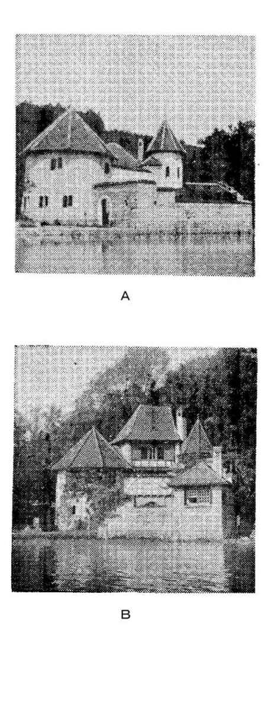

| ユングの生涯 (レグルス文庫) | |
| 河合隼雄 | |
| (1978) | |
ユングの生涯
河合隼雄
レグルス文庫１００
この電子書籍は、縦組みの底本を元に作成しました。
目次
カバー写真 (c)AKG/PPS
＊底本11刷までに記載されていた「精神分裂病（者）」は、原則として「統合失調症（者）」に変更しています。
１ はじめに
ユングと現代
スイスの精神医学者──彼は自分自身をよく魂の医者と呼んだが──カール・グスタフ・ユングの名は、わが国においても相当有名であると思われる。しかし、彼の名は、フロイトと共に精神分析運動の初期に活躍した人として、コンプレックス、内向─外向などの言葉と共に記憶され、実は彼は一九六一年に八十六歳の長い人生を終えたのであるが、ずっとそれ以前から、「過去の人」として遇されてきた感があった。ところで、ごく最近になって、ユングに関心をもつ人が急増し、彼の心理学を再評価しようとする動きが活発になってきたように思われる。そして、彼を一人の精神医学者としてよりは、今世紀における偉大な思想家の一人として見直そうとするような傾向が伺われるのである。
ユングの復権の現象は、わが国だけのことではなく、欧米においても同様に生じているのである。筆者が一九六五年にスイスのユング研究所から分析家の資格を得たときは、世界中でユング派の分析家は二百人程度であったが、一九七七年には六百人足らずにまで急増している。分析家の国籍も十九ケ国にまたがるようになり、少数ではあるが、アジア、オーストラリア、南アメリカにまで及んでいる。
ユングの生涯についてこれから述べてゆく前に、彼がどうして現在において強い関心をもたれるようになったかという点を、少し考察してみたい。ユングはもともと精神科医として、神経症や精神病の治療に従事してきたのであるが、その際に、人間の心の深層に存在する無意識領域に注目するようになった。かくて、今世紀の初頭に彼は精神分析の創始者フロイトのもとに参加し、共に協調することになったが、早くも、一九一三年には後に詳述するような考えの相異によって、訣別したのである。彼はその後、自分の独自の心理学を打ちたて、それを分析心理学（１）と呼ぶようになった。それでは、彼の心理学がどうして現在のわれわれに大きい意味をもつのであろうか。そのもっとも根本に存在する点は、彼が無意識ということに注目し、彼の患者である欧米人の意識の周辺に存在するものの意味を見出そうとすることによって、ヨーロッパ文明社会の底層に存在する隠された構造を的確に把握していたということである。
ヨーロッパに発生した特異な文化は、十九世紀末から今世紀初頭にかけて、その威力を全世界に揮い、そのすべてを支配するかに思われた。ヨーロッパから派生し、ある意味ではその頂点を極めたとも言える新興国アメリカは、世界の中心と見なされるようになった。しかし、最近になって、アメリカのヴェトナムにおける失敗が象徴的に示すように、世界の人々は欧米中心主義が崩壊しつつあるのを感じとっている。交通機関やマス・メディアの急激な発達によって、世界の人々は人間の生き方や思想などの多様性を身をもって知り、欧米文化を唯一の尺度として他の「進歩」の程度を測る愚に気づき始めている。欧米を唯一の目標とし、それに追いつくことに全力を傾けた日本が、他の多くの国に先がけて公害に悩まされることになったのも、皮肉な現象である。
ユングは一般の人々が欧米中心主義に何らの疑義ももたぬ頃から、それに対する深い疑いによって自ら悩み、彼のもとに訪れてくる患者の悩みの底に同様の問題が存在していることに気づいていた。ヨーロッパの文化を支える二つの柱、キリスト教と自然科学に対して、彼の疑いの目は向けられた。キリスト教と自然科学は時に相対立したりしながらも、うまく相補的に働き、ヨーロッパの繁栄を支えてきたものである。しかしながら、両者共に堅固な体系を形成するにあたって、それと相容れないものを峻厳に拒否する性格をもっている。従って、そこから締め出されたものは、欧米人の無意識の領域へと追いやられてゆくことになる。ところで、ユングはそのような無意識の世界に注目し、その当時はまったく堅牢と思われていたヨーロッパ文化の崩壊への危険性を読みとると共に、一方では、それを補償し新たな発展へと向う可能性をも、その中に読みとっていたのである。しかし、その頃の状況の中では、彼の言に耳をかそうとする人は極めて少なかった。「ユングは生まれるのが百年早かった」という彼の弟子の嘆きは、少し声高に響きすぎるとしても、彼が時代の流れを相当に先取りしていたことは認めねばならない。
ヨーロッパ文化の底層に隠されたものについては、フロイトももちろん気づいていた。彼がそれに、セックスという呼び名を与えて発表したとき、強い反発と拒否に出会ったのも当然であろう。しかし、彼の方法論は、その隠されたものを、今までのヨーロッパを支えてきた科学的方法論に、出来るかぎり従うことによって明らかにしようとするものだったので、徐々に受け容れられるようになったのであった。ユングのそれは科学的方法論自体をさえ疑うものであったので、理解されるために長い年月を要したのである。誤解のないようにここでつけ加えておかねばならないが、後に述べてゆくように、ユングはキリスト教も自然科学も、それを否定しようとするのではない。そこに次元の異なる新しい要素が加わり、高次の統合性を目ざす必要を説くのである。
現代は不安の時代であると言われる。わが国を例にとってみても、親子、夫婦などの家族関係の在り方に確固とした規範を持たぬために、家庭内暴力や離婚などの問題が急激に増加している。ヨーロッパ中心主義の崩壊などということを述べたが、そのために、われわれ日本人も中心喪失感に悩んでいる。つまり、中心となる規範が不明なのである。キリスト教に対する疑問ということから、すぐに仏教やイスラム教を世界の中心に据えて、現代の不安が解消されると考える人は、数少ないことであろう。仏教国であるわが国において、一体何人の人が仏教によって安心立命しているであろうか。
安心立命を古くさく感じる人には、アイデンティティという用語を用いると納得されるであろう。現在における社会変動の急激さは、人々のアイデンティティを揺さぶるのである。このような現代の不安を先取りして、ユングは癒し難い内面の亀裂と不安を体験するが、そこから、個性化の過程という、ひとつの解決への道を見出してくる。それは単純に考えられるような「救い」を与えるものではない。逆に悩みを深めるものとさえ言うべきかも知れない。しかし、現代の不安におびえるわれわれに対して、ユングの心理学は、われわれが不安から逃れることなく、それと直面してゆく勇気を与えてくれるものである。
現代の社会の混乱や不安に対して、既成の宗教による救済を期待する人はあまり多くないであろう。さりとて、自然科学の発達によってユートピアが出現するとは、十九世紀末の人々が信じたように、われわれは素朴に信じることができなくなっている。あるいは、現代社会の若者たちの問題を、「性の抑圧」という図式で説明することにも無理を感じるであろう。ユングがこれに対して、出来合いの「答え」や「救い」を与えてくれるはずもないが、闇の中に何とか光を見出そうとした彼の心理学は、何らかの示唆を与えてくれるのではなかろうか。
ユングの生涯
ユングの人生と、彼の心理学は切っても切れない関係をもっている。彼はしばしば、心理療法家として患者に向ける理論の刃は、取りも直さず治療家自身に対しても向けられていることを強調するが、確かに、彼は自分の心理学を生きてきたと言うことができるのである。ユングは自分が「経験主義者」であることをよく強調するが、それは、彼の心理学が彼自身の無意識との対決、および、彼が共に関与した彼の患者たちのそれを基礎として成立していることを意味している。従って、ユングの心理学を理解するためには、その人はそれ相応の「経験」をもたねばならない。単なる知識を獲得するだけの態度では、ユングを理解することは難しい、と言わねばならない。彼の心理学は「生きる」ことと密接に結びついている。
「私の一生は、無意識の自己実現の物語である。無意識の中にあるものはすべて、外界へ向って現われることを欲しており、人格もまた、その無意識的状況から発達し、自らを全体として体験することを望んでいる。」と、彼は『自伝（２）』の冒頭に記している。「無意識の自己実現」としての彼の一生について語ることは、彼の確立した無意識の心理学について語ることになる。従って、彼の生涯を知ることは、彼の心理学理解のための強力な手段となるのである。ところで、ここに引用したように、ユングは『自伝』を書いている。ユングはもともと、自分の個人的な生活を公衆の前にさらすのを嫌う傾向の強い人であった。しかし、多くの人のすすめによって、晩年になって『自伝』を書くことに同意した。これは、彼の秘書のアニエラ・ヤッフェ編という形式をとり、ユングの語るところや、過去の記録などを彼女が編集したのであるが、興のおもむくところ、八十歳を超えたユング自身が筆をとって書き下ろしたところもある。これはユングの希望によって、ユングの死後に出版されたのであった。
ところで、ユングの『自伝』は極めて特異なものである。というのは、これはあくまで彼の内面に目を向けられたものであり、外的な事象については、ほとんど語られていないと言ってよいほどのものだからである。しかも、ここに言う「内面」とは、まさに無意識の世界であり、一般に考えられるような内省とか、個人的感情などを意味しているのではない。たとえば、彼が『自伝』の中で、彼の妻の死について語っているのは、「一九五五年の妻の死後、私は自分自身にならねばならぬという内的義務を感じた」というだけである。このことは、時に誤解を生み、ユングが個人的な感情に乏しい人であるかのような批判を呼び起こすことにもなったが、事実はそうではなく、ユングに親しかった人々の証言によると、妻を失ったときの彼の悲しみは実に深いものであったらしい（３）。ただ、彼はそのような感情を『自伝』に書かなかっただけである。つまり、彼が『自伝』に書き残そうとしたのは、そのような感情や内省などではなく、もっと深い──人類共通の普遍性をもつとさえ思われる──無意識の世界の出来事であったのである。
ユングは友人から青年時代の思い出について書いて欲しいという依頼を受けたときに、それに対する返事の中で次のように述べている。「私の人生のすべての『外的な』面は偶発的なものだったのです。内的なことだけが、実体性をもち、決定的な価値をそなえていることがわかったのです。その結果、外的な事柄についてのすべての記憶はうすれてしまったのです（４）。」
かくて、彼の『自伝』はひたすら「内面的」なことに焦点づけられる。ここで誤解のないようにつけ加えておかねばならぬことは、これは彼が「外面的」なことを軽視したことを意味していないということである。彼は、外的なことの記憶がうすれていったことを述べた前記の手紙の中で、「それらに私が自分の全エネルギーをあげて関与したという、その理由によってこそ（５）」消え去っていったのだと、逆説的な表現をしている。彼は外的なことも十分にやり抜いてきた人である。彼は、外的なことを避けて内的なことをやり抜くことなど不可能であると考えていた。ユングの本領は、それにしてもあくまで内的なことにあるので、本書においても彼の内的世界に焦点をあてて述べてゆくことになるが、外的な事実の方も適当に触れてゆきたいと思っている。その方が、ユングを全体として理解しやすいのではないかと思われる。
ユングの『自伝』を読んで、時にもたれるもう一つの誤解は、彼を「聖者」のように感じることである。筆者はスイス滞在中にユングを知る人々に、彼のイメージをいろいろと語って貰ったが、それは、行いすました聖者というのからは、はるかに遠い存在であった。彼は感情表現をおさえることなく、率直に出す人であったらしい。怒ったり、ぶつぶつ言ったり、また、楽しいときはよく笑う人であったらしい。スイスで、彼の甥という人に会ったとき、ユングのことを聞かして欲しいと言うと、「われわれは伯父さんの中で、あの伯父さんが一番好きだった」と答え、それは彼が偉いとか有名とかいうためではなく、「伯父さんの中で、あんな面白い人はなかった！」と、今思い出しても楽しくなるという表情をして言ったのが非常に印象的であった。
スイス人特有の節約癖──ケチと言うべきか──があって、秘書が手紙を出すときに適当な切手がなかったので、少し高い目のを貼って出すと、カンカンに怒ったとか、案外保守的なところがあって、女の人がパンタロンをはくのを好まなかったとか、このようなエピソードをいろいろと聞いた。ただ、面白いのは、これらのユングを深く尊敬する人々が、ユングの欠点？とも思えることを楽しげに語り、それがユングに対する敬愛の念を深めているようにさえ感じられたことである。彼にインタビューしたＢＢＣ放送のブラック氏が、彼の印象を述べて、スイスの田舎の百姓のおじいさんのようだと言ってもよろしいか、とユングに念を押すと、「そのとおりで、ちょいちょいそうよばれたものです」と彼は答えている（６）。彼は老賢者であると同時に一人の平凡な老人でもあるのである。彼のこのような多面性は誤解や、あらぬ噂の種になることも多かったようだ。ユングのように多面的で偉大な人物の全貌を描き出すことは、不可能に近く、筆者の彼に対する傾倒の強さによって、記述は時に光の部分に偏ることになろうが、読者のイマジネーションによって、その欠点をカバーし、人間ユングの姿を心に描き出して頂きたいものである。
スイスの土壌
ユングの伝記を書いた、ユングの弟子、バーバラ・ハナ（７）は、その冒頭に「スイスの土壌」という節を設けている。これは、ユングの育ってきた背景を考える上で真に適切なことであり、しかも、スイスという国が案外よく知られていない点から考えても多少ともこの点に触れるのは必要なことと思われるので、筆者も彼女の知恵を借りて、少し述べてみたい。
わが国で、あなたの一番好きな国はと問うと、スイスがあげられることが最も多い。日本は東洋のスイスになるべきだと言う人さえあるが、こんな人たちもスイスの実態を知らずに言っていることが多い。平和の国スイスというイメージをもっている人で、スイスが国民皆兵であることを知らない人もある。
ユングの人となり、従って彼の心理学を知るためには、それの生まれて来た土壌を知らねばならない。われわれがスイスに住んでみて、まず印象づけられるのは、その多様性ということであろう。スイスは合衆国なのであり、各州が──と言っても小さいものだが──おのおののシステムを持っている。何しろ、国語が、ドイツ、フランス、イタリー、ロマンシュの四ケ国語あり、各自治体は会議によって何語を公用語か定めるのだから、なかなか大変である。未開発国が国の「統一」を目ざすときに、まずこころみることは国語の統一であることを考えると、このような多様性に耐えて、統一国家を維持してゆくことの強靱さには感心してしまうのである。多様の中の統一はスイスのモットーであるし、それはユング心理学においても同様であると言うことができる。
ジェームス・ジョイスは、スイスを「精神の自然公園」（Naturpark des Geistes）と呼んだという。精神という語は、確かにスイスを語るのにふさわしい語だと思う。筆者がユング研究所に留学し、研究主任のヒルマン博士に会ったときに、彼が「チューリッヒの精神」（The spirit of Zürich）が、分析を学ぶのにふさわしいと言ったことを印象深く記憶しているが、このようなときに使われる「精神」という語が、まことにぴったりとした感じで響いてくるのである。ユングのみならず、ビンスワンガーとか、メダルト・ボスなどの偉大な心理療法家がスイスから出ているのも、スイスの土壌の精神性を反映していることであると思われる。
バーバラ・ハナは、スイスは山国であると言っても、平地ではなかなかアルプスが見えず、晴天の日に時々、突如として見えてくるアルプスの連峰の姿は、「精神」ということや、到達し難い夢の国の存在を感じさせる、と指摘している。ユングは『自伝』の中で、幼児期の印象的な記憶として、夕日に映えるアルプスの姿を見た感動を述べている。このようなイメージが彼の人格形成に大きい意味をもったであろうと推察される。
スイスが文字どおりの民主主義の国であることは、人も知るとおりである。直接民主主義と呼んでもいいほどの体制の中で、ユングも義務としての投票を欠かすことはなかったという。週末はボーリンゲンの別荘ですごすのが好きだった彼も、投票があるときには「残念ながら今週は投票のためにボーリンゲンに行けない」と悲しそうにしていたということである（８）。このような民主制と、大国の中にはさまれつつ中立を守り抜く気概とに示されるように、スイス人が自分の意見を貫く態度は立派なものである。ＢＢＣ放送での対談のとき、ユングの思想の根底にスイス人独特のなにかをもっているという点について、ユングは、「スイス人は特殊な独立精神をもっており、つねに自己の判断を保持します。たやすくひとまねはしません......（９）」と誇らしく語っている。
スイスの永世中立は、国民皆兵という体制によっても支えられている。スイスに住んでみると、国民の一人一人が兵役に対して忠実であり、射撃は国技と言いたいほど熱心であるのに驚かされる。第二次世界大戦のとき、ナチスドイツの侵入を防ぐことができたのも、スイス人のこのような強さのお陰である、ということを、筆者もしばしば聞かされたものである。スイス人の中立を愛する心が、強い闘争心によって支えられていることを知ることは必要である。ユングもスイスの軍隊に誇りを持ち、その義務を喜んで遂行している。ユングの強固な意志の背景に、スイス人のこのような特徴が存在しているのである。
中立と平和を維持してゆくためには、内部における「合法的戦い」が必要であることを、ユングは強調する。既に述べたように、小さいスイスという国の中で、ドイツ語地区、フランス語地区というように別れているのだから、お互いが相手を「悪」と見なせば──そのようなことはよく生じることだが──戦争を起こすより仕方がないだろうし、スイス合衆国は直ちに分裂するだろう。そこで、スイス人は政治という合法的な戦いを派手に行い、論戦を通じて相互理解に達し、統合を保つことを、四百年以上の歴史を通じて学んできたのである。この点も、スイスの特徴としてあげるべきであろう。
バーバラ・ハナが、欠点を指摘することも必要だからと断りながら、スイス人は、お金を高く評価しすぎる点をあげているのは興味深い。スイスにおける「精神」の意味を最初に述べながら、お金を大切にしすぎるというのも変なことだが、このような矛盾をはらむところにスイスの特徴があるとも言えるだろう。
スイスの土壌ということを述べて来たが、これは決してユングが国民主義者であることを意味するものではない。むしろ逆に、彼は国際的で、ユング研究所には世界各国の人々が集り、講義もドイツ語の他に、英語、フランス語（時にイタリー語）でも行われている。彼の提唱する普遍的無意識の存在は、民族や国の区別を超えた、国際的な人類の共通部分に目を向けさせられるものである。しかしながら、個性的なものこそ普遍的であるという逆説が真であるように、いかに普遍性をそなえたものであっても、それがよって立つ個別的な基礎を無視することはできないのである。ユング心理学を知るために、スイスという土壌の質について、少しは知っておく必要があるのもこのためである。
２ 地下の世界
生い立ち
カール・グスタフ・ユングは、スイスのツルガウ州のケスヴィルで、一八七五年七月二十六日に生まれた。父親のポールは牧師であった。ケスヴィルの牧師館の壁には、ユングがここで生まれたという記念碑がはられ、そこには、「人間の魂とその隠された深層の探究者」と書かれているという。ユングの母方の祖父もバーゼルの牧師であり、ユングの家系には宗教家が多く、このことはユングの人格形成に極めて大きい影響を与えている。
ポールの父、すなわちユングの祖父は、これも、カール・グスタフ・ユングという名である。祖父のカール・グスタフ・ユングは、一七九四年にマンハイムに生まれ、ハイデルベルク大学で医学を学んだ。彼は学業が極めて優秀であるのみならず、なかなか面白いユニークな人で、ペットとして豚を飼い、散歩のときは犬を連れて歩くように豚を連れて歩き、ハイデルベルクの市民を喜ばせたという（１）。彼は二十四歳のときにスイスのバーゼルに来て、二十八歳にして、アレキサンダー・フンボルトの援助はあったが、バーゼル大学医学部教授となった。彼は当時において既に、精神障害に悩む子供たちのための施設をつくったりしたのだから、彼の存在は孫であるユングが精神医学をバーゼル大学で勉強するようになったことに影響していると思われる。この点について、ユングが『自伝』の中で、この祖父のことを子供の頃から沢山聞かされていたので、人真似はしたくないという気持から、医学を勉強しようなどとは学生時代に思ったことがなかった、と述べているのは興味深い。しかも、結局のところ医学を専攻するのだから、「影響」などというものは本人の意識とは別のところではたらくものなのであろう。
ユングの家系図は、このカール・グスタフ・ユングの祖父のシグムント・ユングで切れて、それ以上たどることができない。シグムントはマインツの市民であったが、スペイン王位継承戦のときの戦いでマインツの市立文庫が焼けたため、家系図が不明になってしまったのである。ところで、このマインツに医学・法学博士でカール・ユングという人が十七世紀にいたことが解っており、おそらくこの人はユングの先祖であると思われる。この博識の人、カール・ユングは有名な錬金術研究家、ミヒャエル・マイヤー（一五六八─一六二二）や、ジェラルドス・ドルネウス（十六世紀末）と同時代人であり、近くに住んでもいたので、親交があったのではないかと思われる。ドルネウスはパラケルススの弟子であり、ユングが錬金術やパラケルススに強い関心をもって論文を書いている事実（２）の背後には、このような歴史の鎖が存在していることを知ると、ヨーロッパの文化の重みが今更のように感じられるのである。
古くまで家系をさかのぼったが、話をユングの両親にもどすことにしよう。父親のポールは、前述のカール・グスタフ・ユングの十三番目の末子である。（面白いことに、ユングの母のエミーリーも、十三番目の末子である。）彼は大学で古典と東洋の語学を学び、その分野で教授になりたいと望みを持っていたが果たせず、田舎の牧師として職についた。ユングは自分にとって「父」という語は信頼感と無力さを意味したと、後年に述べているが、ポールは優しく寛容であるが、気の弱い人であったのだろう。これに対して、母のエミーリーは力強く、精力的な人だったらしい。
ユングは『自伝』の中で、彼の母親について、「私の母は私にはとてもよい母であった。彼女はゆたかな動物的あたたかさをもち、料理が上手で、人づき合いがよく、陽気だった。母はよく肥えていて聞き上手だった。彼女はまた話し好きでもあったが、その話しぶりは泉がざあざあと派手な音をたてるのに似ていた。」と述べている。しかし、このような常識的な「母」としての像の後に、不可解な強い人格が潜在しているのだった。これは次章に述べるように、ユングの生いたちに大きい影響を与えている。
ユングの父がどこか、うっ屈した気弱な面をもち、逆に、母親の方が精力的だった事実を、アンソニー・ストーがフロイトの両親と対比させていることは興味深い（３）。ストーは、フロイト派にもユング派にも偏せず、中立的な立場でユニークな『ユング』という著書を書いたが、その中で、この両親像の差が、フロイトとユングの学説の差に反映されていることを指摘している。フロイトの父は、厳格であり、権威者であった。また、彼の母は暖かく見守ってくれる人で、強さを感じさせる人ではなかった。このような家庭に育ったフロイトが、父性原理に基づく深層心理学を建設し、ユングはフロイトに比して、はるかに、母性原理を重んじなければならなかった、というのである。フロイトにとって大きい意味をもつ、超自我ということは、明らかに厳しい父親像に根ざしているが、ユングにおいては、あまり注目されない概念なのである。
ユングが生まれて六ケ月後に、ユング一家は、ラインの滝の上流にあるラウフェンへと移ってきた。ここに四年間いた後に、一八七九年には、バーゼルに近いクライン・ヒューニンゲンへと再び引越すことになるが、ラウフェンにいる間、ユングの両親は性格上の相異から不和になり、母親は暫く別居する。これは幼いユングにとって痛手となったことは当然で、全身湿疹にかかってしまう。これは今でいえば明らかに、心身症の症状であろう。ユング自身の言葉にあるとおり、よい母として後に感じられた面と、このように自分を棄てて暫く消え去っていた母としての、否定的な面と、母親のもつ両面を幼いときに体験したことも、ユングにとっては大きい意味のあることであったろうと思われる。
地下の神
ユングは三歳と四歳の間に、「一生涯ずっと私の心を奪うことになった」と彼自らが述べている、次のような夢を見た。彼はこの夢を六十五歳になるまで、誰にも話さず秘密にしていたという（４）。
「牧師館は、ラウフェン城の近くに全くぽつんと立っていて、寺男の農家の背後には大きな牧場が拡がっていた。夢で私はこの牧場にいた。突然私は地面に、暗い長方形の石を並べた穴をみつけた。かつてみたことのないものだった。私はもの珍しそうに走り出て、穴の中をみつめた。その時、石の階段が下に通じているのをみたのである。ためらいながら、そしてこわごわ、私は下りていった。底には丸いアーチ型の出入口があって、緑のカーテンで閉ざされていた。ブロケードのような織物で作られた、大きい重いカーテンでとてもぜいたくにみえた。後に何が隠されているのかを見たくて、私はカーテンを脇へ押しやった。私は自分の前のうす明りの中に長さ約一〇メートルの長方形の部屋があるのを見た。天井はアーチ形に刻んだ布で作られていた。床は敷石でおおわれ、中央には赤いじゅうたんが入口から低い台にまで及んでいた。台の上にすばらしく見事な黄金の玉座があった。確かではないのだが、多分赤いクッションが座の上にあった。すばらしい玉座でおとぎ話の本当の王様の玉座だった。何かがその上に立っていて、はじめ、私は約四─五メートルの高さで、約五〇─六〇センチメートルの太さの木の幹かと思った。とてつもなく大きくて、天井に届かんばかりだった。けれどもそれは奇妙な構造をしていた。それは、皮と裸の肉でできていて、てっぺんには顔も髪もないまんまるの頭に似た何かがあり、頭のてっぺんには目がひとつあって、じっと動かずにまっすぐ上を見つめていた。
窓もなく、はっきりした光源もなかったが、頭上には明るい光の放散があった。微動だにしないにもかかわらず、私はいつそれが虫のように、玉座から這い出して、私の方へやってくるかもしれないと感じていた。私はこわくて動けなかった。その時、外から私の上に母の声がきこえた。母は『そう、よく見てごらん、あれが人喰いですよ』と叫んだ。それが私の怖れをさらにいちだんと強めた。目が覚めると、私は汗びっしょりでもう少しで死なんばかりだった。その後幾晩かにわたって、それに似た夢をまた見るのではないかとそれがこわくて眠れなかった。」
幼いユングをおびやかした、この凄まじい夢は、彼にとって測り知れない大きい意味をもつものであった。彼はこの夢を先にも述べたように誰にも秘密にしておいたが、その意味は年がたつにつれて、彼自身に明らかになってきた。地下の玉座の上に存在していたのは、ファルロスであり、地下の神であった。ユングは父親が牧師であったためもあって、幼いときから宗教に強い関心をもっていた。しかし、彼にとって至高善の神のイメージは単純に受け容れ難かった。神のもつ両面性ということは、彼の生涯のテーマであった。つまり、善のみの存在ということが彼には受け容れ難かったのである。このことは、彼がスイスの田舎に育ったことと大いに関係しているかも知れない。そして、彼の極めて稀な鋭い感受性ということも、これに関連してくるだろう。田舎に住んで、彼は早くから、死や天然の災害の存在を知り、それによって悩み悲しむ人々の心情を鋭く感じとり、自らも心を痛めるのであった。このような悲しみや痛みが現存しているのに、この世を創った神を至高善とすることは、彼にとって納得のできないことであった。このような点から考えると、この地下の神は、天なる至高善の神に対して、悪を表わしているとさえ言えるかも知れない。あるいは、天の神が霊を重んじるとき、この地下の神は、その姿の示すとおり、肉の存在を重んじるとも考えられる。
ユングが、無意識の研究に従事するようになってから、常に強調したことは、無意識と意識の相補性ということであった。無意識は意識の一面性を補い、それと相反するものでありながら、それらの統合によって、より高次の全体性へと向うようなはたらきをもっている。ユングの夢も、このような相補性という観点からみると、それは、当時の一般的なキリスト像に対する相補的な存在として生じてきているとも考えられるのである。このような夢は、いわゆる「大きい夢」であり、ユング個人の意識に対するものとしてよりは、その社会全体の在り方や考え方に対するものとして生じてきたものと見るべきである。従って、このような「大きい夢」は、ユングの生涯にわたる仕事を先取りしているかのようにさえ感じられるのである。
地下の玉座に鎮座するデーモンは、ユングの生涯にわたってはたらき続けた。彼はその『自伝』の最終章に次のように書いている。
「私の中にはデーモンがいたのだ。その存在は結局のところ決定的なものであった。それは私を圧倒した。私が時に傍若無人であったとすれば、それは私がデーモンによって駆り立てられていたからである。私が何かに到達したとき、そこでとどまることは決してできなかった。私の幻像に追いつくため、先を急がねばならなかった。私の同時代の人々は当然のことながら、私の幻像を認めることができず、彼らは先を急ぐ一人の愚者を見るに過ぎなかった。」と記している。
創造のデーモンに駆り立てられた人間は厳しい人生を歩まねばならない。ユングは自分の創造の道を共に歩もうとする人とは親しくつき合ったが、ある「到達点」にまで達して、その人がそこに止まろうとするときでも、デーモンは未だ先へと彼を駆り立て、彼はその親しい人と袂を別って先へ進まねばならなかった。このため、彼は時に冷淡な人に見え、多くの誤解を受け、敵をつくることになった。しかし、それは致し方のないことであった。彼はこのような状況を戦場にいる兵士にたとえ、戦友が倒れることがあっても、自分は断腸の思いをしつつ先へ進まねばならない運命にあるのだ、と言っている。デーモンの命に服する人には自由がない。彼はおそらく多くの友人を背後に残しつつ、一人で前進せざるを得なかったであろう。彼はまた、「多分、私は他の人よりもはるかに、人々を必要とし、同時にはるかに必要としない、と言うこともできよう。デーモンが活動するとき、常に人はあまりにも近く、あまりにも遠いものとなる。デーモンが停止するときのみ、人は中庸をなすことができる。」とも述べている。
幼児期の夢から一足とびに、晩年の追想にまで話が及んでしまったが、これも、その夢がいかに彼の一生を支配するほどの大きい意味をもつものであるかを示している、と考えられる。
秘密
ユングはクライン・ヒューニンゲンの学校へ六歳のときに入学した。父親は六歳になったユングにラテン語を教えはじめる。小さいときから、ユングは多分に内向的で、孤独であったらしい。次のエピソードは、少年ユングの内的な世界への関心を如実に示している、と思われる。
ユングは九歳くらいの頃、自分の好きな石の上に坐って、次のような想像の遊びをしたという。彼は、「私はこの石の上に坐っている。そして石は私の下にある」と考える。ところが、石の方も「私だ」と主張し、「私はここに横たわり、彼は私の上にのっている」と考えることもできる。とすると、「私はいったい、石の上に坐っている人なのか、あるいは、私が石でその上に彼が坐っているのか」が解らなくなってくる。「いったい誰が何なのか」という問いは全くはっきりせず、しかし、それは「好奇な魅惑的な闇の感じに伴われる」のであった。少年ユングは、そのような謎に魅せられて、数時間もの間、石の上に坐っていることもあった。荘子の胡蝶の夢を思わせるような、このような「遊び」に少年ユングがふけっていたのは、まったく驚くべきことである。
ユングの「秘密」は、その後ますます明確な形を与えられてゆく。彼は定規の端にフロックコートを着て背の高い帽子をかぶり、ぴかぴかの黒い長靴をはいた長さ約六センチメートルの小さな人形を刻み、インクで黒く塗り、のこぎりで切り抜いて、それを筆箱に入れていた。筆箱の中にはこの人形のためにベッドを作っておいた。また、ライン川から、つるつるした楕円形の石を拾ってきて、上半分と下半分を絵具で塗りわけ、この人形と石とを、屋根裏部屋へ誰にも見つからぬように、隠しておいた。これは、彼の「偉大な秘密」であった。彼は心を傷つけられたり、父のいらいらに悩まされたりすると、屋根裏部屋にゆき、そっと人形と石を見ることによって、心を癒されるのであった。彼はこの秘密によって、自分の安全が守られていると、何ということはなく、感じていたのである。ユングは時に、授業時間中に自分で作り出した秘密の言葉を巻紙に書き、後でそれを人形のはいっている筆箱に入れにいった。それは彼にとって重要な儀式のようなものであった。
八─九歳の頃、このような「秘密」や、秘密の宝物などを持つ子供は多い。これは、子供のアイデンティティを支える重要なものなのである。ユングは『自伝』の終りの方で、「人間にとって大切な『個』としての感情を強めるには、その人が守ることを誓った秘密をもつことが一番いい方法である。」と述べている。八─九歳の年齢で、子供は子供なりの『個』を確立するのではないだろうか。もちろん、それにはすぐに続いて思春期が訪れ、子供は成人になるための長い試練に耐えてゆかねばならないのであるが。この年齢のときに、うまく「秘密」が持てなかったり、心ない大人──両親であることが多いが──によって、秘密があばき出され、不適応に陥る子供が案外にいるものである。
彼は後年になって、フロイトとの離別の端緒ともなった、『リビドーの変遷と象徴』の著作を準備しているときに、子供時代のエピソードを興味深く思い出した。というのも、彼がその当時、精神病者の世界を理解しようとして、世界中の宗教や、未開人の心性などを研究しているときに、自分の「宝物」と類似のものを見出したからである。たとえば、オーストラリアの住民たちが大切にしている、チュリンガという石は、楕円形で、上半分と下半分が塗り分けられているものである。あるいは、定規に刻みこんだ人形と類似のものとして、ギリシャの医神アスクレピオスの記念碑の上に立って、彼に巻物を読んできかせるテレスホロスの像を、ユングは見出したのであった。このような意味深い「宝物」によって、ユングは子供なりの「個」を確立することができたと考えられる。
「刻んだ人形のエピソードは、私の子供時代のクライマックスであり、結論でもあった。」とユングは述べている。確かに、彼の子供時代はこれによって頂点に達し、次の時代へと移ってゆくのである。
３ もう一人の私
少年ユング
十一歳のとき、ユングはバーゼルのギムナジウムに入学した。今までの田舎での学校仲間たちのつき合いとは異なり、彼は急に広い世界の中にはいって来たことを感じたのであった。田舎では彼は「牧師様の子」であったが、ここでは、田舎牧師の父をはるかにしのぐ有力者や、大きい家に住んでいる人たちの子弟と交わることになったのである。従って、彼の目は外的な広い世界へと向けられるのだが、やはり、彼の内界の重要さは少しも衰えるものではなかった。むしろ、それは後述するような２の人格の存在の自覚という形で、ますますはっきりとしてきたとさえ言えるのである。従って、少年時代の彼についても、内界に存在する「もう一人の私」というテーマに重点をおいて述べてゆくことにしよう。
ユングの六十歳の誕生記念に、ユングの少年時代の思い出について語った、友人オエリ（１）によると、幼児期のユングはとにかくとっつきにくい存在であったらしい。「こんな非社交的怪物に今まで出合ったことがなかった」と、オエリは冗談めかして述べている。ユングの九歳のときに妹が生まれるが、それまでは彼は一人子であったし、牧師の子供として、それほど他の子ともつき合わず、一人遊びをし、夢想にふけってすごしていたようである。彼は『自伝』の中で「私は一人で遊び、一人で森の中で白昼夢に耽ったり散歩したりして、私だけの秘密の世界をもっていたのである。」と述べている。
ところが、少し大きくなってくると、一人で夢想にふけるような反面で、いたずらものらしい面も出てくるようになる。友人のオエリを仲間に引きこんで「いくじなし」のいとこを笑いものにしては喜んでいたらしい。オエリの思い出によると、そのいとこを呼んできて、どこかのベンチに腰かけるように命令する。いとこがそれに従うと、ユングは大笑いをして喜ぶ。というのも、そこにはついさっきまで酔っぱらいが坐りこんでいたので、いくじなしのいとこが、その悪臭にやられるだろう、といった他愛のないものだったらしい。それにしても、こんなときのユングの高笑いは有名で、その癖は大人になってからも残っていたらしい。
「いたずらもの」の性格は大人になってもなくならず、ユングの思い出を語る人に、ちょいちょいとこのことを聞かされた。ユングが亡くなった後で、ユングとの思い出を記した『ユングとのふれあい（２）』という本が弟子たちによって出版された。その中には、ユングの老賢者のような面と、いたずらっぽい面が八十歳を越えてもなお共存していたさまが、多くの人によって描かれている。
オエリは「率直なところ、ユングは数学はまったく駄目だった」と述べているが、このことはユングも認めている。面白いことに、第２章に既に紹介したユングの祖父のカール・グスタフ・ユングも数学が駄目だったらしいのである。祖父のユングは日記の中で、数学に少しでも関係のあることがでてくると、自分の心は曇ってしまう、自分の子供たちが数学ができなくとも非難する気が起こらない、これは遺伝なのだから、と書いている。
トルストイもそうだったが、すぐれた思想家の中に数学がまったくできない人が割にいることは面白い事実である。数学の解らないことの一例として、ユングが『自伝』に書いていることも興味深い。少し引用してみることにしよう。
「中でも私を怒らせるのは、次のような命題だった。つまり、ａ＝ｂで、ｂ＝ｃなら、ａ＝ｃであるとする命題である。定義に従えば、ａはｂとは異なる何物かを意味し、従って別のものであり、ｂと等しいとはできない。ｃは勿論のことである。にもかかわらず、上述の等式を成立せしめるのだ。等価が問題の時はいつでも、ａ＝ａ、ｂ＝ｂ等々と言われ、これは受け容れることができた。ところが、ａ＝ｂは、私にはまっかなうそ偽りのように思えたのである。」
論理的な思考力を人並以上に持ちながら、数学が解らなくなる人が、どうしてそうなったのかを聞くことは興味深い。それは何らかの意味で数学の本質と深く関係していることが多いからである。ここでもユングの疑問は、数学において「等しい」とは何かという根本的な問題と関連しているように思える。こんなときに、ユングの疑問を掘りさげて、ゆっくりと話合える数学の教師がいればどうなっていたろうと思ったりするが、脱線はこれ位にして、本題に戻ることにしよう。
ユングは数学はできなかったが、他の自然科学の学問はよくできたようである。自然科学にも人文科学にも興味があるので、彼は将来どちらの方向へ進むべきか、なかなか決められなかった。彼は『自伝』の中で、ギムナジウム時代の思い出として、「私の関心は、二つのちがった方向に向けられていた。一方では、私は、事実にもとづいた真理ゆえに、自然科学に強い関心をよせ、他方では、比較宗教学に関係のあるあらゆる事柄にも魅せられていた」と述べている。自然科学では、動物学、古生物学、地質学などに惹かれ、人文科学では、ギリシャ・ローマ・エジプト、有史以前の考古学に惹かれていた。結局、彼は考古学を専攻したいと思うようになるのだが、外的な条件が重なって医学専攻に変わるのである。しかし、これはもう少し彼が成長してからのことであり、それより前に、ユングの生涯に大きい意義をもつことになった事柄について述べねばならない。
発作
十二歳という年は彼にとって宿命的なものであったとユングは述べている。
一八八七年の初夏のある日、彼は級友を待って大聖堂の広場に立っていた。そのとき、ふいに別の少年がいたずらに彼を一突きしたのである。彼は不意をくらって倒れ、石で頭をしたたかに打ち、意識を失わんばかりになった。その瞬間、彼の心の中に「もうお前は学校に行かなくともよい」という考えがひらめいたとのことである。
そのことがあって以来、学校の帰り道とか、両親が宿題をさせようとするときにはいつでも、彼は発作を起こすようになってしまったのである。意識を失ったようになって倒れてしまうのだから、両親も驚いたことだろうと思う。医者に診せても解らない。ある医者は、てんかんだと診断を下し、両親をますます心配させる。ところが、ユング自身の方は、てんかんの発作がどんなものか知っており、自分のはそんなものじゃないと、心中ひそかに医者を馬鹿にしているのだから始末が悪い。この「病気」のおかげで彼は半年以上も学校を休むことになるが、彼自身はそれを「一種のピクニックだった」と『自伝』の中に述べている。
「私は自由で、数時間もの間、夢想にふけることもできたし、森の中や川のほとりや谷間など好きなところへはどこへでも行けた。私は戦闘の絵や、戦争や、襲撃され焼き払われている古城のすさまじい光景を再びかきはじめ、あるいは幾ページもマンガをかいたりした。同じようなマンガが、今日までずっと、眠りにゆく前に時折浮んでくる。たえず動きまわり変化する仮面が歯をみせてにこっと笑いながら現われて来、その中にその後すぐに死んだ人の親しみ深い顔があるのである。」
このような記述を読むと、現在わが国において多く発生している学校恐怖症のことを、私は思ってしまう。彼らは学校にゆくことができないまま、家でマンガを描いたり、ロケットや飛行機の写真を集めて壁にはってみたりしてすごしている。そして、学校に行こうとすると腹が痛くなったり、頭痛がおこったりする。ユングの場合も一種の学校恐怖症としてみることができるのではないかと思う。思春期というのは大変な時である。どんな人であっても、この時期には何らかの障害にぶち当る。ただ、その人の内に秘められている可能性と、環境との相互の度合いによって、その程度が異なるだけである。障害の程度はむしろあまり問題ではなく、ただ、その人がそれを如何に克服していったかが大切となる。オエリは、ユングが「病気」で一年学校をおくれたと言っているから、ユングの「学校恐怖症」も一年は続いたのであろう。しかし、彼がやがてそれを抜けだしてくる決定的な時が訪れてくる。
ユングの「病気」が不可解で、よくならないので両親の心配は大きくなっていった。ある日、父の友人が訪ねてきて二人が話合っているのを、ユングは茂みの中にかくれて盗み聞きをした。客が「息子さんはどうですか」とたずねたのに対して、父親は、医者に診て貰っても何かわからないと答え、「もし治らないのなら恐ろしいことです。私はなけなしのものを全部なくしてしまった」と語る。これを聞いてユングは仰天した。彼の病気によって父親は思いがけない金を費していたのだ。ユングははっきりと「現実」に直面したのである。
その時以来、ユングはまじめな子になった。父親の書斎にはいって勉強し始め、発作に対しても必死になって戦った。二、三週間後には発作に襲われることもなくなり、学校に戻ったのである。彼はこの経験を通じて、神経症とはどういうものであるかを知ったと『自伝』の中に述べている。このような神経症の克服の過程についで、彼は別の重要な体験をしている。彼は登校の途中、ふいに一瞬間ではあったが、濃い雲の中から出てきたばかりとでもいう印象を受ける。
「今や、私は私自身なのだ！ それまでは、まるでもやの壁が私の背後にあるようだった。そして、その壁の後には、まだ『私』はなかった。けれどもこの瞬間、私は自身に出くわしたのである。......今や私は、私が今自分自身であり、今、私は存在しているのだということを知った。」と彼はこのときのことを回想して述べている。
思春期というのは大変な時代である。それは蝶になるために必要な蛹の時期に比することができる。蛹の内面では途方もない大変換が生じ、蝶という成虫へと変身するのである。ユングが神経症の悩みを克服した後に、自分の存在を自覚するところは、このような過程を如実に示していると感じられる。彼が一種の学校恐怖症のような状態になったことは、──彼自身は恥かしいことのように述べてはいるが──むしろ、当然のことのように思われる。というのは、内に秘めた可能性の大きいものほど変身の際に大きい苦悩を体験することは事実であるからである。彼自身も、一九四二年に、バーゼルにおける教育講演で、「秀才」について語ったとき、次のように述べている（３）。
「大きな才能というものは、人類という樹の最もすばらしい果実でもあり、またしばしば最も危険な果実でもあるのです。この果実は非常に細い枝になっていて、この枝はすぐに折れやすいのです。」これに続いて「創造的な能力は残念なことには逆に破壊的な作用をすることもあります」とも言っている。ユングの「創造的な能力」は、危うく彼を破壊するところだったが、彼の両親の庇護と、彼自身の自覚によって、それに打ち克つことができたのである。それにしても、このような子をもった両親や、彼と接した教師たちの苦労は大きいものがあったろうと推察される。
もう一人の私
ユングの興味が自然科学と人文科学の「二つのちがった方向」に向けられていたことは既に述べた。彼のこのような対極性は生涯にわたってもち続けられるのであるが、『自伝』の中で、彼はこれをもっとはっきりと、自分の中には二人の人物がいたと述べている。
「私はいつも自分が二人の人物であることを知っていた。一人は両親の息子で、学校へ通っていて、他の多くの少年たちほど、利口でも、注意深くも、勤勉でも、礼儀正しくも、身ぎれいでもなかった。もう一方の人物は、おとなで──実際年老いていて──疑い深く人を信用せず、人の世からは疎遠だが、自然すなわち地球、太陽、月、天候、あらゆる生物、なかでも、夜、夢、『神』が浸透していくものすべてとは近かった。」
このような二人の人物に対して、ユングは人格１と２という呼び方をしている。彼は少年時代の自分を「恥かしがりやで、臆病で疑い深く、青白くやせてみるからに丈夫そうではなかった。」と述べている。そのような外見的な１の背後に、際限のないほどの深さとひろがりをもった人格２が存在していたのである。このような人格１と２の対抗的な動きは、精神病理的な二重人格や、人格の分裂とは関係のないことで「あらゆる個人の中で演じられている」ことだとユングは言っている。ただ、２の存在に気づく人が意外に少ないだけである。
人格２の存在についてのユングの感覚は、時に非常に具体的で生き生きとしたものであったので、そのために混乱が生じかけることもあった。たとえば、あるときユングは、ルツェルン湖畔に家をもっている知合いの親しい家族から、一緒に休日を過ごそうと招かれた。そこの主人は息子とユングにボートを使うことは許してくれたが、向うみずなことをしてはいけないと言った。ユングはボートではなく、そこにあったこぎ船の方に乗って冒険をしているところを、その家の主人にみつかり、こっぴどく叱られる。こんなとき、ユングは言いつけを破ったために叱られるのは当然のこととして、まったくしょげかえっている反面、何かそれを不当のことと感じざるを得ないような２の動きをも感じていた。それはこの無知な田舎者が敢えて自分を侮辱しているという激しい怒りの感情であった。こんなとき、ユングは自分のことを、「この私は、単におとなであるばかりでなく、同時に、偉そうな、権威者であり、公職と威厳をもった人であり、老人であり尊敬と畏怖の対象であった。」と述べている。つまり、彼の人格２は、これほど生き生きとした具体的なイメージとして彼の中に生きていたのである。しかし、そのことは「現実との対照がたいへんへんてこだったので、私はふいに自分の怒りをとどめた。」たしかに、子供の頃に誰かに叱られたとき、そのことの正当性を認めながら、他方では自分の内なる誇りがそれに楯つくのを感じた経験をもつ人は多いであろう。しかし、その内面を一個の人格として、公職と威厳をもった老人という姿にまで具象化し得るところにユングの特徴が示されている。
ユングが面白半分ではあるが、満足げに、自分はゲーテの子孫かも解らないという「伝説」を語るのも、このような心性と関連していると見ることもできる。その「伝説」とは次のようなものである。「ユングの曽祖父のフランツ・イグナッツ・ユング（一八三一年没）の妻、ソフィヤ・ツィグラーとその妹は、マンハイム劇場と親密な関係にあり、多くの作家と親しかった。ソフィヤ・ツィグラーはゲーテとの間に私生児をつくり、それがユングの祖父のカール・グスタフ・ユングである。」この話は現在入手し得る資料からは、何らの証拠も見出せぬものである。にもかかわらず、ユングがこの話を面白がるのは、後にも述べるように、彼はゲーテのファウストを非常に高く評価しているので、「ゲーテの血」が自分の中に流れているという話に、内面的な真実を感じとっていたからであろう、と思われる。
ユングの人格の特異さは、学校の先生にはなかなか理解し難いものではなかっただろうか。なかには、ラテン語の先生のようにユングをよく理解してくれる人もあったが、この天才風の先生は、宿題の時間になるとユングを大学の図書館へやって本を持って来させる用事を言いつけたが、ユングは図書館からの帰り道に、できるだけゆっくりと歩き、その借りてきた本を夢中になって読み、退屈な宿題の時間をまぬがれたという。ところが、ドイツ語の先生はユングをまったく理解していなかったようである。あるとき、この先生の提出した作文の題が非常に興味深く感じられたので、ユングは特別に努力して自分ながら素晴らしいと思うほどのものを書いた。
先生は作文を成績順に返してゆくので、ユングは相当の期待をもって、自分の名を呼ばれるのを待った。ところが、先生は全部の作文を読みあげながら、ユングのだけは未だ手もとに残していた。先生はユングのは非常によく書けているが、これは何かを写してきたものに相異ないと断定し、何を写してきたか白状するように迫った。ユングは驚いて抗弁するが認められない。先生は「君は嘘をついている！ 君にはこんな作文は一度もかけやしなかった。誰もそんなことを信用しやしない。それでどこから写してきたんだい」と言いはるのである。ユングは級友たちも彼を白い目で見ているのを感じた。彼の異議申し立ては結局受け容れられなかった。
ユングは怒りと落胆を味わいながら、この事件について、いろいろと考えてみる。そして、結局のところ自分が自分自身を理解し得ていないと同様に、先生も自分を理解し得ないのだという結論に達する。彼の人格２が、時にその輝きを表面にまで到達せしめたときは、そこに存在する１をはるかに越えるものとしてはたらくのであろう。その深さとひろがりは、ユング自身にとっても未だ不可解のことであり、先生がそれをユング自身のものではなく、「借りもの」であると判断したことも、ある意味では正しかったと言えるだろう。
ユングの母も、人格１と２を持ち合わせていたとユングは考える。しかし、それは彼女にとってあまり意識されているようではなかったが。ユングの母の父はバーゼルの牧師であったが、透視力があるとか、死者と交信できるとか言われた人である。彼は常に幽霊にとりかこまれていると信じていたので、説教の草稿をつくっているとき、背後を幽霊が歩いて邪魔されぬように、娘（ユングの母）に自分の後にいるように頼んだという（４）。このようなことは、彼女の人格形成に大きい影響をもったことであろう。
ユングが六歳頃のことだった。近所に裕富な家があって、三人の子供があり、一番上はユングとほぼ同年の男子で、あとは女の子であった。彼らは都会人らしく振るまい、ことに日曜日には子供たちをエナメルの靴、白いひだかざり、白い手袋などで飾りたてた。彼らは何となくきざっぽい作法を身につけており、ぼろのズボンに穴のあいた靴という、ユングたち田舎者の少年たちとは、距離をおいて接していた。こんな態度を腹にすえかねた少年ユングは、この素晴らしい身なりの少年をひっぱたいていじめた。少年の母は大いに怒ってユングの家にねじこんでくる。ユングの母は怒り、ユングに対して涙ながらに説教した。彼は内心自分のしたことはまちがっていないどころか、逆に満足をさえ感じていたが、母の怒りをおそれて後悔し、部屋の中に一人ぽつんとしていた。母親は窓ぎわに坐って縫物をしていたが、ぶつぶつと何かつぶやいている。ユングは母親が「もちろん、子供をあんなふうに育てちゃいけない」と言っているのを聞いて、何ともいえぬ気持になる。さっきは、母親はユングの非を認めて説教した。しかし、ここで彼女の２のつぶやきは、金持の子供たちこそ変に育てられているのだと断定しているのである。母親の人格２は、その後もときどき出現して、ユングを驚かすが、それは常に深い真実を彼につげるもの──常識とはどれほどはずれているにしろ──であった。
ユングが人格１と２の問題として体験したことを、東洋の思想の影響を受けて、自我と自己の問題として定式化するためには、未だ相当の年月を必要としたのであった。それまでは、彼はこの両者の相克の中で凄まじい苦労を体験しなくてはならなかった。
葛藤する思想
ユングは自分のギムナジウム時代をふり返って、「私の生涯の中で、この時代は葛藤する思想に満ちたものであった。」と述べている。人格１と２を基盤として、いろいろな葛藤がユングの心の中にうごめいていたのである。
彼の葛藤の第一は宗教的なものであった。彼の父は牧師であった。彼は父の教えを守る敬虔なクリスチャンとして育ってくるが、そこにひとつの不可解な不協和音が鳴りひびいていることも認めざるを得なかった。十二歳の頃、ユングは大聖堂の広場に行った。空は青く、陽の光がさんぜんと輝き、大聖堂の屋根に映えていた。「世界は美しく、教会も美しい」とユングは思った。そして、これら素晴らしいすべてのものを創造された神のことに想いおよんだとき、彼は息苦しくなってくるのを感じた。彼はそこでそれ以上考え続けると、何か大変なことが起こりそうだという予感を感じて苦しくなってくる。彼は考え続けるかぎり、自分が途方もない罪を犯し、地獄におとされてしまう。それは両親にとってどんな悲しいことであろう。両親をそれほどの悲しみに陥れることのないように、自分はここで考え続けてはならないと思う。
このような彼の葛藤は、彼を考え続けさせようとする内面の力が、両親の教えとの間に摩擦を生ぜしめるものであろうことを予示している。ユングはそれを避けるために考え続けるのをやめようと努力するが、内からの力は強く、三日間の間、苦しみ抜く。とうとうたまらなくなって、ユングは考えはじめる。「なぜ私は自分の知らない何かを考えるのだろう。......誰が私にそうさせたがっているのだろう。この恐ろしい意志はどこから来るのだろうか。」罪深い考えは一体どこから来るのか、と彼は考える。自分の考えでないとすると、それは両親から来るのか。彼の善良な両親がそんなことを考えるはずはなかった。それでは祖父母たちか。こんなふうに考えすすんでいるうちに、彼はアダムとイヴの話を思いつき、人類の最初としてのアダムとイヴの犯した罪へと考え及んだ。どうして、彼らは神の望んでおられないような罪を犯したのだろう。
ここで、ユングの心の中に次のような考えが生じた。つまり、アダムとイヴが罪を犯したのも、神が彼らの中にそのような可能性を開いておかれたからである。そのことは、神がアダムとイヴ以前に悪魔を創られたことからも明らかである。「全能の神は、アダムとイヴが罪を犯さなければならないようにすべてを整え給うた。だから、彼らが罪を犯したのは、神の意志であった。」このように考えて、ユングは結局は、どのような考えが心に浮かんでくるにしろ、それを受け容れ、それに勇気をもって直面してゆこうと決心する。そこで、彼の見た凄まじいイメージについて『自伝』には次のように記されている。
「私はまるですぐにでも地獄の火の中へ飛びこもうとしているかのように勇気をかき集め、考えの浮ぶにまかせた。私は自分の前に大聖堂と青空があるのをみた。神は地球の上のずっと高い所で、黄金の玉座に坐っており、玉座の下からおびただしい量の排泄物が、きらめいている新しい屋根の上にしたたり落ち、屋根を粉みじんにこわし、大聖堂の壁をばらばらにこわすのである。」
神の排泄物が大聖堂をこわすというのだから、何とも物凄いイメージであり、ユングが抵抗を感じたのも当然であろう。この破壊は何を意味するのか。それは神によってなされたことであり、キリスト教そのものの破壊を意味していない。とすると、それは父親の教えによって代表される因襲的なキリスト教の考え方に対する挑戦を意味しているものであろう。たとえ、そのためにどれほどの勇気がいるとしても。ユングは『自伝』の中に次のように述べている。
「人間の勇気を試す際には、神はたとえそれがどんなに神聖であろうとも伝統に固執することを拒む。神は、その全能の力によって、そのような勇気を試すことからは、真に悪なるものは何ら生じないことを、すでに配慮しているであろう。」
ユングの宗教性はこのような体験によって深まっていったが、それは牧師である父親の教えとは異なったものとなっていった。彼は時に父と議論した。父親は、「お前はいつも考えたがっている。考えちゃいけない。信ずるんだ。」とよく言ったが、ユングは「いやちがう。体験しそして知らなくちゃ」と思っていた。昔の人がどう言ったか、書物にどう書いてあるかが大切ではなく、自分個人の体験こそ大切であると彼は考えたのである。そんなときに、ユングはキリスト教において重要な、聖餐式に参列するが、それは何の感激も彼にもたらさなかった。実際、既に述べたように、彼は内面的には宗教的イニシエーションの極みに達していたのだが、あまりにも因襲にとらわれた儀式は彼の内面にそぐわないものとなっていたのである。そのような儀式は彼にとっては宗教でもなんでもなく、むしろ「神の不在」を意味するものであった。
こんなときである、ユングは母の人格２が、何の前口上もなく不意に、お前はゲーテの『ファウスト』を読まねばならないというのを聞いた。彼は早速ファウストを読み、感激した。彼は「奇跡的な鎮痛剤のように私のたましいに浸みこんできた」と述べている。「ここについに、悪魔を真面目に取上げ、彼──完全な世界を創ろうとする神の計画の裏をかく力をもっている敵──と血縁関係を結んだ誰かがいる」とユングは考えた。彼はゲーテこそ、人間を暗黒と苦悩とから解放する際に悪が果たす神秘的な役割のわかる人であると感じたのである。
ゲーテに対する興味から、ユングは哲学に関心をもち、哲学書を読みあさる。その中で、彼が強い感銘を受けたのは、ショーペンハウエルであった。自分の内面に存在する「恐ろしい意志」について、悪について強い関心をもっていた彼としては当然のことであったろう。彼はまたカントの『純粋理性批判』からも多くを得たと述べている。
哲学に関する興味にもかかわらず、彼の自然科学への関心も弱まることはなく、常に「二つの方向」への勉学を絶やさなかったので、ユングはギムナジウムの同級生の驚くような博学になる。このようにして得た多くの知識をもって、彼はやがてバーゼル大学へとすすみ、そこで医学を専攻することになるのである。
４ 精神科医として
カンテラの灯
ユングはあらゆることに広い興味をもっていたので、大学で何を専攻するかに随分と迷ったが、結局は医学を学ぶことに決定した。その頃、次のような夢を見た。
「どこか見知らぬ場所で、夜のことだった。私は強風に抗してゆっくりと苦しい前進を続けていた。深いもやがあたり一面にたちこめていた。私は手で今にも消えそうな小さなあかりのまわりをかこんでいた。すべては私がこの小さなあかりを保てるか否かにかかっていた。不意に私は、何かが背後からやって来るのを感じた。振り返ってみると、とてつもなく大きな黒い人影が私を追っかけてきていた。しかし同時に私はこわいにもかかわらず、あらゆる危険を冒してもこの光だけは夜じゅう、風の中で守らなければならぬことを知っていたのである。目が覚めた時、私は直ちにあの人影は『影入道』つまり私のもって歩いていたあかりで生じた、渦まくもやに映った私自身の影だとわかった。私はまた、この小さなあかりが私の意識であり、私のもっているただ一つのあかりであることもわかった。私の自分についての理解は私のもっている唯一の宝物であり、最も偉大なものである。暗闇のもっている力に比べると、きわめて小さくかつ力弱いけれども、それはなおあかりであり、私だけのあかりである。」
この夢は、ユングに重大な啓示をもたらせるものであった。この夢によって、彼は彼の人格の１が光の運搬人であり、２は１に影のように従っていることを知ったのである。そして、彼はこのときに、それがどんなに小さく弱いものではあっても、自分のあかりである１をあくまでわがこととしていくことを決心したのである。２は魅力ある世界であった。それは「内なる光の国」であった。しかしながら、その「光の国」こそは、人間の意識の中では巨大な影となるものである。このことを知らず、「内なる光の国」にのみ魅せられたものは、不幸に陥る。ユング自身、この内界について彼が語ろうとすると、人々がうさんくさそうな態度をとったことに思い到るのであった。
ユングの弟子の一人、フォン・フランツが、この点に関連して現代の青年を引き合いに出し、彼らの陥りやすい危険性について述べているのは興味深い（１）。第１章に少し触れておいたように、外的世界の探究としての自然科学の発展に懐疑的となった現在の若者たちは、急激に目を内界へと向け、ドラッグの助けを借りて「内なる光の国」に親しむことになる。ところが、彼らはしばしば人格１の支持を失い、破滅へと向ってしまうのである。最近アメリカにおいて、急激にユングの本が読まれ出したのも、ドラッグの急激な伝播によって、外向的な国アメリカの人々が思いもよらなかった内界の存在を知ったことが大きいと思われる。しかし、ユング自身の人格１に対する、このような態度をも受け容れないかぎり、それは大変危険なことになるであろう。
ユングは現在の若者たちのような破滅へと向うことなく、創造の道を歩むことができた。しかし、これは──現在の多くの人がそうであるように──２を無視するのではない。彼は自分自身を１と同一と感じるようになり、２を後にして前進してゆこうと決心した。しかし、どんな時でも、彼は２をあえて否定したり、妥当でないと宣言したりはしなかった。２を否定した人は、安全だが、人生の半面のみを生きることになったり、時には、無視された２の怒りを受けて、手痛い打撃をこうむったりする。この１と２の関係は極めて微妙であり、人生において、幾多の難問を引き起こすものである。
ユングはニーチェの「ツアラツゥストラ」に心を奪われながらも、ニーチェが１の役割を棄てる危険性に陥っていったと考え、これを批判した。当時のバーゼル大学の学生の間では、ニーチェの噂でもちきりで、ユングもそれらを多く耳にした。ニーチェが紳士然としているとか、ピアノのひき方がどうとか、文体が大げさすぎるとか。そのくせ、噂をしている人たちは、ニーチェの著作をあまり読んでいなかった。ユングはニーチェを読み、それについて、『自伝』には次のように記している。「ツアラツゥストラはニーチェのファウストであり、彼の２であって、私の２はその時ツアラツゥストラに相当していた。......ニーチェはその壮年期がすぎてからやっと彼の２を発見したのだが、それに対し私は私のそれをすでに少年時代から知っていたのだ。」そして、ニーチェはあまりにも不用心にそれについて話をしてしまったので、世間から誤解を受けることになった。かくて、彼は自分と同時代人との距離を遠く感じれば感じるほど、熱狂的で大げさな表現を用いざるを得なくなり、ついに、自分と２の同一化という自我肥大の危険に陥ってしまったのである。
父の死
先に示した夢によって、ユングは現実の世界へと立向ってゆく姿勢を確立した。一八九五年、彼はバーゼル大学に入学し、医学を専攻した。しかし、翌年の一八九六年にユングの父が死亡し、彼は経済的な困窮に悩まされることになる。
ユングが宗教的な葛藤に悩んでいたことは、前章の終りに少し述べておいた。彼は自分の宗教的な疑問を父親にぶっつけ、両者はよく議論した。それはなかなか激烈なものだったが、因襲的なものにとらわれている父親と、時代を先取りするユニークさをそなえている息子との間では、議論はどうしても実りないものとなり、結局は腹を立ててやめてしまうのがおちであった。ユングは自分の「生きる」実感の中から、宗教的な問題を取りあげるのに対して、父親はどうしても既存の神学や教義の守りの中にこもろうとするので、話が嚙み合わないのであった。
一八九六年に父親は死亡した。父は死の際で、ユングが国家試験に合格したのかどうかを案じていた。ユングはたまらなくなって、「うまくゆきました」とうそをつかざるを得なかった。父親はそれを聞いて満足し、息を引きとったのであった。
父の死後幾日かたったとき、母親がユングに向って、あの「第二」の声で言った。「お父さんはお前にとってちょうどいい時に亡くなられたのだよ。」これは「おまえたちはお互いに理解しあえず、お父さんはお前の邪魔になっていたかもしれないのだよ」と言っているように、ユングには受けとられた。確かに、それは２の人格の発言にふさわしいもののように思われた。
父の死によって、ユングは自立した男性として生きてゆくことを必要とされるようになった。彼は父の部屋に引越し、一家の父親役を引き受けることになった。ともかく、経済的な問題が生じてきた。大学で勉学を続ける資金は無いし、ユングができるだけ早くお金をもうける方がいいというので、大学を中退して、どこかの事務所の書記にでもなるようにとすすめる親類の人もあった。困り果てたユングは彼の一番信頼している伯父の一人を訪ね、事情を話した。彼は何らかの援助を期待していたことだろう。しかし、伯父は話を聞いた後で、パイプを口から離し、「なあ、そんな風にして、みんな大人になることを学ぶんだよ、坊や」と言っただけであった。ユングは激昻し、伯父の家を辞した。ユングはよく怒る人であった。しかし、怒った後には極めて冷静になり、的確な判断を下したという。伯父の家からの帰途、ユングは冷静さを取りもどし、「そうだ、あれこそ伯父さんのなし得る最良のアドバイスだ」と思ったという。このようにして、ユングは大人になる道を歩んだのである。
結局のところ、父方の一人の伯父が三千フランの金を貸してくれ、ユングは副手をしたり、伯母さんが骨董品を手離すのを手伝って、その売上げの歩合いをもらったりして、残りをかせぐことになった。彼がこのような骨董品の売りさばきのような仕事をしたことは、お金の有難さ、商売のかけ引きなど、極めて現実的な体験をもつことになり、これは後年になって、心理療法家の仕事をするとき随分役立った、と彼は言っている。実際、心理療法家は患者の内界を問題としつつ、極めて確実に、外的現実のことも知っていなくてはならないからである。
ユングはまた、収入を得るために、メンネドルフという村の医者であるハインリッヒ・ペスタロッチ博士の代診を引き受けることもしたらしい。ユングは村々を歩いたり、自転車に乗ったりして往診に出かけたりした。この間に、彼は百姓さんたちとも親しくなり、スイスの田舎に伝わっている迷信や、まじないなどの類についても多く知ることができたことと推察される。
大学では彼は優秀であった。その証拠に、彼はバーゼル大学で、当時有名だったフリードリッヒ・フォン・ミューラー博士に認められ、博士がミュンヘン大学の教授として招かれてゆく際に、ユングの卒業を待って彼の助手にすると申込まれている。これは真に光栄なことであり、ユングは殆んどこれを受け容れるつもりになっていた。そのときは、彼はおそらく内科に専念することになるはずであったが、ふとしたことから、彼の希望が変り、精神医学を専門とすることになるのである。その動機は、ユングの語るところによると、次のようにして生じたのであった。
精神医学は当時は医学の中のまったくの支流であった。ユング自身も大学における精神科の講義は面白くなかった、と言っているし、興味をもつ学生も極めて少なかった。ところが、ユングは国家試験にそなえて精神医学の勉強をするために、クラフト＝エビングによる精神医学の教科書を読んでいるうちに、心を惹きつけられたのである。それは、クラフト＝エビングの教科書によって、彼が精神医学というものの本質を──あるいは、彼にとっての意味を──直覚的に認識したためである。クラフト＝エビングは、精神医学というものは、どうしても主観的なものがかかわらざるを得ないことを指摘している。ユングはそのような点を知ると共に、精神医学こそ彼の求めていたものであることを知ったのである。「ここにこそ、私があらゆるところで探し求め、どこにも見出し得なかった生物学的および精神的事実に共通な経験の場があったのである。自然と霊との衝突が一つの現実となる場所が、ついにここにみつかったのだ。」と彼は述べている。
内科から精神科への変更は、当然のことながら、知人や親類からは馬鹿げたことと思われた。しかし、ユングはそんなことで自分の意志をまげるようなことは絶対にない人間であった。
ブルグヘルツリ
ユングが精神科医になると知って驚いた人々は、彼がバーゼルを離れてチューリッヒに行くと知り、二度驚いてしまった。その当時のバーゼルの人々にとって、バーゼルだけが文化的にひらけたところであり、チューリッヒなどは商業こそ盛んであるが、文化果つるところなのであった。しかし、ユングにとって、バーゼルをこの時に離れることは「必要」であった。父の死によって相当の自立を獲得した彼は、ここで「母からの自立」をやり遂げる必要があった。自立にはその年齢にふさわしい程度があり、それは人生に何度も繰り返して現われるテーマであるとさえ考えられる。ユングはチューリッヒに行くことによって、影響力の強かった母から離れ、また、母なるバーゼルからも離れる必要があったのである。実のところ、ユングはバーゼルでは牧師ポール・ユングの息子であり、教授カール・グスタフ・ユングの孫としてのレッテルを四六時中貼られており、身動きがとれなかったのである。彼はどうしても新天地へと出て行きたかったのだ。
それにしても、ユングの母は夫を失った後、頼りとしていた息子と別れるのは辛いことであったろう。ユングは経費を節約するために、大学病院のブルグヘルツリ内に住むことになり、彼女は娘（ユングの九歳下の妹）と共に、バーゼルに留まることになったからである。ユングは『自伝』の中に、「私がバーゼルを離れるのは、母にとっては辛いことであった。しかし私は、母にこの苦痛を忍んでもらわざるを得ず、母も勇敢にそれに耐えたのであった。」と記している。バーゼルの人々は、ユングがそのうちに戻ってくるだろうと思っていたが、結局、ユングは結婚後、チューリッヒ郊外のキュスナハトに住居を建て、一生そこに住むことになった。彼は後に、母と妹を呼びよせて、自宅のすぐ近くに彼女たちを住ませることにしたが、同居はしなかった。
一九〇〇年十二月十日に、ユングはチューリッヒ大学のブルグヘルツリ精神病院の助手となった。教授は有名なオイゲン・ブロイラーで、ユングは彼の最初の助手であった。ブルグヘルツリの病院は二、三年前に建ったばかりで、当時の精神病院としては最新のものであり、眺めもいいし、素晴らしいところに建っていた。もっとも現在は、チューリッヒ市が急激に発展したため、ブルグヘルツリも町の中に埋もれてしまっているが。なお、ブルグヘルツリ病院が建てられたときのエピソードとして、前のユング研究所所長のリックリン（ユングと連想検査の研究をしたリックリンの息子）の語るところによると、はじめ、その建物はチューリッヒ湖を眺望するように建てられるはずであったが、患者が湖を見て自殺する気を起こすといけない、というので、わざわざ、チューリッヒ湖が見えないような方向に建てられたという。当時の精神病者に対する考え方を反映しているエピソードである。
オイゲン・ブロイラー教授は、「精神分裂病（＝統合失調症）」（Schizophrenie）という用語をはじめて用いた人で、精神医学史に名を残す有名な人である。彼は非常に心の広い人で、弟子たちにもできるかぎりの自由を許していた。ユングは特にお気に入りだったようで、最初の助手としてのユングをよく自慢にしていたという。ユングはこのように恵まれた教授の下で、新しい病院に務めたのであったが、心が沈んでゆくのを感じた。それは、彼が患者のこと、あるいは精神医学のことを、「何も解っていない」と感じたからである。ユングはよく、「何かが理解できないということは、耐え難い苦痛である」と言ったという。どんなに辛いことでも、彼はそれが「理解できる」ときには、耐えることができた。しかし、精神病の患者を前にして、彼はまったく理解できないことを知り、憂うつになったのである。
ユングは患者を理解するだけの知識を自分がもっていないと考え、ブルグヘルツリの部屋にとじこもり、『精神医学総合雑誌』五十巻を全部読破した。これはこれで、ユングに多くの知識を与えただろうが、彼はおそらく満足できなかったのではなかろうか。というのは、当時の精神医学は患者の症状を記述したり、分類して診断名をつけたり、に専念し、ユングが欲しているような、患者の心を理解することとは、ほど遠かったからである。彼は、一九〇二─三年に、わざわざピエール・ジャネーのところへ勉強におもむいている。患者を「理解する」ための努力の現われのひとつである。ジャネーの心的エネルギー論には、ユングも相当心を惹きつけられたようである。彼の後年の著作には、ジャネーの概念である、心的水準の低下（abaissement de niveau mental）という語がよく出てくる。このような点では、ユングはジャネーに学ぶところがあったが、やはり十分には満足できず、ブルグヘルツリへと帰ってきたのである。
精神病者と共に
ブルグヘルツリにおいて、ユングは精神病者の治療に真剣に取り組んだ。ここにおける九年間を彼は、「私の徒弟時代」と呼んでいる。そして、徒弟である彼を鍛えてくれたのは、他ならぬ患者たちであったのである。当時の精神病院においては、既に述べたように、医者たちは患者の症状の相異によって、細かく分類することには関心があったが、患者の「心」に接近し、それを理解しようとする人は居なかったのである。
ユングはブルグヘルツリに就任して間もない頃、次のような興味深い例に会った。ある婦人が憂うつ状態がひどく入院してきた。診断は統合失調症とされ、ユングが担当者となった。ユングはその頃熱心に取り組んでいた連想検査を彼女にこころみたり、彼女の夢を聞いたりしているうちに、彼女の無意識の世界に存在している秘密を知ることとなった。その婦人は結婚前に、ある実業家の息子に憧れるが、あきらめて他の男性と結婚する。ところが五年後に彼女を訪ねてきた友人の口から、例の男性も彼女と結婚したがっていたのに、彼女が他の男性と結婚したので残念がっていたことを知らされる。そのときから、彼女の抑うつ症がはじまるのである。
彼女は抑うつ状態のまま家庭にとどまっていたが、ある日、二人の子供を風呂にいれてやっていた。その地方では飲料水はきれいであるが、風呂水は不衛生なものだった。彼女はそれを知りつつ──あるいは、なかば意識的に──子供たちが風呂水につけたスポンジを吸っているのをとめなかった。子供の一人は、腸チフスになって死亡し、彼女の症状は急性状態に達して入院したのであった。これは、言うなれば、無意識的に行われた殺人と、その罪責感による抑うつ状態と言えるもので、統合失調症でないことは明らかだった。
ユングはこの処置について大いに迷ったが、遂に勇気をもって、患者に彼が真実と思うことを告げたのであった。患者にとってそれを受け容れることは大きい苦痛の伴うことであったが、ユングの態度に支えられて、彼女はそれをなし遂げた。二週間後に彼女は退院し、以後再び入院することはなかったという。
ユングはこの事例から、患者の症状にのみ注目して診断するだけでは駄目であり、綿密に患者の語るところに耳を傾け、時には本人さえ意識していない過去の出来事について知ることが重要であることを学んだ。彼は『自伝』の中で、この例について述べた後に、「治療においては問題はつねに全人的なものにかかわっており、決して症状だけが問題になるのではない。私たちは、全人格に返答を要求するような問いを発しなければならない。」と記している。
一九〇五年には、ユングはチューリッヒ大学精神科の講師になり、精神科の医局長になった。彼はその頃未だ催眠を治療に用いていたが、非常に印象的な体験をしたのであった。あるとき、五十八歳の女性が左足麻痺の症状のため、松葉杖をついて来院した。ユングは二十名ほどの学生の前で催眠についての臨床講義をするところだったので、この女性の訴えを暫く聞いた後に、催眠をかけた。彼女はすぐに深い催眠状態になり、夢などについて語り続けた。覚醒するときに一寸苦労したが、目が覚めると、なんと患者は治っていて、大喜びで松葉杖なしで歩き始めた。この経験について、彼は次のように自分の考えを述べている。
「まさにそれが私に催眠をきっぱりと捨てさせることになった体験の一つであった。何がほんとうに起こっていたのか私には理解できなかったけれども、婦人は事実治り、上機嫌で帰っていったのである。」
これはユングの面目をよく伝えている事実である。「耐え難い苦痛とは、何かを理解できないことである」という彼にとって、何が起こっているか理解し難い治療法は受け容れることができなかったのである。もっとも、この患者は再発して再びユングのもとに現われたので、その治療の心理的構造を彼は理解することができた。彼女の再発は、ユングが新学期から講義を始めるという広告が出されたときに生じたので、彼はそのことが関係していないかを調べてみた。そこで明らかになったことは、彼女がユングとほぼ同年輩の知恵おくれの息子をもっているということだった。彼女は息子に期待して果たせなかった夢をユングに投影し、ユング（息子）の名医ぶりを示すために奇跡的回復をなしとげたのである。そして、ユングがまた大学で講義をすることを知って、同様のことを繰り返し、息子であるユングに再会するためもあって、症状がぶり返したのである。
もちろん、これらのことは無意識的に行われていたことであった。ユングは自分の見出したことを患者に告げ、それを彼女は受け容れた。ユングは当時を回想して、次のように述べている。「それが私の最初の真に治療的な体験だった。──言うならば私の最初の分析だったのである。私は老婦人との話し合いをはっきりと思い出す。彼女は聡明で、私が彼女に真剣に接し彼女とその息子の運命に関心を示したことに、ことのほか謝意を表わした。これが彼女を治すのに役立ったのである。」
以上の例は、統合失調症の例ではないが、ユングの本領は統合失調症に対する心理療法において発揮されていった。当時、統合失調症の症状は「了解不能」ということで一括されていたが、ユングはそれを何とか「理解しよう」と、測り知れぬ努力を払ったのである。当時、誰もが相手をしようとしない患者の言葉に耳を傾け、何時間もつき合うことには、今日では推測できないエネルギーと勇気とを必要としたことであろう。近年になって、統合失調症者に対する心理療法的接近が盛んになってきたが、ユングこそは、そのパイオニアであることを忘れてはならないであろう。
ユングがいかに統合失調症者の世界に接近したのかを示す、次のようなエピソードがある。これは、彼の弟子の一人、フォン・フランツ女史から、ユングについての思い出の中で非常に印象的だったこととして直接に聞いたことである。フォン・フランツ女史が未だ学生時代に友人に連れられてはじめてユングのところへ遊びに行ったときのことである（２）。ユングは昔に会った統合失調症で、月に住んでいたという妄想をもつ人のことについて話をした。（この人のことは『自伝』にも述べている。）ユングは、「月の世界に行って、帰ってきた人があってね」と話しはじめた。フォン・フランツは知的な人だし、特に若い頃だから、ユングの話し方に反発を感じ、「人間が月などに行けるものですか」と強く抗弁した。（人間が月旅行に成功する、もっと以前のことである。）ユングは彼女の目をじっと見て、静かに「ああ、その人は本当に月に行ってきたんだよ」と言った。そのときのことを思い出して、フォン・フランツ女史は、その瞬間に、自分は「内的現実」が存在するということが、すうっと心におさまるようにわかった、と語ってくれたのである。
ユングは別に、内的現実とも言わなかったし、フォン・フランツの極めて合理的な抗弁に対して何も説明もしなかった。「その人は本当に月にいた」という彼の一言が、フォン・フランツにすべてを伝えたのだ。実際、ユングにとって、患者のいうことは常に「本当」だったのだ。そのような態度によってこそ、彼は精神病の人々の世界を知り、理解することができたのであろう。「月世界へ行った」患者も、ユングの治療によって随分よくなり、退院してゆくのであるが、最後の面接のときに、彼に連発銃を見せ、「あなたが私を見捨てていたら、私はあなたを撃ち倒していたでしょう」と言ったという。治療者の仕事は、文字通り、命をかけた仕事なのである。
統合失調症者への接近を通じて、ユングは当時の人が了解不能としてかえり見なかった、患者の妄想や幻覚にも「意味」のあることを明らかにし、それを理解することが治療へとつながってゆくことを見出したのである。
結婚
ユングは一九〇三年二月に、エンマ・ラウシェンバッハと結婚する。彼は二十七歳、エンマは二十歳の時のことであった。ユングと彼女との出合いは、まったく劇的なものであるが、それを述べる前に、彼の幼時の記憶を話さねばならない。
ユングが未だラウフェンにいた、四歳頃のことである。彼はその時に会った「金髪の若くてかわいらしくチャーミングな少女」が、大変印象的でなかなか忘れることが出来なかった。彼は八十歳を越えてから書いた『自伝』の中に、幼い頃の記憶像のひとつとして、それを描いている。「両親の別居の時期には私は別の記憶像をもっている。一人の青い目をした、金髪の若くてかわいらしくチャーミングな少女が、ある晴れた秋の日に私を連れて、ヴェルト城の近くの滝の下流の紅葉したもみじと栗の木の下でライン川にそって歩いている。太陽は木の葉ごしに照っており、紅葉した葉が地面に落ちている。」というのが、そのイメージである。この少女はユングの父を深く尊敬しており、母とも友人であった。彼女は結婚し、シャウハウゼンに住んだ。
ところで、ユングは二十一歳のとき、シャウハウゼンの方に旅行したので、ユングの母は、自分の友人であるその女性を訪ねるようにすすめた。ユングはもちろん喜んでそれに従ったであろう。その家を訪ねたとき、一人の少女──それは彼女の娘であり、未だ十四歳だった──が階段の上に現われるのを見た。その瞬間、ユングは何の疑いもなく、「あれは自分の妻だ」と直覚したという。
ユングのこのような直観は、まったく測り知れぬものがある。しかし、その時、エンマ・ラウシェンバッハは僅か十四歳、彼女の家は相当豊かな工場主であり、ユングは既に父を喪い、貧しい学生である。ユングの「確信」は、ほとんど可能性のないこととして、周囲からひやかされたり、断念するように言われたりしたらしい。しかし、彼はそのようなことによって動揺することなく、二十七歳になって、経済的にも自立し、地位も安定してから、彼女に求婚し、希望を果たしたのである。
エンマ・ユングは、その後、ユングの良き伴侶として、彼の仕事を助けてゆく。彼らの間には一男四女が生まれ、立派に育つのであるが、エンマは後年には、ユングの分析を受け、自らも分析家としての仕事をするようになる。
一九〇九年には、彼らはチューリッヒの郊外のキュスナハトに土地を購入し、そこに家を建てた。その後も彼らはその地を離れず、一生、キュスナハトに住んだのである。ユングは幼児期をライン川のほとりで過ごしたので、水辺に住むのが好きで、何とかチューリッヒ湖畔に住みたいと適当な土地を探し、うまく、キュスナハトに売地を見つけたのであった。
当時は、大学に勤めながらも、個人で患者をとることができるシステムになっており、ユングは段々と個人的な関係の患者が増えてきて、キュスナハトの自宅で治療することが多くなったのである。このため、彼は一九〇九年にブルグヘルツリ病院の勤務をやめて、個人開業に専念することになった。
５ フロイト
精神分析
ユングは当時の精神科医としては珍しく、患者の心理に注目し、治療的な効果をあげたことは既に述べた。特に、彼は言語連想の方法を用いて、患者の無意識を探ることに成功し、それを学会に発表して認められてきた。ブルグヘルツリの医局にはアメリカ人もいたので、言語連想による研究を、ユングはこれらの人と共著でアメリカの雑誌にも発表したので、ユングはアメリカで認められ、わざわざ、アメリカからユングを訪ねて患者が来るほどになった。一九〇九年にはアメリカに招かれて、フロイトと共に講演にゆくようになるのも、このためである。
ところで、ユングとは別個に、ウィーンにおいては、精神分析の創始者のフロイトが、無意識の世界に注目することによって、患者の治療をこころみていた。フロイトは、ヒステリー患者の治療体験に基づいて、その理論や技法を発展せしめていた。一九〇〇年には早くも『夢の解釈』が出版され、ユングは師のブロイラーのすすめで読んだが、「当時はまだよく理解できなかったため、中途で放棄していた（１）。」一九〇三年にこれを再読したときは、ユングは既に言語連想の方法によって、抑圧のメカニズムなどにはなじみになっていたため、よく理解できた。
ユングはフロイトの多くの考えに賛成し（後に明らかになるように留保条件をつけてのことだが）、それを取りあげ、学会でも発表するようになった。ところが、フロイトは当時の学会からは拒否されており、明らかに好ましくない人物として遇されていた。ユングはアカデミックな世界の中で活躍し、将来は大学教授に、と思っていたので、フロイトに親近性を示すことは望ましいことではなかった。彼はフロイトには言及せずに、自分の研究のみを公表しようという誘惑にさえかられるが、「もしお前が、まるでフロイトについて何も知らないかのようにして事に処していくのなら、それはおそらくペテンだ、お前には嘘の上に自分の生活を築くなんていうことはできないのだから。」という良心の声を聞き、それに従おうと決意する。
ユングは一九〇五年に『ミュンヘン医学週報』に「フロイトのヒステリー学説」を発表し、フロイトを弁護する。ユングはドイツの二人の大学教授から、このために警告され、フロイトの味方になっていると大学人としての経歴を失うとさえ言われるが、それに屈することなく、フロイトを守り続けたのである。同じ年にユングは『診断的連想研究』を出版し、それをフロイトに贈り、ここから両者の手紙の交換が始まり、後に詳述するように、一九〇七年には両者が出会うことになる。
二人の協調は急激にすすみ、一九〇八年にはザルツブルグで、事実上の第一回国際精神分析学会を開催。一九一〇年にはニュールンベルグで、国際精神分析学会が創設され、ユングはその会長となる。ところが、早くも一九一三年には両者の訣別は決定的なものとなってしまうのである。
熱烈な協調の後に訪れた劇的な離別について、最近までは、もっぱらフロイトおよびフロイト派の人たちからの情報が多く伝えられ、単純に言って、フロイトの「弟子」のユングが反逆していったかのように受けとめる人が多かった。しかし、ユングがその死後に発行された『自伝』の中でフロイトとのいきさつを述べていることや、一九七四年になって、フロイト・ユング往復書簡集（２）が公表されたことで、両者の関係は以前よりはるかに明らかとなったのである。ところで、最近公表された往復書簡集についてのいきさつ自体も、両者の関係を考える上で興味深いと思われるので、少し脱線気味になるが、まずその点について少し紹介しておこう。
フロイト・ユング往復書簡集
書簡の最初はフロイトからユングに向けて、一九〇六年四月十一日に出された短いものである。ユングがフロイトに彼の著書『診断的連想研究』を贈ったのに対する礼状である。そのなかで、フロイトが本を早く読みたいあまり、ユングから送られる前に購入したことを述べていて興味深い。フロイトのユングに対する打ちこみ方をよく表わしている。少し期間をおいて、同年十月五日にユングがフロイト宛に出した手紙をきっかけとして、両者の間に文字どおり織りなすような手紙が交換されている。しかし、それも一九一四年五月二十日に、ユングが国際精神分析学会の会長を辞任したい旨を告げた手紙を最後として、糸が切れたように途絶えてしまう。（一九二三年にユングがフロイト宛に患者を紹介した手紙一通が例外としてある。）
フロイトもユングも受け取った手紙を保管していたが、その後両者ともそのことを他に言わなかったので、そのことは知られないままで時がたってしまった。アーネスト・ジョーンズが有名な『フロイトの生涯（３）』の第二部を執筆するにあたり、一九五二年にユング宛に手紙を送り、フロイトの手紙を資料として見せて貰えるかをたずねた。ユングは当時のユング研究所の秘書のアニエラ・ヤッフェにフロイトの手紙を読んでみるかとたずねた。彼女は喜び勇んで徹夜をして読みふける。しかし、彼女はそこにどれほどの素晴らしい真理が隠されているかと期待したのだったが、あまりにも政略的なこと（精神分析運動を展開してゆくための）や、個人的なことが多く失望してしまった。その点を率直にユングに伝えると、ユングはむしろそれに満足したようで、ジョーンズ宛に、フロイトの手紙は彼の伝記を書く上でそれほど重要と思われないという返事をする。そして、その手紙をすべて、ユング研究所に資料として寄付をした。
ほどなく、ニューヨークにあるフロイト・アルヒブの所長アイスラーから、当時のユング研究所所長マイヤー宛に、フロイトの手紙の複写を欲しいと申込があった。マイヤーはフロイトがもっているはずのユングの手紙の複写と交換したい旨を返答した。ところが、アイスラーの返事はまったく絶望的で、フロイトが第二次大戦中、ウィーンからロンドンに亡命する際に他の記録類とともに焼却してしまったというのであった（４）。
ところで、一九五四年フロイトの娘アンナ・フロイトは、実のところユングの手紙類を焼却せずロンドンまで持ってきたことを思い出したのである。一九三八年にフロイト一家がロンドンに亡命したとき、アンナとマリー・ボナパルトの二人が書類を整理し、ナチスの手にわたると危険なものは焼却し、その他の手紙や記録の類はユングの手紙も含めて、船でロンドンに送ったのである。例のフリースの手紙が世に出るときに、マリー・ボナパルトが一役買ったことはよく知られているが、ここでも手紙公開の一件に彼女がからんでくるのも面白いことである。大戦中の戦火を逃れて手紙は残ったのだが、アンナ・フロイトはそのことを忘れてしまっており、一九五四年にやっとそれを思い出したのである。
詳しいいきさつは省略するが、両者の手紙を最初に読んだのはユング研究所所長のマイヤーであった。彼はその感想をフロイト・アルヒブのアイスラーに書きおくり、「第一印象はまさに何という悲劇であるかということです。そして、それ故にこそ、すべてのことを公刊することに私はまったく賛成します。」と述べている。彼はこのことによって多くの人がこの悲劇から学ぶところがあろうし、一般に流布されているユング・フロイト関係についてのノンセンスな話も消滅するだろうとも述べている。
マイヤーやアイスラーなどの努力が実を結んで、往復書簡は結局一九七四年に到って公刊されることになったが、その経過の中で、フロイトとユングの息子が会見するのが印象的である。一九七〇年二月二十五日、フランツ・ユングはロンドンへと飛び、エルンスト・フロイトに暖かく迎えられる。両者はそれぞれの父親が保管していた手紙を交換し合い、その出版に同意するのである。彼らの父親たちが訣別し、宿敵として行動するようになって以来、実に半世紀以上の年月を経た後のことである。
われわれがこの書簡集を読んで感じることは、ユング自身も認め、ヤッフェも述べているように、何か深い真理をそこに見出すということではない。しかし、それは二人の巨人の影も含めて生身の姿を伝えてくれる面白さを十分にそなえている。この書簡集から得られる情報も参考にしながら、フロイトとユングの人間関係をはじめから見直してみることにしよう。
一九〇七年三月三日
ユングが最初にフロイトに会ったのは、一九〇七年三月三日（５）、日曜日のことであった。ユング夫妻は招かれてフロイトを訪ねたのである。フロイトはユング夫妻をホテルに出迎え、ユング夫人に花束を贈り、彼らを自宅へと案内した。そこで、夫妻はフロイト夫人と子供たち、それに同居していた秘書役の夫人の妹に会った。ユングはフロイトに話したいことや、質問したいことが山ほどあり、ユングの言葉によると、十三時間の長きにわたって話しつづけたとのことである。そのとき、ユングはフロイトに話しかけるのに夢中で、フロイト夫人や子供たちに社交的な会話を一切しようとはしなかったと、フロイトの息子の一人は思い出の中に述べている（６）。ともかく、ユングの熱狂ぶりが見てとられるが、彼は後年に『自伝』の中で、そのときのフロイトの印象を、「フロイトは、私の出会った最初の真に重要な人物であった。私のその時までの経験では、他に誰一人として彼に匹敵する人物はいなかった。彼の態度にはつまらなそうなところは少しもなかった。私は彼がきわめて聡明で、鋭い洞察力をもっており、全く非凡であるのを見出した。」と述べている。
フロイトもユングの人柄に大いに引きつけられたことは、ジョーンズの『フロイトの生涯』に述べられている。彼はユングの活力と活発さ、とどまるところのない想像力に魅力を感じた。彼はユングを「後継ぎの息子」と呼び、自分に従うもののうち、ユングとオットー・グロスだけが真に独創的な精神をもっていると言ったという。これらは、フロイトのユングに対する並々ならぬ打ちこみ方を如実に示している。
ここで横道にそれて、オットー・グロスについて両者の書簡に述べられている興味深いことを紹介しておこう。グロスはグラーツの天才的な精神科医で早くからフロイトの説を認めていた。また、アーネスト・ジョーンズに精神分析の手ほどきをした人物でもある。ところが、彼はひどいモルヒネ中毒で、一九〇八年四月十九日、フロイトよりユング宛の書簡にはグロスに医学的治療が必要であると述べ、ユングにその依頼をしている。グロスは入院し、ユングは精神分析を開始するが、五月二十五日ユングよりフロイトへの書簡には、ユングができるかぎりの時間をさき、夜を日についで治療に専念していると述べている。そして、ユングが分析にゆきづまると、逆にグロスがユングを分析したりして、モルヒネ中毒を相当なところまで治療する。フロイトはユングの努力に感謝しつつ、「グロスのような患者は自分は会ったことがない」と述べている。ところで、六月十九日のユングの手紙は絶望的な色彩を帯びる。彼は今まで心の中で必死になって否定してきたグロスに対する診断を認めざるを得ないと述べ、悲痛な調子で、それが早発性痴呆──統合失調症は当時そのように呼ばれていた──であることを告げる。ユングは「このニュースをあなたはどんな気持で、受けとられるか私には解りません。私にとってはこの経験は私の人生でもっとも辛いもののひとつでした。というのも、グロスの中に私は自分自身の多くの性質を見出したので、彼はしばしば私の双子の兄弟──しかも早発性痴呆の──のようにさえ思われました。」と述べている。これに答えて、フロイトはユングのグロスに対する治療に感謝の言葉をおくり、「その仕事は実は私の手によってなされるべきはずでした。しかし、私のエゴイズム──多分私の自己防衛のメカニズムというべきでしょう──がそれに反対をしたのです。」と述べている。グロスの治療については、その後両者の書簡に時々述べられているが、このような痛い体験を繰り返しつつ、心理療法家にとって「永遠の問題」である逆転移についての知見を深めていくのが認められる。
グロスのことで少し横道にはいったが、これもフロイトとユングがいかに治療に精魂を傾け、かつ、率直に誠実に話合っていたかを示したいと思ったからである。
ところで、話をフロイトとユングが会った一九〇七年の頃に戻すことにしよう。彼らがお互いに好感を抱いたことは既に述べた。しかし、最初から両者の間にギャップが存在したことも事実である。ユングはその『自伝』の中に次のように記している。
「彼（フロイト）がその性理論について言ったことは、私に深い感銘を与えた。それにもかかわらず、彼の言は私のためらいや疑惑をぬぐい去ることはできなかった。幾度か私は、自分のこうした保留を押し拡げようと試みたが、そのたびごとに、彼はそれを私の経験不足に帰するのだった。......私には彼の性理論が彼にとって、個人的にも哲学的にも、非常に重要であると理解できるのだが、どの程度この性の強調が彼の主観偏見につながっているのか、どの程度それが立証可能な経験なのか決定することができなかった。」
フロイトの性理論に対するユングの懐疑は、当初から明らかである。フロイトの理論が一般に認められなかった一九〇二─一九〇五年頃、ユングは既にフロイトを引用しているが、その中に性の理論はいつも含まれていない。ユングは一九〇七年刊の『早発性痴呆症の心理（７）』の序文のなかで、「私の仕事を一見するだけでも、私がフロイトの輝かしい発見にどれほど多くのことを負っているかが解るであろう」と述べながら、その後で、フロイトの夢やヒステリーに関する理論を認めるとしても、それはフロイトの性理論をそのまま受け容れるものでないことを明言している。
しかしながら、性理論はフロイトにとって中心的なものである。ユングは一九一〇年にウィーンでフロイトと交した会話を想起して『自伝』の中に次のように述べている。
「今でも私は、フロイトが『親愛なるユング、決して性理論を棄てないと私に約束してください。それは一番本質的なことなのです、私たちはそれについての教義を作らなければならないのですが、あなたはそれがゆるぎない砦だとわかります』と言ったあの時の有様を生き生きと思い出すことができる。このことを彼は情緒をこめて、まるで父親が『私の愛する息子、日曜日には必ず教会へ行くということを私に約束してください』というような調子で言ったのである。いささか驚いて、私は彼に聞き返した。『砦って、いったい何に対して？』それに対して彼は答えた。『世間のつまらぬ風潮に対して』──ここで彼はしばらくためらい、そしてつけ加えた。──『神秘主義のです。』」
ユングはこの会話の中の「砦」とか「教義」という言葉に驚いてしまう。性はフロイトにとって宗教的な重みをもっているではないか。しかも、その一点においてユングはフロイトと説を異にしていたのだ。
夢の相互分析
根本的な相異を内に秘めながらも、二人の交友は続いた。フロイトにすればユングが自分の陣営に参加したことは、まことに価値あることと感じられたのである。フロイトが彼の理論を発表したとき、一般の反対や無視は想像以上のものであった。ジョーンズはその様子を詳細に語っているが、たとえば、フロイトの重要な著作『夢の解釈』が発刊されたとき、書評によってほとんど取りあげられなかった。ある精神病院の助手はその本を読まずにフロイトを否定する本を書いたという。六百部印刷されたこの本が売りつくされるには、実に八年の歳月を必要としたのである。このような有様だったので、フロイト自身がそれを後に「素晴らしい孤立」と呼んだにしろ、当時の彼にとっては残念なことであったに違いない。そこにユングが参加してきたことは二重の意味で嬉しいことであった。まず第一にユングがチューリッヒ大学というアカデミックなところに籍をもつ人であったことと、第二にユングがユダヤ人ではなかったことである。
フロイトは既述したように学会には受け容れられず、その周囲に集ってくる人がすべて彼と同じくユダヤ人であったので、ユダヤ人たちのいかがわしい集りのように見られることを、精神分析の発展を害することとして気にしていた。ところが、ユングはチューリッヒ大学の新進気鋭の助手として将来を約束されている人間であり、それが大学教授のブロイラーをさえ説得して、精神分析学に好意的態度をとらせるまでになったのだから、フロイトの喜ぶのも無理からぬところがある。そこで、彼はユングを「後継ぎの息子」にしようとするが、これに対して面白からぬ感情をフロイトの以前からの弟子たちがもったとしても、むしろ当然のことと感じられる。こんなところにも、二人の間の不協和音を拡大させる要因が存在していた。
無意識の世界の探索という共通の大事を前にして、二人の巨人はできるかぎり協調してゆこうと努力した。しかし、エレンベルガー（８）が的確に指摘しているように、そこには「最初から基本的な誤解があった」というべきである。すなわち「フロイトは彼の教義を留保無しに受けいれる弟子を欲していた。ブロイラーとユングは彼等の関係をどちらも自由度をもったもの同志の協調関係と見なしていた」のである。そこで、ユングが「自由に」発言することは、フロイトにとって逸脱と感じられ、「父親のように」忠告を与えることが繰り返されたと思われる。
両者の関係は微妙なバランスを保ちつつ、協調して、国際精神分析学会の設立へと向っていった。そして一九〇九年にフロイトとユングはフェレンツィと共にアメリカに招かれてゆくことになった。このときの旅行は両者の関係において重要と考えられる多くのエピソードを生み出すものとなった。それらはまた、フロイトとユングの分離を決定づけるものとさえ考えられる。
アメリカにゆくため、フロイト、ユング、フェレンツィはドイツのブレーメンで落ち合った。このときにフロイトが失神をおこして倒れたことは有名な事実である。まず、それをユングが『自伝』に述べるところから見てみよう。北ドイツでは先史時代の人間の死体がミイラのようになって泥炭地から見出されることがあった。ユングは以前からそれに興味をもっていたので話題にしたところ、フロイトはそれにいらいらして、遂には、ユングのそのような死体への関心は「フロイトの死を願っている証拠」であると非難した。そして食事中に発作をおこし失神したのであった。実はその後二度目の失神をフロイトはユングの前でおこしている。一九一二年のミュンヘンでの学会中のことである。これについては紙面の都合で省略せざるをえないが、ユングはこのふたつの場面に共通して「父親殺しの空想」が存在しているという。そして、ユングは彼にとってフロイトは父親ではなく、自分は無意識の世界の探究という仕事のかかわりの上で、彼と協調していたまでのことであって、「後継者」とか何とか言われたりするのは、むしろ厄介なことであったと述べている。
フロイト側の説明としては、やはりジョーンズの記述に従わねばならない。ブレーメンでフロイトとフェレンツィは禁酒家のユングを説得して酒を飲ませた。ミュンヘンの第二の失神の際も、フロイトはユングに対して「ちょっとした勝利を収め」、そのことはフロイトの幼児期における弟の死の体験と結びついていて、彼は失神したというのがジョーンズの説明である。これは少し納得し難い説明のように思えるし、禁酒の一件もジョーンズの記憶違いのようである。つまり、ユングは禁酒家ではなく、ただユングの属していたブルグヘルツリの病院が主任教授のブロイラーの信条によって、研究員に対しては禁酒の規則を課していたが、それも一九〇九年には、彼は病院を辞任していたという（９）。
アメリカに向う途中、フロイト、ユング、フェレンツィの三人は相互に夢の分析をし合った。精神分析家になるためには自分自身が分析を受けることが必要であり、いわゆる教育分析を必要とすることは、現在は精神分析のどのような学派においても定められているところである。フロイトをはじめ初期の師たちは「教育分析」こそは受けなかったが、それぞれそれ相応の分析体験をもち、その中で鍛えられたことは今日周知のことである。ここで、三人が相互の夢分析を行ったことも、そのような努力の一環としてまことに興味深い。
ところが、ユングの『自伝』によれば、フロイトがある夢を見たとき、ユングがそれを解釈するにあたって、フロイトの私生活のことをもう少し詳細に述べてくれるならば、もっと細かいことが言えるだろうにと言った。フロイトは疑う目つきでユングを見ていたが、それを述べることを拒否し、「私は私の権威を危うくすることはできない！」と言った。「その瞬間に、彼は彼の権威を失ったのだ。その文章が私の記憶に灼きついた。その中に、私たちの関係の終りがすでに予示されていた。フロイトは個人的権威を真理の上位に位置づけていたのである。」とユングは述べている（10）。
夢の相互分析の期間に、ユングは非常に印象的な夢を見た。その夢は要約すると次のようになる。夢の中でユングはある家の二階にいた。ロココ様式の美しい家具が備えてあった。彼が階下へゆくと、そこはもっと古く、十五、六世紀頃のものだった。彼は更に地下室に通じる階段をみつけて降りてゆく。そこは随分昔風の丸天井の部屋で、壁はローマ時代のものだった。そこの床の石板をもちあげると、さらに石の梯子段があり、彼はそこも降りて洞穴へとはいって行った。そこには埃にまみれて原始文化の名残りのような骨やこわれた陶器類があり、古い二つの頭蓋骨をユングはみつけたのだった。
フロイトはこの夢に対して、夢の他の部分は打ちすてて、二つの頭蓋骨を重視した。そして、それはユングが何らかの死の願望をもっているのだと解釈した。ユングはその解釈に賛成できないと感じつつも、嘘をついて、「私の妻と義妹の死を願っている」と言ってしまう。
この「嘘」についてはユングも気がとがめたのであろう、大分弁解を書いている。フロイトに抗弁して喧嘩するには、フロイトは偉大すぎたし、フロイトの意見をもっと聞いてみたかった。「戦時には戦時のようにしなければならない」と彼は弁解の言葉を書いている。確かにフロイトとユングの間の年齢やキャリアーの差から考えて、これもやむを得なかったかも知れない。しかし、このように言い出すと、先程のフロイトの連想の拒否もあながち責められたものでないかも知れない。自分の権威を危うくすることはできない、と言って連想を拒否するなどは、まことに正直なやり方だとさえ言うことができる。
ここで、フロイトとユングのどちら側かについて片方のみを弁護するようなことは、私にはできないことである。ただ、つくづく思うことは無意識の世界をもこめて人とつき合うことは何と大変なことかということである。この辺の事実を詮索して彼らの離反について、どちらが悪かったのかなどと考えるよりは、それにはもう少し深い次元での考察が必要なように思われるのである。
合理と非合理
前述の夢について、ユングは彼なりに解釈をこころみようとした。明確には解らなかったが、古代へと段々に下降する夢の展開は彼の心をひきつけ、彼の興味は古代神話や原始人の心性へと向けられていった。そして、彼はアメリカ人のミス・ミラーの空想の世界を素材とし、それに類比するおびただしい神話の資料をつけ加えて考察し、『リビドーの変遷と象徴』を出版した。彼はこの中でリビドーの概念をフロイトのそれより広く拡大して把握しているので、これがフロイトとの離別につながることを予測していた。この間、ユングの妻エンマ・ユングはこの点を心配するあまり、フロイトにユングには内緒で手紙を書いている。（彼女のフロイト宛書簡七通が、前述の往復書簡集に収録されている。）フロイトの彼女に対する返事が残っていないので明確には解らないが、彼女の手紙の文面から察して、フロイトは彼女の行為を余計なおせっかい程度に受けとったのではないかと思われる。家父長的な権威を重んじるユダヤ人の彼としては、むしろ当然のことであろう。
ユングの神話の世界への没入はますます深くなり、フロイトをいらだたせる。このようなことが生じるひとつの要因としては、ユングが主として統合失調症の治療に重きをおいたのに対して、フロイトはヒステリーの治療が主であったという相異が存在している。彼らの往復書簡には、ヒステリー対早発性痴呆症の問題がしばしば取り上げられている。フロイトは自分は早発性痴呆症のことはあまり解らないが、と断りながらも、何とかそれをヒステリーの延長上におき、心的外傷や性の理論、つまりはエディプス・コンプレックスの概念で理解できないものかと言う。これに対して、ユングはそこには簡単には越え難い一線が存在することを、何とか主張しようとする。そして、彼が夢の中でしたように、地下の世界にもっと奥深く（彼が後年に普遍的無意識と呼んだ領域に）はいり込む必要を説くのである。これに対して、フロイトはそんなところに迷いこまず、彼の陣営へ「後継者」として帰ってくることを辛抱強く説得する。一九一一年五月十二日付の手紙の一節には、次のように記されている。
「あなたの心の中の傾向が、あなたを神秘学の研究に向かわせていることはよく解りますし、あなたが実り豊かな結果をたずさえて帰ってくることを疑うものではありません。......ただ、われわれから離れて、そのような熱帯のコロニーにあまり長く留まらないように、本国を治めることが必要です。」
しかし、ユングは「本国」へとは戻らなかった。フロイトもユングも無意識という非合理の世界にひきつけられた。フロイトはその非合理の世界を可能なかぎり合理的に解釈しようとし、それの及ばぬことは認めようとしなかった。しかし、ユングは非合理のことは非合理のままで認めようとした。次のエピソードは両者の差を示す劇的な出来ごとである。
一九〇九年ユングがフロイトを訪問したとき、ユングは予知や超心理学などについてフロイトの意見をただした。合理主義者のフロイトはそれを無意味なこととして拒否した。以下、ユングの『自伝』から引用してみよう。
「フロイトがこんなふうにして喋っている間に、私は奇妙な感じを経験した。それはまるで私の横隔膜が鉄でできていて、赤熱状態──照り輝く丸天井──になって来つつあるかのようであった。その瞬間、我々のすぐ右隣りの本箱の中でとても大きな爆音がしたので、二人ともものが我々の上に転がってきはしないかと恐れながら驚いてあわてて立上った。私はフロイトに言った。『まさに、これがいわゆる、媒体による外在化現象の一例です。』『おお』と彼は叫んだ。『あれは全くの戯言だ。』『いやちがいます』と私は答えた。『先生、あなたはまちがっていらっしゃる。そして私の言うのが正しいことを証明するために、しばらくするともう一度あんな大きな音がすると予言しておきます。』果して、私がそう言うが早いか、全く同じ爆音が本箱の中で起った。」
ユングの予言につづいて生じた爆発音を聞いて、フロイトはただ呆気にとられてユングをみつめるばかりだった。ユング自身は「今日に至るまで、私は何が私にこの確信を与えてくれたのか知らないでいる。しかし私は爆音がもう一度するだろうということを疑う余地もなく知っていたのである。」と述べている。あるいは彼は「われわれふたりの間には亀裂があるのではないか」とふと思ったと言う（11）。彼はこの事象を真面目にとりあげねばならないと言ったが、フロイトは嘲笑するだけだった。
しかし、フロイトはこの件について、ユングに長い手紙を書いている。それは、フロイトがユングを公式に長男としてわが子に迎え、皇太子として塗油式をあげたその日の夜、ユングはフロイトの父親としての尊厳を剝奪しようとした、という印象的な書き出しで、例の爆音はエジプトの石碑が樫の木の本箱にのせてあったからだとか、何とか「合理的」に解釈しようとする姿勢を見せている。それに加えて、理解し難いように見えることも分析してゆけば合理的に解釈し得る例として、フロイトが六十一歳と六十二歳の間に死ぬだろうという確信にとりつかれたこと、それを自分はどのように分析、解釈したかを示している。
このエピソードは両者の考え方の相異を明白に示している。ふたりがとりつかれた世界、無意識の世界はヌミノースに満ちている。そこにわけいったフロイトはその中に、可能なかぎり合理的な理論体系を打ちたて、それに適合しないものは無視することにした。そのとき、彼にもっとも強力な武器として用いられたものが「性」であった。性を武器として、彼はヌミノースなものを科学的で非宗教的な理論によって把握し得たと思った。しかし、それはヌミノースから彼が解放されたことを意味していなかった。ユングが鋭く指摘するように、「性欲は彼にとって一種のヌミノースである」し、「性欲はフロイトに対しては、他の人々に対してよりも明らかに多くのことを意味していた。それは彼にとっては宗教的に観察されるべき何かであった。」
それではユングはどうであろうか。彼はヌミノースなものを否定しなかった。性に関して言うならば、彼は性の価値を否定したりはしない。否定するどころか、フロイトがそれを個人的意義や生物学的機能に還元して合理的に把握したことに加えて、そのヌミノースな意味、霊的な側面をも探究しようとするのである。霊的な側面の介入は、彼の考えの「理論化」を妨げる。彼の思想は理論体系として提示されるよりも、むしろ「物語る」ことによってのみその本質を提示される性質のものではないかと私は考える。
合理的に把握し得ることにのみ、対象をあえて限定してこそ科学は成立するとフロイトは考える。そこに存在するものは合理、非合理を問わず対象としてとりあげてこそ科学であるとユングは考える。そして、両者はそれぞれにその欠点をもっている。無意識の復讐はおそろしい。無意識は無意識であることにその特徴をもっている。それを敢て意識化しようとした二人の巨人はいやし難いギャップに悩まされることとなった。
悲劇の報酬
一九三六年にイギリスの精神科医ベンネットはフロイトを訪問し、その際に、フロイトから分れていった人々についてフロイト自身の意見を聞いた。彼は「アドラーの分離は損失ではなかった。アドラーが出ていったのは後悔しません。かれはもともと分析家ではないからです。シュテーケルは賢い男で、分析家であった。しかしかれとの分離はやむをえなかった。かれには個人的な性癖があって協同研究をできなくしたからです」と答えた。ベンネットはさらにユングについてたずねた。フロイトはしばらく間をおいて、「ユングは大きな損失だった」と言い、それ以上何も言わなかったという（12）。
両者の離別はフロイトにとってのみならず、後世のわれわれにとっても大きい損失であったと感じられる。この二人の巨人が協調し合って無意識の世界を探索したならば、われわれは現在、もっと多くのことを得ていたかも知れない。両者の亀裂をひろげるものとして、彼ら自身の、そして両者をとりまく人々の個人的なコンプレックスが大きく作用したことは、今では明らかに認められるところであり、マイヤーも言う如く悲劇には違いない。そこには、ユダヤと反ユダヤ、ひいてはナチスとの関係までからんでいた。しかし、それらの誤解は現在ではほとんど解消している。（この点については第９章に述べる。）
しかしながら、既に述べてきたように、両者の差はユング自身も認めているが（13）、基本的な仮説にまでさかのぼる類のものである。この観点からみれば、両者の決裂は避け難いものであり、それを通じてこそ彼らはそれぞれ創造的な仕事をやりぬいていったと思われるのである。後世に残されたわれわれとしては、彼らの個人的コンプレックスから自由な態度をとることにより、フロイト、ユングの両派に分れて目くじらを立てる必要もないが、そこに存在する基本的なギャップにはあくまで目を閉じることなく対話をかわすことに建設的な方向を見出すことができるのではないだろうか。最初にフロイト・ユング往復書簡の公刊に到るいきさつを紹介したが、その中で、フロイトとユングの息子たちが友好的に話合いをしたという事実は、今後のわれわれの進む方向について象徴的なことがらであるようにさえ感じられるのである。
６ 無意識との対決
「お前の神話は何か」
一九一二─一三年の頃、ユングとフロイトとの訣別は明らかとなった。彼はフロイトの陣営からの強烈な攻撃にさらされるとともに、今まで一緒に研究を続けてきた友人を多く失うことになった。彼は『自伝』の中に、「フロイトと道を共にしなくなってから、しばらくの間、私は内的な不確実感におそわれた。それは方向喪失の状態と呼んでも、誇張とはいえないものであった（１）。」と述べている。
この「方向喪失感」は、実のところ、外的・内的の両面において生じていたのである。まず、ユングは自分の患者にどのように接してゆくべきかが解らなかった。既に述べたように、当時の精神医学は患者の症状の記述や「診断」には熱心であったが、ユングの考えるような「心の医者」として生きるためには、何ら教えてくれるものももたなかった。しかも、彼は今まで共に協調してきたフロイトにも頼れなくなったのである。そこで、ユングは何らの理論的な前提をもたずに患者に虚心に接して、患者たちの言うことに耳を傾けようとした。
「外的」な問題と共に、「内的」な問題も存在した。というよりは、こちらの方が焦眉の急だったというべきであるかも知れない。一九一二年頃より、ユングの無意識は凄まじい動きを開始していた。彼は不可解で強烈な幻像や夢に襲われ続け、「科学的な本はさっぱり読めなくなってしまう（２）」ような状態におちこんでしまう。ここで、彼はチューリッヒ大学の講師の座を投げ棄ててしまい、もっぱら、個人で彼自身の無意識の世界と、患者の語る夢や妄想などの世界に直面することを決意するのである。大学教授になることを夢み、しかも、ブロイラー教授の一の弟子として将来を約束されていた彼にとって、大学人としての経歴を棄てることには、相当の決心が必要だったことと思われる。
ところで、ユングはこのように精神病の患者の空想や夢などを聞いているうちに、その内容が神話や昔話などと極めて類似していることに気づき始めた。この事実から、ユングは神話の研究に情熱を燃やし、古今東西の神話の比較研究を行うことになる。そして、彼の得た結論は、人間というものは生きてゆくために、神話を必要とする、ということであった。人間は生きてゆくためには、外界に対する知識を必要とするが、それと同時に、一体、自分はどこから来てどこへ行くのか、という根源的な問いに対して答えうる知恵ももたねばならない。後者のような知恵を供給し、人間存在を、世界の中にしっかりと定位することのために、神話は存在すると彼は答えた。
神話に対するこのような観点と、世界中の神話に関する豊富な知識をもって、ユングが精神病の患者に接するとき、彼らを悩ませている妄想や幻覚は、実のところ、彼らの神話なのではないかということに思い到ったのである。ただ、それはあまりにも断片化されていたり、外的事実と混同されたり、神話的内容を他人に伝える言語をもたぬため、奇妙な歪曲をほどこして表現されたりしているので、その本質が簡単には理解されないだけなのである。ユングはこのようにして、今までは了解不能として棄て去られていた統合失調症者の内面に迫ると同時に、神話に対する研究も深めていった。
ところが、ある時、ユングは自らの心の中で、「ではお前の神話は何なのか」という問いかけに接して、たじろいでしまう。現代人は一体どのような神話によって生きているのだろうか。キリスト教なり仏教なりの神話の中に生きている人もあろう。しかし、ユング自身は、正直なところ、自分はキリスト教神話の中に生きていないことを自覚していた。自分は、その中に生きる神話をもっているか、という問いはユングを苦しめた。『自伝』の中に、彼は「ここまでくると、自分自身との対話は苦痛になってきた。そこで私は考えることをやめた。ゆきづまりにきてしまったのだ」とさえ記している。
イメージの世界
ユングは「ゆきづまり」を意識していたが、実は彼の無意識内においては、神話を求めての凄まじい動きが始まっていたのである。一九一二年頃から、ユングは不可解な恐ろしい夢をみることが多くなった。彼は夢の中で、メロヴィンガ王朝にまでさかのぼる大石棺が一列に並んでいるところを訪れる。そこに安置されているミイラのようになった古い死体を、ユングが見つめていると、それは急に動き出し、組んでいた指をほどいたりし始めるのであった。その夢は明らかに、ユングの無意識界にあって、まったく動きを失っていた内容が、彼の注視によって活性化されはじめたことを意味している。このような無意識の深層の活性化は、その内的な圧力を増大せしめるので、ユングは自分が精神病になったのではないかと疑いをもつほどであった。彼はそこで、自分が心理的障害をもつような原因が過去にあるのではないかと、全生涯の細部にわたって、二度も調べてみたくらいであった。
一九一三年になって、彼の無意識の活動はますます強くなった。彼は一人で旅行しているときに、恐るべき洪水が北海とアルプスの間の北の低地地方をすべておおってしまう幻覚におそわれた。また、彼は一九一四年の春と初夏の頃、同じ夢を三度も繰り返しみた。すなわち、真夏の最中に北極の寒波が下ってきて、土地を凍らせてしまうのである。それは、ロレーヌ地方とその運河がすべて凍結してしまって、どこにも人がいなくなるほどの凄まじいものであった。
このような内面的な戦いを経験していながらも、ユングは外的には平常に生活をきりまわしていた。一九一四年七月の終りに、彼は英国医学協会から招待され、「精神病理学における無意識の重要性について」講演旅行に出かける。自分自身が無意識の力に圧倒され、精神病ではないかと疑っているときに、このような講演を依頼され、何か運命的な感じをもちつつ、彼はスコットランドに行ったが、彼はそこで第一次世界大戦の勃発を知るのである。彼は上述のような内面的苦悩におびやかされているにもかかわらず、事態を的確に判断して、大戦勃発の混乱の中を、スコットランドからスイスまで巧妙に帰ってくる（３）。興味深いのは、彼は『自伝』の中で、このようなことには一切触れず、「ここに至って私の仕事は明らかとなった。つまり、いったい何事が生じたのか、私自身の経験がどの程度人類一般のそれと一致していたのかを理解しようと努めねばならないということである。」と述べていることである。彼にとって、外的なことにはあまり興味がなく──といって、それをないがしろにしたのでは決してないが──ひたすら、内的なことに関心をおいていたのである。そして、彼が自分の内的な事象を、外界のそれと重ね合わして見ようとしているところにも興味を感じさせられるのである。
彼は夢と幻像の凄まじいイメージの世界に踏みこんでゆくが、時にはその緊張感のために耐え難い思いをすることもあった。彼はあまりにも昻奮がきついときは、自分の激情を牽制するために、ヨガを行った。しかし、彼は、「私の目的は自分の中に何事が生じつつあるかを知ることにあったので、ヨガの行は、私が無意識についての仕事を再び続けるのに十分なだけ自分を静めることができる程度にとどめておいた。自分が再びもとにかえったと感じるや否や、私は自分の情動に対する制止を解き、イメージや内的な声が新たに語りかけるのを許した。これに反して、インド人たちはヨガの行を多くの心の内容やイメージを完全に抹消するために行うのである。」と述べている。これは、彼のヨガに対する態度を示す言葉として、非常に興味深く感じられる。
彼はまた、「私が情動をイメージにと変換する──つまり、情動の中にかくされていたイメージを見出す──ことができた限りにおいて、私は内的に静められ、安心させられた。」と述べている。無意識界に生じている情動の嵐を、イメージとして意識化し、その内容を把握することによって、静めようとすることは、その後、ユングが発展せしめていった治療法の中核をなすことである。ここに、彼自身の体験が、その技法の基盤となっていることを知ることができる。彼は、「私は自分自身が敢えて行いえないことを、自分の患者にするように期待できない。」とも述べている。
一九一三年十二月十八日に、ユングは次のような夢を見た。彼は見知らぬ未開人と岩山の風景の中にいた。彼らはそこに現われる英雄ジークフリードを殺すべく待ち受けていたのだ。ジークフリードが太陽の最初の光の中に、山上に姿を現わしたとき、彼らはライフルで撃ち殺した。このように偉大で美しいものを破壊した嫌悪感と悲しみに満たされながら、ユングは逃げ去ろうとする。そこで、どしゃぶりの雨がふり始め、死人のすべての痕跡をぬぐい去ってしまった。
ユングはその夢を次のように解釈した。ジークフリードは自分の意志によって道を切りひらいてゆく態度を表わしており、自分はそのような態度を否定することが必要である。つまり、それを殺してしまうことが必要であると考えた。自分の意志を英雄的に他に押しつけることは、当時のドイツ人が行おうとしていたことである。そして、ユング自身も意志の力によって生きようとする理想と意識的な態度をもっていたのである。しかし、「自我の意志よりも高いものが存在し、それに対して人は頭を下げねばならない」ことを、この夢は告げていた。と彼は『自伝』の中に記している。（もっとも、この夢については、ジークフリードと、フロイトの名であるジークムントとの類似性から、フロイトの死を願うものとする、フロムの解釈があり、興味ある論題ではあるが、ここでは触れずにおく（４）。）
老賢者フィレモン
ユングが自分の意志の力に頼ることを放棄し、無意識の動きに身をまかせようと決心してから、彼の体験する夢や幻像は、ますます深い意味をもったものとなってきた。
彼は空想の中で急激な下降を行い、この世ならぬ世界へと旅をこころみた。彼は死者の国にいるのではないかと感じたが、そこで、白いひげを生やした老人と美しい少女とに出会った。彼は勇気をふるいおこして、二人に話しかけ、老人がエリヤであり、少女はサロメであると知って驚いてしまう。サロメは盲目であり、彼らの傍には一匹の黒蛇がいた。ユングはエリヤとサロメという奇妙なカップルにあきれてしまうが、ともかくエリヤの言葉に耳を傾け、理解しようと努めた。後になって、ユングは神話や昔話の比較研究から、この老人と少女の結びつきが、全く自然なものであることを了解するようになった。たとえば、ユングが大いに影響を受けたグノーシスの神話には、グノーシス主義の父といわれる魔術師シモンについての伝承があり、シモンは常に一人の少女を連れて歩いていたと言われている。シモンはこのヘレネーと呼ばれる少女を、彼女がフェニキアの町で娼婦をしていたときに買い戻し、それ以後、共に歩み続けることになったのである。この女性ヘレネーは、シモンの言葉によると、彼の心の最初の思いであり、万物の母なのであった。
エリヤとサロメは、言うなれば、ロゴスとエロスの人格化されたものであった。エリヤは賢く年老いた予言者であり、サロメは情愛を表わしている。しかし、このような言いかえは、あまりに知的にすぎるものであり、ユング自身も、「これらの像をそのときに私にとってそうであったように──つまり、現象や経験として──そのままにしておく方がより意味が深いであろう。」と述べている。
エリヤの像から発展して、もう一つの像が出現してきた。それは次のような夢から生じたものである。『自伝』によると、
「青い空であった。それは海のようで、雲でおおわれているのではなく、平たい茶色の土くれでおおわれていた。それはまるで土くれが割れて、海の青い水がそれらの間から現われてきつつあるかのように見えた。しかし、その水は青い空であった。突然、右側から翼をもった生物が空を横切って滑走してきた。それは牡牛の角をつけたひとりの老人であるのを私は見た。彼は一束の四つの鍵をもっており、そのうちのひとつを、あたかも彼が今、錠をあけようとしているかのように握っていた。彼はかわせみのような、特徴的な色をした翼をもっていた。」
ユングはこの夢の像を理解できなかったので、記憶に印象づけるために、その話を描いた（後出の図参照）。彼は空想の中で、この像と対話し、老人にフィレモンという名をつけた。ユングはフィレモンと対話して、自分が意識的には思ってもみなかったことを、彼が述べることに気づいた。空想の会話の中で、話をするのは自分ではなく「彼」であることをユングは明確に知ったのである。『自伝』の中で、ユングは次のように述べている。
「私は考えを自分でつくりだしたように扱うけれど、彼の観点からすれば、考えは森の中の動物や、部屋の中にいる人々や、空中にいる鳥のようなものであると彼は言った。そして、彼は『あなたが部屋の中にいる人々をみたとき、あなたがその人々をつくったとか、あなたが彼らに対して責任があるとか思わないだろう』とつけ加えた。心の存在の客観性、心の現実性について教えてくれたのは彼である。」
老賢者フィレモンの存在によって、ユングは自我より高いものが存在し、それに頭を下げるべきことを、体験したのである。
アニマ
このような空想を書きとめながら、ユングは自分のしていることが、いったい何なのか、科学であるとも言えないし、と自らに問いかけていた。すると、突然、彼の心の中から、「それは芸術です」という声がきこえてきた。ユングは驚くが、すぐに、それは彼の無意識がひとつの人格を形成しつつあると知る。彼はそれがひとりの女性であることにも気がついた。
すべての男性の心の中には、このような女性像が存在すると、ユングは考え、その元型をアニマと名づけた。アニマはいろいろな女性像として、その側面を示し、男性の意識に対して無意識界の情報をおくりこんでくる。それらのアニマ像は無意識界への仲介者であるのだ。
ユングはまた、このアニマ像と対話を重ねるが、彼は今度はむしろ、アニマの意見に反対して、彼の仕事は芸術ではないと言って論争する。彼は、「イメージに対する洞察は倫理的な責務へと転換させねばならない。これを行わないと、力の原理の餌食となってしまい、これは他人のみならず、その知識をもった当人にまで破壊的で危険な効果を及ぼすことになる。」と言っている。彼がアニマの誘惑に抗して、自分の仕事を芸術ではないと言い張るのは、その仕事に伴う倫理的責務を強調したかったからであろうと思われる。
彼がアニマとの関連において倫理的責務を論じるとき、そこには、彼とトニー・ウォルフとの関係が想起されているのではないかと思われる。ユングがその夫人以外に、トニー・ウォルフという女性と深い関係があったことは、ユング派のサークルでは周知のことであった。ただ一般の誤解を避けるために、公的に話されることがなかったが、ユングの死後十年以上もたった最近では、出版物の中でも論じられるようになってきた（５）。これは、欧米における男女関係の倫理観が急激に変化してきたこととも対応していると思われるが、筆者の知る範囲では、ユングの弟子であるバーバラ・ハナの書いたユングの伝記や、ローレンス・ヴァン・デル・ポストによるユングの評論などに、トニー・ウォルフに対する深い敬愛の情をもって、彼女とユングの関係のことが述べられている。実は、ローレンス・ヴァン・デル・ポストの夫人が、トニー・ウォルフの分析を受け、そのようなことが機縁となって、彼はユングと親交をもつようになったのである。
トニー・ウォルフは最初は抑うつ症の患者として、母親に連れられて、ユングの治療を受けに来た。治療終了後、彼らは暫く会わなかったが、ユングが既述のような無意識との対決を経験し始めると、彼はそこに仲介者としての女性として、トニー・ウォルフを必要とすることを感じ始めた。バーバラ・ハナの記述によると、彼女は一般的な意味では美人ではなかったが、美しさを超えた存在として、女神のようにさえ見えたという。ユングは彼女の創造的な素質を見抜き、彼女が分析家になると、彼女の文才を生かす暇がなくなるという理由で、分析家になることをなかなか賛成しなかったという。ユング夫人が母性的な女性であったのに対してトニー・ウォルフはアニマ的な女性であったらしい。
無意識との対決の重荷を背負っているとき、ユングは自分の家族が、どれほど自分を支えてくれたかを、『自伝』の中で強調している。
「私が空想について仕事をしていたこのころ、私はとくに『この世』において支えとなる点を必要とした。そして、私の家族と職業上の仕事がそれであったということができる。私にとって、奇妙な内的世界の対極として、現実世界における普通の生活をすることは最も重要なことであった。私の家族と私の職業は、私が常に帰ってゆくことのできる根拠地であった。」
ユングはフロイトやアドラーなどに比較するとき、夫人との関係が緊密で、夫人も分析家として活躍したことは、よく知られている事実である。にもかかわらず、ユングは、トニー・ウォルフを内面への旅の伴侶として必要とする事実に直面しなくてはならなかった。
人間であるかぎり嫉妬の感情をもたぬことはないだろう。ユングと夫人、トニー・ウォルフの三者の人間関係は苦悩に満ちたものであったろう。その三人のみではなく、これを取りまくユングの弟子たち、ユングの家族もともに、あらゆる感情を経験し、お互いにそれらを共にしたことと思われる。しかし、ユングがよく言うように、「嫉妬の中核は愛の欠如である」という認識へと、各人の努力によって到達してゆくことによって、ここに安定がもたらされる。嫉妬は愛につきものである。しかし、愛を深化させることによって、嫉妬は克服される。もっとも、それは血みどろの努力を必要とするものではあるが。
ユングがバーバラ・ハナらに語ったところによると、トニー・ウォルフとの「共存」の方法を提案したのは、ユングの家族たちであったという。ユング夫人は晩年に、ユングとトニー・ウォルフとの関係について、「彼はトニーに与えるために私から何かを取ることは決してなかった。彼が彼女に多く与えれば与えるほど、彼は私により多くのものを与えてくれるようであった。」と語っている。
ユングとトニー・ウォルフの関係を、このような短い紙面に語ることは難しく、その本質をうまく語れなかったのではないかと危惧している。しかし、ユングが凄まじい無意識との対決をなす上で、彼女の存在を必要としたことは事実であり、そのような内面的な仕事と同時に、トニー・ウォルフとユング夫人の関係という外的な苦悩にも直面し、それを解決してゆかねばならなかったことも、大きい意味をもっていると思うので、敢えて、ここに取りあげることにしたのである。
トニー・ウォルフはユング派の分析家として活躍し、著作も残している。ユングとの親交は彼女が一九五三年、六十五歳で死ぬまで続いた。彼女はユングより十三歳年下であった。なお、トニー・ウォルフの父は若い時に日本に長く滞在し、日本語も話せたし、風貌までどこか日本的な感じがあったという。
対決の収束
無意識との対決も、一九一六年頃には徐々に収束へと向っていった。ユングは自分の体験を、彼が「黒の書」と呼ぶノートに書きこんでいたが、次に「赤の書」と呼ぶノートに書きかえ、それに絵を添えた。（図に示したフィレモン像や、次章に示す曼荼羅図などは、すべて「赤の書」に描かれていたものである。）
ユングの内面体験は、もっとも収約された形で、『死者への七つの語らい』という小冊子にまとめられた。一九一六年のある日、ユングは自分の家の中が死人の霊によって満たされているような感覚にとらわれた。死者たちは合唱して、「われわれはエルサレムより帰って来た。そこにわれわれは探し求めるものを見出せなかった」と叫び始めた。ユングは、すぐさまペンをもち、この言葉を最初の書き出しとして、三晩の間に『死者への七つの語らい』を書きあげた。これは最初、「東洋が西洋に接する町、アレキサンドリアのバシリデス著」という匿名で個人出版され、ユングは親しい人に配布しただけで、公刊しようとはしなかった。ユングの死後出版された『自伝』の付録として公刊することを、ユングはしぶしぶながら同意したため、今日、われわれもその内容を知ることができる。ユングが匿名に用いたバシリデスというのは、二世紀初期に実在したグノーシス派の教父である。彼はこのような出版をしたことを、「若気のあやまち」であったと述べ、後悔していたという（６）。しかし、これは、彼の書いた内容に対してではなく、このようなあまりに主観的で「詩的」な表現形態をとったことに対してのことである。「死者への七つの語らい」は、エルサレムからむなしく戻ってきた死人たちに、賢者バシリデスが教えを説く形をとって述べられ、ニーチェのツアラツゥストラを想わせるところがある（７）。これにはユングが後年になって発展せしめていった研究の根源となるものが、すべて先取りして集約的に示されているといっても過言ではない。
ユングが中年になって体験した、この数年に及ぶ無意識界への旅は、彼自身も認めているように精神病とも類比されるべき凄まじいものであった。しかし、この対決を生ききることによって、彼の心理学の基盤が完全にできあがったのである。彼は『自伝』の中で、「すべての私の仕事、創造的な活動は、ほとんど五十年前の一九一二年に始まったこれらの最初の空想や夢から生じてきている。後年になって私がなし遂げたことはすべて、それらの中に含まれていた。」と述べている。確かに、ユングがこの数年間に自ら体験したイメージを、何とか理解し、それをできるかぎり学問的に分類比較し、現実生活に生かしてゆこうと努力した結果が、彼の膨大な著作となったと言うことができる。
７ ユングと曼荼羅
曼荼羅とは何か
『死者への七つの語らい』によって、ユングは自分の内的体験を──詩的にではあるが──言語化し得たわけであるが、その後で、同じく一九一六年に、それを言語ではなく、ひとつの図形として描きだした。ユングの言葉によると、それを描きつつも、彼自身はそれが何か理解していなかったという。実は、これが後に紹介するように、彼の描いた最初の曼荼羅図形であった。
ここに言う曼荼羅とは、もともと東洋の宗教におけるものであるが、ユングはまったくそのようなことを知らず、それに類似の図形を描き、彼が分析した人たちも、時に似たような図形を描くことに、彼は注目したのである。ユングはそれを、いわば自分の心の表現として描き、一九一八─一九年の間に、実に多くの図を描いたようである。
それについて、彼は『自伝』の中で、「私の描いた曼荼羅は、日毎に新しく私に示された自己の状態についての暗号であった。それらのなかに私は自己──すなわち、私の全存在──が実際に働いているのを見た。確かに最初はそれらをうっすらとしか理解できなかったが、それらは非常に意味深く思われ、私はそれらを貴重な真珠のように大切にした。私は、それが何か中心的なものであるという明確な感情を抱いた。」と述べている。
曼荼羅はサンスクリット語であり、ここで、ごく簡単に述べておくと、曼荼羅は、壇、輪円具足、聚集、などを意味するが、もともと仏教の本質である菩提、正覚を意味し、それは神聖な道場としての壇であり、そこに仏や菩薩が充満しているので、聚集、輪円具足などを意味することになる。これを図絵にしたものが形像曼荼羅であり、それを、もっぱら曼荼羅といっているのである。
ところで、ユングが東洋の曼荼羅のことを知ったのは、一九二八年、支那学の権威であったリヒャルト・ヴィルヘルムが道教の錬金術の論文を独訳し、彼のもとに送ってきたときであった。彼は西洋の現代人の無意識界から産出された図形が、東洋の古い宗教的な図と極めて類似性の高いことを見出して、驚き、感激したのであった。ユングのマンダラを次にあげる前に、ここに比較のため、ユングがヴィルヘルムを通じて知ったという、チベットの曼荼羅の図をあげておこう。これは現在、フランクフルトの中国研究所に所蔵されているものである。
最初の曼荼羅
ヴィルヘルムを通じて東洋の曼荼羅のことを知り、喜んだユングは、ヴィルヘルムが道教の書（太乙金華宗旨）を独訳したものに、コメントを付し、『黄金の華の秘密』と題して、一九二九年に出版した（１）。そのなかに、彼はヨーロッパ人の曼荼羅の例として、十枚の図をあげている。ところで、その中の三枚はユング自身の描いたものであることが、現在では解っている。これについては後に触れるとして、ユングの描いた最初の曼荼羅は、彼の全集の九巻Ⅰに口絵として掲載されている。もちろん、最初は、その説明として、ある現代人の曼荼羅としてあるだけであったが、今ではそれが、一九一六年に彼の最初に描いた曼荼羅であることが解っているし、これについてユング自身が他のところで説明したものも残されている。そこで、彼自身の説明によって、この曼荼羅を見てみることにしよう（２）。
これは大宇宙の中の小宇宙、その対応を示すものである。一番上にある、羽の生えた卵の中の少年は、エリカパイオス、または、パネースと名づけられ、これは、最下段の存在であるアプラクサスと対応している。
ここに描かれたパネースは、オルペウス教の神で、クロノス（時）によって創られた卵から生まれた神である。彼は両性で、黄金の翼と種々の動物の頭をもち、光り輝き、すべてのものの創造者である。ユングは一九一二年、フロイトとの分離を決定的ならしめた『リビドーの変遷と象徴』を出版しているが、その中に、人間の創造的な力を神話的な像として表現したもののひとつだとして、このパネースをあげ、卵の中のパネース像の写真版を掲載している。これは、リビドーをもっぱら性的エネルギーに限定して考えるフロイトに対して、リビドーの心的エネルギーとしてもつ創造性について論じる際に、示されている。リビドーと言えば、この曼荼羅の外輪は右側が黄色、左側は濃い緑色で、上下は、赤と茶の混合したような色であり、宇宙的な生命力、リビドーの流れを連想せしめる。
パネースの対極として存在しているアプラクサスは、ユングの既に述べた『死者への七つの語らい』の中で、善と悪とを超える神として描かれている。そこから少し引用してみよう。
「アプラクサスは知ることの難しい神である。その力は、人間がそれを認めることができないので、最大である。人は太陽から最高の善を、悪魔からは最低の悪を経験するが、アプラクサスからはあらゆる点で不確定な『いのち』、善と悪との母なるもの、を経験する。......アプラクサスは太陽であると同時に、虚空の永遠の吸い込み口であり、非難するもの、切断するもの、悪魔である。......アプラクサスは同一の言葉、同一の行為の中に、真と偽、善と悪、光と闇を産み出す、従って、アプラクサスは恐るべきである。」
アプラクサスは善と悪の両面性を包含する存在として、ここに述べられているが、曼荼羅の中では、むしろ、天界に存在するパネースの対極として描かれ、自然の物質界の神としての意味が強いと思われる。アプラクサスのところからは「生命の木」が生じてくるのが描かれ、それはvita（生命）と名づけられている。この地界の生命の木に対応するのが天界の七つの炎をもった火である。この天界の火には、ignis（火）という語と、eros（愛）という語がそえられている。
上部の精神界の炎は、精神的な数として三を基調として、左右に三つずつの小さい炎があり、その中央に大きい炎が燃えている。これに対して下方のアプラクサスの世界は、自然人の数として五が基調となって、アプラクサスの頭の星は、十個の尖形をもっている。また、精神界に属するものとして、芸術と科学が、それぞれ羽をもった鼠と蛇で表わされている。これに対する自然界では、生命の木の横に恐ろしげな怪獣と、こがね虫の幼虫が存在している。これは死と再生について知っているものだとユングは述べている。
左右の対極は、左が空の世界、右が充満の世界を示しているようである。ここにも逆説的表現が見られ、左側は孕ませる原理としてのファルロスを巻く蛇が描かれ、右側は女性的な原理として、左右に注ぐことのできる重ねられた盃が描かれている。左側は、地、月、空、の世界でサタンの世界とされ、右側は天で、聖霊の鳩が飛び立とうとしている。そして、二重の盃からは叡智が左右に注がれている。上下、左右の対極は一応前述したように説明されるが、互いにダイナミックな相互関係をもち、単純な対比を許さないものがある。
内部のギザギザに囲まれた中の円は、内的な太陽を示し、その内部では、外円の上下の逆転したマクロの世界が再現されている。このような逆転は次々と繰り返されて、最後にミクロの世界そのものである内部の中心にいたるという。
これがユングの最初に描いた曼荼羅であり、彼が長い無意識との対決を経て確立した、世界観を反映しているものである。ユングはこの他にも曼荼羅を描いているが、それらについて述べる前に（この曼荼羅を見て感じられた読者も多いと思うが）、最初の曼荼羅の世界を通じて見られる、ユングとヘルマン・ヘッセの関係に触れてみよう。
ユングとヘッセ
先に示した曼荼羅に出てくるアプラクサスの名前から、ヘッセの『デミアン』を思いつかれた人は多いであろう。『デミアン』の中の有名な次の言葉を記憶している人は多いことであろう。（訳は実吉捷郎訳『デミアン』岩波書店による）
「鳥は卵からむりに出ようとする。卵は世界だ。生まれようとする者は、ひとつの世界を破壊せねばならぬ。鳥は神のもとへ飛んでゆく。その神は、名をアブラクサスという。」
ここで、アプラクサスの名のみでなく、「卵」から、先の曼荼羅にあった卵の中の少年の神パネースを関連づけて考えることもできる。実際、オルペウス教の神話の中には、パネースが宇宙存在としての卵を割り、それが二つに分かれて天と地を形成したという物語も存在しているのである。まさに、「卵は世界だ」ということができる。
ヘッセが『デミアン』を発表したのは一九一九年、彼が四十二歳のときで、彼はこれを「エミイル・ジンクレェル」という匿名で出版したのである。ところで、『デミアン』はユングのところにも贈られてきたが、読みすすんでいるうちに、彼はエミイル・ジンクレェルがヘルマン・ヘッセに他ならぬことに、すぐに気がついた。一九一九年十二月三日、ユングからヘッセへの手紙は、次のように書き出されている（３）。
「あなたの素晴らしく、真実に満ちた本、『デミアン』に対して心からお礼申し上げます。私がここにあなたの匿名をあばくことは、まことに無礼で出しゃばりのことですが、この本を読んだときに、私はこれはルーツェルンあたりから来たのに違いないと感じたのです。」
ここに「ルーツェルンあたりから」とユングが表現していることは説明を要する。ヘッセは一九一六年にひどい神経症のため、ユングの弟子であったラングに分析を受けたが、そのラングが当時ルーツェルンに住んでいたのである。ラングはヘッセを分析したときは三十五歳、ユングの弟子であった。ヘッセとラングは親友となり、『デミアン』の中の音楽家ピストリウスは、ラングをモデルとしたのである。なお、ラングは後にユングから別れていった。ところで、ユングの手紙は、その後の部分で、『デミアン』は、「自分に嵐の夜の灯台の灯のようなはたらきをもった。」と賛めたたえている。そして『デミアン』の背後に、ある秘密が存在し、それをユングが知っていることをほのめかすような文が書かれている。このあたりのところは、ユングの手紙から、直接に何を意味しているかをはっきりと知ることができないが、ユングがヘッセに贈ったと思われる『死者への七つの語らい』と関係していることが推察できる。ヘッセがユングの既述のマンダラを知っていたかどうかは不明である。
ユングは手紙の最後の部分に、「私の出しゃばりを悪くとらないで下さい、このことは誰も知っていません。」と書いている。確かに、ユングもラングもこれらのことについて沈黙を守ったので、ヘッセの周囲の人は、おそらく、アプラクサスの秘密を知らなかったのではないだろうか。もちろん、ユングの親しい人で、『死者への七つの語らい』を贈られたような人は推測していたことだろうが。
一九五〇年、アメリカのマイアミ大学の独文学の教授、エマヌエル・マイヤーは、彼のヘッセの研究に関連して、ユングに質問状を送り、同年三月二十四日、ユングが彼に出した返事が、現在では公開されている。それによると、ユングは自分の考えがヘッセの作品に影響を及ぼしていることを認め、特に『デミアン』、『シッダルタ』、『荒野の狼』の三つの作品をあげている。彼は、ラングのことにも触れ、ラングは相当な学者で、ヘブライ語、アラビア語、シリヤ語を学び、ユングを通じて、グノーシスの知識を深くもっていたこと、を明らかにしている。職業上の守秘義務があるので詳しいことは言えないが、一九一六年頃、ユングはヘッセと会っているし、ヘッセはラングを通じてグノーシスのことも知ったであろうし、これらのことがヘッセの作品に影響を及ぼしているだろう、というのがユングの返事である。
マイヤー教授は、この手紙をヘッセに送り、ヘッセの意見を聞いた。ヘッセのマイヤーへの返事は、なかなか興味深い。彼はまず、自分は「秘密厳守の徒」だから、ユングの手紙を開封しなかったと言う。次に一九一六年にユングの弟子から分析を受けたこと、ユングの『リビドーの変遷と象徴』を読み、感銘を受けたが、一九二二年頃以後のユングの本は、自分は分析にあまり興味をもたなくなったので、読んでいないと述べている。また、一九二一年頃、ユング自身に少し分析を受けたこと、その時から、結局「分析家は、芸術との真の関係は得がたいこと」が解ってきたこと、を述べている。また、自分はユングに対して常に尊敬の気持をもっているが、ユングの著作からは、フロイトのものから受けた影響ほど強い影響を受けていない、とも言っている。
このようなヘッセの言は非常に興味深い。ユングの『死者への七つの語らい』に示されているグノーシス的世界観、そのひとつの象徴としてのアプラクサス、などがヘッセの作品に影響を与えたことは、諸般の事情からして明らかなようだが、ヘッセの言はむしろ、これに対して否定的に聞こえる。これは、おそらく文学作品における「影響」ということの根本問題に関係しているのであろう。ここに言う「影響」を単純に受けとめて、ユングの考えによってヘッセが作品を書いたとか、何か直接的に関連を求めようとすることは誤りであろう。それは、もっと無意識で複雑な過程であると思われる。
ともかく『デミアン』その他は、ヘッセが生み出したものである。このあたりのことを弁えず、単純に「影響」を論じられることの不愉快さのため、ヘッセは少し否定的な言葉を用いたのではないだろうか。彼がユングの手紙を開封しなかったのも、この種の浅薄な影響論争に巻きこまれたくなかったからではないだろうか。
ユングとヘッセの両者の互いに対する尊敬の念は死ぬときまで続いた。ユングの八十歳の誕生日には、ヘッセは祝いの言葉をおくっている。ユングとヘッセのことは、これ位で切りあげて、もとの曼荼羅の話にもどることにしよう。
ユングの孤独と曼荼羅
ユングがヴィルヘルムとの共著『黄金の華の秘密』の中に、自分の曼荼羅を匿名で発表していたことは先に述べた。一九五〇年に彼が発表した「曼荼羅象徴について」の論文には、五十四枚の図鑑が付されているが、その中に（前記の曼荼羅を含めて）四枚のユングの曼荼羅が、これも、ある中年男性の描いたものとして示され、この場合は相当詳しい説明がなされている。そして、彼の『自伝』の中で、これらのうちの二つが、はっきりと彼自身の曼荼羅として明言され、説明が加えられた。ここでは、これら二つの図について述べることにしよう。
図３は、ユングが一九二七年に描いた「永遠への窓」と名づけている曼荼羅である。これは、彼の次のような夢に基づいている。少し長くなるが『自伝』から引用してみよう。
「私は汚い、すすけた町にいた。冬の夜で、暗く、雨が降っていた。私はリバプールにいた。私は何人かのスイス人──まず六人ぐらい──と暗い通りを歩いていた。私たちは港からやって来つつあり、本当の町は実際は崖の上にあるのだと感じていた。私たちはそこを上っていった。それは私にバーゼルの町を思い起こさせた。バーゼルでは市場が下の方にあり、トーテンゲッシェン（死者の道）を通って上り、それは上方の広場、そして、ペーテル広場や、ペーテル教会へと通じている。私たちが広場についたとき、私たちは広い四角い場所が街灯にうっすらと照らされているのを見た。その場所へは多くの街路が集ってきていた。町のいろいろな部分はこの方形の広場の周りに放射状に配置されていた。中央には円形の池があり、その中央に小さい島があった。その周囲のすべてのものは雨や霧や煙、そしてうす明りに照らされた闇などでぼんやりとしていたが、小さい島は陽の光で輝いていた。島の上には一本の木、赤い花ざかりの木蓮が立っていた。それはあたかも、木蓮が日光のもとに立っているし、同時に光の源でもあるかのようであった。私の連れは忌わしい天候について語り、明らかに木蓮をみていなかった。彼らはリバプールに住んでいるもう一人のスイス人について話し合い、彼がここに住みつくようになったのは驚きだと言っていた。私は花ざかりの木と日光に輝く島の美しさに心を奪われてしまって、『彼がどうしてここに住みつくことになったかはよく解る』と思っていた。そして目が覚めた。」
この夢は当時のユングの状態をよく表現していると彼は言っている。夢の最初の部分は、その頃の彼の状態、不快で、黒くくすんでいるような気分を表わしている。しかし、夢の最後のところで、彼は「この世ならぬ美しさ」を見るのである。リバプールは「命の池」であるし、リバー（肝臓）は古代の考え方によると、命の座である。彼はこの夢によって、中心というものの重要さ、従って心全体の中心として自己の重要さを認識するのである。
ユングはこの夢を絵にしようとするうちに、その表現はだんだんと変化してきて、木蓮の木の代りに、中心は明るい紅玉色のガラスでできた一種のバラになってきた。バラは放射状に四つの光線を放って星のように輝いている。バラの周囲の正方形は公園のまわりをとり巻く壁であり、そのまわりを走る道路をも表わしている。そこから八本の主要道路が走り、それらをつなぐ横町は、結局は赤く輝く中心点へと集っている。この曼荼羅について、ユングは「全体は永遠に向って開かれた窓のように、私には感じられる」と述べ、これに「永遠への窓」と名づけている。彼にとって、自己の存在を体験せしめ、しっかりと彼の全存在に基礎づけを与える、重要な曼荼羅であったと思われる。
この曼荼羅を描いて一年後に、彼はもう一つの曼荼羅を描いた。それを図４に示す。これは中世時代の都市のようで、城壁と堀によって囲まれている。中央部はその中でこれも壁と堀によって囲まれ、黄金の屋根をした、ひとつの城になっている。これを描き終って、ユングはこれがいかにも中国風にできていると感じた。それから間もなく、リヒャルト・ヴィルヘルムから、先に述べたように、中国の錬金術の論文の独訳が送られてきたのである。これはまさに、奇妙な偶然の一致であった。彼はヴィルヘルムの原稿をむさぼり読んだ。
ユングがこれを読んで非常に嬉しく思ったことは、彼が西洋において経験し、孤独の中で考え続けていたことが、既に千年も以前に東洋において書物に記されていたということであった。彼の心理学の基礎をなす普遍的無意識という考えが、このことによっても確証されると感じられたのである。彼は大いに感激し、この曼荼羅の下に「一九二八年、この黄金色の固く守られた城の絵を描いていたとき、フランクフルトのリヒァルト・ヴィルヘルムが、黄色い城、不死の体の根源についての、一千年前の中国の本を送ってくれた。」と書きこんだのである。ユングが自分の内的体験を書きこんできた「赤の書」も一九二八年で終りになっている。おそらく、ユングはここである段階にまで達したと感じたのであろう。
ユングが最初の曼荼羅を描いたのが一九一六年である。その後、彼は自分の臨床経験の中で、曼荼羅の重要性についての考えを深めてゆき、また、「自己」という概念についても、相当の確信をもっていたことと思われる。しかし、当時、そのようなことを考えていたのは、西洋において彼ただ一人であった。彼はおそらく孤独に苦しみ、自分の考えに対して自ら懐疑し、それを発表することの意味についても思い悩んだに違いない。そして、結局は、このヴィルヘルムから送られてきた、中国の本を見て、彼の考えを世に問う決心をしたのである。
ヴィルヘルムの送ってきた本は、『太乙金華宗旨』と言われ、八世紀唐代の道士、呂嵒の教えということになっている。これがはじめて印刷されたのは十八世紀になってからである。ヴィルヘルムは、ユングとともに、一九二九年に『黄金の華の秘密』を出版するが、翌年の一九三〇年に死亡する。彼の死は東洋と西洋との統合の難しさを如実に示すものと思われるが、この点については第10章に述べることにする。
塔
曼荼羅について語った後に、ユングの「塔」について述べるのは、極めて妥当なことと思われる。彼がボーリンゲンに建てた塔（家屋）は、いわば、立体的な曼荼羅と呼ぶことのできるようなものだからである。この点について、彼は「学問的研究をつづけているうちに、私はしだいに自分の空想とか無意識の内容を、確実な基礎の上に立てることができるようになった。しかし、言葉や論文では本当に十分ではないと思われ、なにかもっと他のものを必要とした。私は自分の内奥の想いとか、私のえた知識を、石に何らかの表現をしなければならない、いいかえれば、石に信仰告白をしなければならなくなっていた。」と述べている。
ユングはチューリッヒ湖の北部のボーリンゲンに、一九二二年にいくばくかの土地を購入した。彼は最初、そこにまったく原始的なアフリカの小屋のようなのを建てるつもりだったが、変更して、二階だての円形の塔のような家屋を建てた。彼はこれを自らの手で練瓦を積んで建てたのだが、スイスでは、そのような仕事をするときは、その職人の組合にはいらねばならない。彼は職人の組合にはいり、それを誇りにしていたし、石工のマイスターは、ユングが石の扱いをよく知っていると称賛していたという。
ユングの母は一九二三年に死んだ。彼が塔をつくりはじめたのは、母の死後二ケ月のときだから、これらのことは内的に関連していることだろう。ボーリンゲンで、ユングは電気を一切使わず、まったく自然に密着した生活をした。「もし十六世紀の人間がこの塔に入ってくるとしたら、彼にとって新しいのは石油ランプとマッチだけであろう」というのだから、その有様がしのばれる。彼はボーリンゲンにおいては、「母の太古の息子」であった、とも言っている。母の死を契機として、彼はそこに母なる無意識の館をつくり、そこにおいて創造的退行を経験しようとしたのであろう。
ユングはボーリンゲンでは、まったく自然の生活を楽しんだ。薪をつくり、水も井戸からくみあげ、料理も自分でつくった。「このような単純な仕事は人間を単純化するものだが、それにしても単純になるということはなんと困難なことであろう」と彼は述べている。ユングは親しい人か、何か特別のことがある場合にしか、他人をボーリンゲンへは招かなかった。ボーリンゲンでユングに会った人たちは、「野生の人」としてのユングの姿に強い印象をうけている。箱庭療法による治療家として名高く、しばしば来日したこともあるカルフ女史に、ユングとの接触でもっとも印象に残っていることは何かと尋ねたとき、彼女は、ボーリンゲンで見たユングの姿をあげている。彼女がボーリンゲンの塔へ足を踏みいれたとき、ユングは兎の料理をしていたという。燃えあがった薪の火に照らされユングの目は輝き、兎の肉をまな板の上に並べて、満悦の微笑を浮かべているさまは、まさに自然人という感じで、彼女は深く感動したという。
塔は立体的な曼荼羅であるといったが、実のところ、それは長年月をかけ、ユングの心の動きに従って完成されたものである。最初の塔ができて四年後の一九二七年には別棟をつけ加えた。そして、またもや四年後に、彼は不全感に襲われ、一九三一年には塔に似た別棟がつけ加えられた。このとき、彼は黙想のための隔離された部屋が欲しいと思い、彼だけがその部屋の鍵をもっている隔離された部屋をつくった。その部屋について彼は『自伝』の中で、次のように述べている。「数年の間に、私は周りの壁に絵を描き、そうすることによって、私を時間から隔絶し、現在から無時間のなかに運び去ってくれたすべてのものを表現した。このようにして第二の塔は、私の霊的集中の場になったのである。」
それからまた四年後、一九三五年には、中庭と湖に面した開廊がつけられ、最初から十二年の歳月を経て一応の完成を見たのである。（写真Ａ参照）
しかしながら、一九五五年にユングの妻が死んだとき、ユングは「自分自身にならねばならないという、ある内的な義務を感じた」という。それは、ボーリンゲンの家屋の造形によって表現すると、「二つの塔の間にうずくまっている、非常に低い中央部分は、私自身なのだということに、突然気付いたということである。私は、今ではもう『母性的』で『霊的』な塔のかげに、自分を隠すことはできなかった。そういうわけで、その年にこの中央部分に二階を増築した。この二階建が私自身を、もしくは私の自我を表現したのである。」ということになった。（写真Ｂ参照）

このようにして、長年月を経て塔は完成された。ユングは最初から完成像を心に描いていたのではなく、その時々の心の動きに従って増築を重ねていったのであるが、後になってみて、それが「精神的全体性の象徴という意味深い形態」になっているかに気づいたのである。その塔はまさに「個性化の過程を具現するもの、記念すべき不朽の場所」となったのである。
ユングの曼荼羅体験について述べているうちに、随分と晩年のことにまで話がすすんでしまったが、これはユングの生涯を貫くテーマであるだけに、仕方のないことであった。ここで、年代をもとに戻し、一九二〇年代のあたり、つまり、彼がフロイトとの離別の問題を克服し、自分自身の方向性をもって新しい心理学を築き始めた頃のことについて述べることにしよう。
８ 分析心理学の確立
人間のタイプ
ユングの内面について述べているうちに、話が随分と先にすすんでしまったが、ここで話をもとに戻して、彼が無意識との対決をやり抜いた上で、その体験を基礎としつつ、彼独自の分析心理学を築きあげてゆく過程を見てみることにしよう。それは、おおよそ一九一六─一九三〇年にわたる間に、なし遂げられたと考えられる。
ユングが『リビドーの変遷と象徴』を一九一二年に出版し、フロイトと別れてから、その次に発表した著作は、一九二一年に出版された、『心理学的タイプ』である。もちろん、その間に書かれた小論文があり、内容的には注目すべきものもあるが、ユングがフロイトと別れて、自分自身の心理学を世に問うための最初の出版物として『心理学的タイプ』は大きい意味をもっていた。そして、彼が最初に世に問うた書物が、人間の「意識」に関するものであることも、非常に興味深い。彼はその後はもっぱら無意識の心理学についての研究を発表し続けるわけだから、その最初に、人間の意識の在り方について述べておく必要を感じたものと思われる。
ユングが内向─外向という有名な考えを抱くようになった基礎には、フロイトとアドラーの対立をどのように理解するかという問題が存在している。彼は自分の固有の心理学を確立してゆく上において、まず、フロイトとアドラーという二人の巨人の考えを問題にしなくてはならなかった。彼は同一の現象を説明するのに、フロイトとアドラーとの異なる理論が存在し、しかも、それはそれなりに正しいと考えられる事実から、そこに、人間のタイプの相異ということを考え出すのである。
人間はその興味とか関心とかが、自分の内界へと向けられるときと、外界へと向けられるときがあるが、もっぱら前者のような態度が優位な人を内向型、後者の場合を外向型と考えるのである。ところで、神経症の人の治療をする場合に、その人の内面に存在する「権力への意志」に注目しようとするアドラーの説は、内向型の理論であり、患者の家族関係などの人間関係の在り方に注目するフロイトの説（これを彼は「性」との関連において論じるわけであるが）は、外向型の理論であると考えるのである。（これは彼らの「理論」がそれぞれ、内向、外向型であるとするので、彼らの「人格」がそうであるというのではない。）
このように、人間のタイプを分けることによって、ユングはひとつのオリエンテーションを見出し、それによって先輩のフロイトやアドラーの位置づけをこころみたわけである。これに加えて、彼は四つの心理機能の存在を見出したが、それは、思考、感情、直観、感覚と名づけられている。これらについて、ここに説明する余裕はないので、興味ある読者は、ユングの本やその他の入門書を見て頂きたい。ここで一言だけつけ加えておきたいことは、これらの「型」をユングはきまりきったものとして、そこに人間を「分類」することを意図したものではないということである。四つの機能と、内向─外向、を組み合せて、一応、八つのタイプができるのであるが、これは一種の座標軸のようなものであり、それを通じて個々の人間の生き方を理解しようとするものである。
特に、ユングはこのような意識的態度を補償する無意識の存在を常に考慮するので、臨床的な場でタイプの問題を考えるとき、それは極めて柔軟で、実際に沿ったものとなってくる。たとえば、外向的な人でも、無意識的にはそれを補償する内向的傾向をもっていると考え、両者の統合ということを個性化の狙いのひとつとして考えるので、結局は、その人が自分のタイプを認識しつつも、いかにそれを超えてゆくか、ということになるのである。これは、四つの心理機能の場合も同様であり、直観と感覚、感情と思考は、それぞれ対立すると考える。直観が主機能の人は感覚が劣等機能となり、感覚が主機能の人は逆に、直観が劣等となる。感情と思考においても同様である。このときも、劣等機能の開発ということが分析の目標にされるので、人間は型にはまった存在としてでなく、より高次の統合された在り方へと発展してゆくと考えられるのである。
ユング自身は、自分を内向的思考型で、直観を補助機能としてもつと思っていたようである（１）。従って、外向性、および、感情機能は自分の劣等な部分として十分に認識し、それの開発に心がけていた。これについて、ヴァン・デル・ポストが興味深いことを述べている。彼がユングと知合ったのは、ユングが七十歳を越えてからのことであるが、その当時ではユングは自分の諸機能を十分に分化、発達せしめていたので、ちょっとのつき合いでは、どのような型に属するのか判断することが難しかったという。ただ、ユングは自分を思考型であるとし、感情機能の劣等性ということについては随分と気をつかっていたらしく、ヴァン・デル・ポストがユングと会って帰った後に、彼から手紙が来て、話合いのときに、このような点で感情的な応答に欠けたところがあったが申訳なかった、などと書いてある。ところが、ヴァン・デル・ポストの方は、むしろそこまで感じていなかった、というようなこともあったらしい。もちろん、ユングのことを「感情的に率直な」人という人が多く、これは、彼が喜怒哀楽を包み隠さずストレートに出す人であることを意味しており、そのために対人関係で随分損をしたらしい。「率直な」ことは確かにいいことだが、ひょっとすると、劣等機能として、それは洗錬されていなかったのかも知れない。
ヴァン・デル・ポストは、ユングを思考よりも直観を優位とする人でなかったか、と述べているのは興味深い。彼の著作からはそのような印象を受けることが多い。つまり、彼の文は、時に思考の論理的な流れと関係のないようなことが、思いがけない所に思いがけない形で插入されていたりして、われわれ読者を混乱させるように思われるからである。しかし、これは彼がある程度、意図的になしていることではある。つまり、彼は本を書くときに、意識的な思考過程と共に、自分の無意識をも十分に働かせるようにしているので、その考えの流れの中で出てきたことは、一見無関係のようなことでも、そのまま構わずに、そこに書き下すようなところがあった。いわば、それは自由連想的な面をもっており、読者は彼の文に、自由連想を読みとるような態度で接するとよいわけである。このため、彼は一見つじつまの合わないようなことでも、その時にその全体の流れに生じてきたものとして、そのまま残しておいたということである（２）。確かに、このように考えて、彼の著作を読むと面白いが、彼の著作の翻訳が非常に困難なのも、このためであると思われる。ちなみに、最近に行われた研究では、ユング派の分析家は、内向的直観型の人が多いという結果がでている（３）。
心理学クラブ
ユングが自分の内的な激動期を乗り越えた頃、一九一六年に、ユングの弟子やユング心理学に関心をもつものの集りである、「心理学クラブ」がチューリッヒ市に設立された。これは、ユングに分析を受けたアメリカの富豪マッコーミック夫人の寄付によるところが大である。マッコーミック氏も富豪であったが、マッコーミック夫人は、ジョン・ロックフェラーの娘であった。マッコーミック夫妻はユングに大きい影響を受け、ユング心理学に関心をもつもののクラブをつくることをユングにすすめたわけである。はじめは、マッコーミック夫妻の好みを反映して、贅沢すぎるクラブであったが、すぐに会員たちの意向によって適度なものに変更された。場所は現在も同じ所にあり、クラブの二階がユング研究所になっている。
クラブの最初の会長は、トニー・ウォルフが受けもつことになった。相当な内向型の彼女は、はじめのうちは運営にとまどったが、その役割をうまく果たし、クラブはユング心理学が確立されていくための根拠地のようになった。つまり、ここでユングは自分の考えを講義し、弟子たちとの議論を参考にして、論文にしたり、書物にしたりした。あるいは、いろいろな講師を招いて、ユングも共にクラブ員は講義を聞き、分析心理学の発展に必要な知識を獲得したのである。第７章に述べた、リヒャルト・ヴィルヘルムも、心理学クラブにおいて講演しているのである。一九三二年には、チュービンゲン大学教授の印度学の権威、ハウアーが「ヨガ」についてのセミナーを行っている。ヴィルヘルムなどを通じて東洋の考えには相当なじみのあったクラブ員たちも、インドの思想には理解に困難を感じる。そこで、ユングはハウアーの提示したクンダリーニ・ヨガについて、彼自身の考えを述べた講義をしている。この講義は英語でなされているが、講義録はユング研究所に保存されている。ついでのことだが、ユングは英語が非常に好きであり、ドイツなまりは消えなかったが、話すことも、書くこともほとんど完全にできたという。ユングが英語で行ったセミナー（English seminarと通称されている）には興味深いものが多く、これは、マリー・フートという女性によって記録されて、謄写印刷されたものが大分残っている。前記のヨガに関するもの、ツアラツゥストラに対するコメント、および、ある女性の幻像についてユングがコメントしたものなどがある（４）。
心理学クラブはこのようにユング心理学にとっての意味深い生産の場となったのであるが、初期の頃は多くの問題も発生したようである。これはむしろ当然のことだと言えるし、ユングはこれを予期しつつもクラブを開いたのだと思われる。というのは、ユングの弟子たちは、それまでユングと一対一の分析関係によってのみつながっているのであり、そこには強い感情的結びつきも存在している。それが急にグループとして集るのだから、問題が生じても当然と思われるからである。このときに、いつも混乱のもとになるのは、「無意識的な嫉妬」である。そのようなときに、ユングは常にその問題を必要に応じて、個人的に分析の時に話合ったり、あるいは、クラブ全体で討議したりして解決していったという。時には、ユングが怒ってクラブを離れていたことさえあったようだが、そのような感情の正面からのぶっつけ合いを通じて、クラブのメンバーも成長していったようである。
ユングは心理学クラブにおいては、講義や討論などだけではなく、社交的な場ともなるようにしたようである。あるいは、討論などの間にゲームをいれこんで、メンバーの心をほぐしたり、そして、遊びの中にこそ人間の本心が現われるので、そこから思いがけない洞察が生じたり、というような工夫もこころみたらしい。ゲームのときのユングのトリックスターぶりは、なかなか見事なもので、人々の無意識の領域に思いがけぬ一撃を与えることがあったという。
時にはダンス・パーティも催された。ユングは一九五四年に書いた「トリックスター像の心理（５）」の中で、キリスト教内にあったトリックスター的な要素が教会からだんだんと排除され、それがイタリー風の喜劇の舞台へと押しやられてゆく様相を描いている。カーニバル的な馬鹿騒ぎは、実のところ影によって相当色づけられているにしろ、人間の２の人格の存在を露わにするものとしての意義をもっているのだ。ユング派のダンス・パーティは相当なカーニバル的要素をもっていたらしい。特に、一九三〇年に行われた、心理学クラブ主催のカーニバル・ダンス・パーティはメンバーにとって忘れ難いものであった。ユングはパーティの間に何度も衣装や仮面をとりかえ、ワインを痛飲し、帰宅したのは翌朝の六時であった。カーニバル的雰囲気は大いに盛りあがり、時には良識を越える手前にまで到るときがあったが、ユングは無意識からの警告を敏感に察知し、適切な冗談や機智によって、その場を救っていったという。
ヘッセとユングの関係については、既に第７章に述べたが、ヘッセは一九二六年の心理学クラブ主催のパーティに、「ある女性」と共に現われたとのことである（６）。ヘッセが『荒野の狼』を出版したのは一九二七年なので、その中に描かれる印象的なダンス・パーティの光景は、あるいは、心理学クラブ主催のパーティのカーニバル的──というよりは、２人格の跳梁する世界の──感じを反映しているものとも思われる。
ユングは、一九一六─三〇年の間に、彼の分析心理学の基本的な構造を確立していったが、この間に、多くの重要な論文を発表している、書き下ろしの大作は既述の『心理学的タイプ』以後、一九四四年の『心理学と錬金術』まで書かれていないが、論文をまとめたものは、この間に相当出版されている。その中でも特に重要なものは、一九二八年に、バインス夫妻によって英訳され、ロンドンで出版された『分析心理学に関する二論文』であろう。この第一の論文は一九一二年に書かれた「心理学における新しい道」、第二の論文は一九一六年にフランス語で書かれた「無意識の構造」という小論文を踏まえ、英文にするときにユングがそれを大幅に改訂したものである。これはその後も改訂が繰り返され、現在は、ユング全集の第七巻に収まっているが、ユングの考えを、もっとも体系的にまとまった形態で示してくれるものである。これには、ユング心理学の基本的な概念がほとんど述べられていると言うことができる。
訳者となったバインスはイギリス人で、最初にユングの弟子となった人である。バインスはユング派には珍しく外向的で、嫉妬とか劣等感などとは無縁な人で、多くの人に好まれ、ユングの秘書として大きい助けとなった。ユングの多くの著作は彼によって英訳されている。
ユングとジョイス
心理学クラブの創設に力をつくした、マッコーミック夫人のことを述べたので、それに関連して、ユングとジェームス・ジョイスとの関係について少しだけ触れることにしよう（７）。マッコーミック夫人はユングに分析を受けていた頃、ジェームス・ジョイスを後援していた。当時、ジョイスは未だ認められていず、大酒飲みで、放蕩生活をしていた。ユングはマッコーミック夫人から、彼女が資金を与えているジョイスの生活ぶりを聞き、後援を打ち切るように忠告したという。これは一九一九年頃のことで、ユングはこの他にも、ある音楽家がパトロンによりかかって怠惰な生活をしているとき、その後援を急に打ち切ることによって、音楽家を立ち上らせた例などもあったので、ジョイスのことを考えて、そのようにマッコーミック夫人に忠告したことは、ありうることと思われる。
ところで、これより前に、マッコーミック夫人はジョイスの生活のみだれを心配して、ユングに分析を受けるように、そして、その費用は自分が負担するからとジョイスに申入れたが、彼は怒って拒絶したという、いきさつがあった。ジョイスはこのことは随分と腹にすえかねたらしく、「自分は気狂いになりそうだからといって、ユングとかいう医者のいるサナトリウムに入院せよなどと言う奴がいる」と友人に手紙を書き、「ウィーンにいるフロイトと似たりよったりの奴だが、フロイトと一緒くたにしてはいけないが......」といった調子で、皮肉っぽい言い方で怒りの感情をぶちまけている。
こんなこともあったので、ユングはジョイスが分析を拒絶したので、仕返しにマッコーミック夫人に支援を打ち切るように言ったのだという説もあるが、おそらく、先にあげた理由の方が正しいように思われる。もっとも、マッコーミック夫人も随分と移り気で、パトロンになったり、やめたりを気ままにするところがあった人らしく、そのことが大きい原因かも知れない。どちらにしろ、ジョイスは当時は無名の作家だったので、ユングにとっては、それほど心に残ることでもなかったであろう。
一九三〇年、ライン社のブロッディが、ユングに対して、ジョイスの『ユリシーズ』について評論を書くように依頼した。ユングの最初の読後感は凄まじいものであった。ユングは『ユリシーズ』を読みすすむうちに、いらいらし、また退屈して、二度までも寝入ってしまった。「何も無しで始まって、何も無しで終るだけではなく、まさに何も無しでできあがっている」のが『ユリシーズ』だ、というわけである。このような腹立たしさを隠すことなく、ユングはそのまま評論として書いた。ブロッディは驚いて、これをジョイスにおくり意見を尋ねた。ジョイスはすぐに電報で返事をしてきたが、「そのまま公表することによって、ユングに馬鹿を見させる」のがよかろうということであった。しかし、ジョイスの友人たちはブロッディに、ユングの原稿を没にするように頼んだ。
ユングはおそらくブロッディの願いによってであろう、『ユリシーズ』を再読し、今度は、そこに深い意義を見出し、評論を書き直した。これは現在ユング全集に収められているものだが、初稿は公表されずじまいであった。しかし、全集中にある評論を見ても、初稿の様子が想像できる。というのは、このはじめの方はユングの苛立ちと退屈さを率直に述べており、そこで彼が考え直す経過が書いてあるからである。結局、ユングは『ユリシーズ』は、彼自身、普遍的無意識と呼んでいる、心の深い層に存在する内容を、文学作品として、ジョイスが描いたものであることに気づいたのである。ユングは書き直した評論と共に、ジョイスに手紙を、一九三二年九月二十七日に送っている。ユングはその中でジョイスが女性の心理に対して鋭敏な感覚をもっていることを賞めているのでジョイスは喜んで、この手紙を友人に見せて自慢にしていたが、ジョイスの夫人ノラはジョイスについて、「彼は女性のことなど何も知らないのよ」と言ったという。
ジョイスとユングが実際に出会ったのは、一九三四年であるが、これは思いがけないことから生じたのである。ジョイスの娘ルシアが一九二九年頃より精神に異常をきたし始めた。ジョイスは時に精神科医に相談しながらも、父親の愛情から「大したことではない」と思い続けてきた。しかし、ルシアは統合失調症と診断され、どのような治療もうまくゆかなかった。ジョイスは抵抗を感じながらも、一九三四年に娘を連れてユングのところにおもむいた。ルシアはその頃、医者とは絶対に口をきかなかったのに、ユングとは自由に話し、ジョイスはすっかり喜んでしまう。しかし、二回目の面接のとき、ユングはジョイスに、もしジョイスが希望するなら、分析的な治療をこころみるが、それは決定的な悪化をもたらすかも知れぬことを覚悟してほしいと、伝える。ジョイスは息子のジョージへの手紙に、「ユングはなかなかいい感じの人間で、他のケースでも多く成功していることと思う」と述べているが、ユングの言う所もよく解るし、暫く迷いが続く。結局、ジョイスはユングにルシアをまかせることを決意し、そのためには自分はルシアから離れる方がいいと判断し、ルシアのもとを離れることを彼女に告げる。父親のみを信頼していた彼女はこのことによって、再び閉じこもってしまい、ユングと会うのを拒絶する。
ユングとジョイスはルシアのことを話合う。ユングはルシアに何かできるのはジョイスしかいないし、彼女に分析治療を行うと、回復不能な破局がくるだけであろうと伝える。ユングは、ジョイスとルシアは一種の神秘的な同一性をもち、ルシアは彼女の父親の霊感のアニマ（anima inspiratrix）であると述べ、二人は川底へと沈んでゆく二人の人のようである、一人は落ちこみ、一人はダイヴィングをして、と言った。ジョイスはあくまで、ルシアは精神病者ではなく、「未だ理解されていない、新しい文学の開拓者」であると主張した。ユングはジョイスの新語や造語は、ジョイスの意識的な創造的努力の結果であり、ルシアのそれは、無意識的な過程であることを説明したが、娘を愛する父親を説得することはできなかった。
その後、二人は会うことはなかった。両者ともに普遍的な無意識との対決によって、統合失調症とも思われる体験をしつつも、「境界を越えることなく（８）」、それらの素材をもとにして、一方は心理学において、一方は文学において不朽の業績を残したのであったが、両者の軌跡は微妙な接触をもちつつ、結局は切り結ぶことはなかったように感じられる。二人の偉大な人物の関係は、このようになることが多いのではなかろうか。
旅──異文化との接触──
一九二〇年のはじめに、商用で北アフリカにゆく友人にすすめられ、ユングは同行した。この旅行は、ユングに大きい衝撃を与えるものとなった。ユングは自分が非ヨーロッパ文明の国々に旅した経験を『自伝』に記しているが、その中に、「もし祖国を外側から眺める機会に恵まれなければ、どうして自国民の特殊性に気付くことができるであろう」と述べている。この旅行は──他の旅も含めて──ユングがヨーロッパを、あるいは、キリスト教を「外側から眺める」重要な機会を彼に与えたのである。
ユングはサハラへと旅して、アラブの文化に触れる。彼はアラブ人たちの時間を超越したような生き方に接して、ヨーロッパ人の「時計」に縛られた生き方へと想いをめぐらせる。「時計がヨーロッパ人に告げていることは、いわゆる中世以来、時間とその同義語である進歩がヨーロッパ人に忍びよって、ヨーロッパ人から取り返すことのできないものを奪い去ったということである。軽くした荷物をもって、ヨーロッパ人はますます加速度を早めながらはっきりしない目標へ向かって彷徨の旅を続けている。重心の喪失と、それに相応して生じた不安全感をヨーロッパ人は、たとえば蒸気船、鉄道、飛行機、ロケットのような、彼らの勝利の幻想によって補った。」と彼は『自伝』に述べている。
今日なら、多くの人がこの考えに同意するかも知れないが、一九二〇年において、ヨーロッパ人であるユングが、このような省察を得たことは驚嘆すべきことと思われる。
ユングはアラブ文化から強い衝撃を受け、ヨーロッパに向けて船で帰ろうとする前日に印象的な夢をみる。夢の中で、四方を城壁で囲まれた砦の中からアラブの族長である若者が現われ、突然にユングに襲いかかる。取っ組み合って濠に落ちこみ、水に相手を沈めようとする。ユングはこの戦いに勝ったらしく、この若者に自分の書いた本を読ませようとし、若者がユングのすすめに従うところで目が覚める。この夢は、ユングがアラブ文化と出会って、いかに圧倒されそうになったかを如実に示している。彼は夢に現われたアラブの若い族長について、「いわば一種の自己の影とみなされる」という興味深い解釈をほどこしている。正方形の砦は、明らかに曼荼羅を示している。そこから出現してきた族長の若者は、ユングのいう「自己」の象徴そのものである。それまで、ユングは曼荼羅や自己について、肯定的な面のみを体験してきた。しかし、ここでは、自己のはたらきはむしろ破壊的で、ユングを水中に沈めて殺そうとしたのである。彼が「自己の影」という興味深い表現をしたのは、このためである。このような、自我にとって破壊的であることも、全体性の中には存在し、また意味のあることなのであろう。しかし、ユングにとって、それは未だ完全には理解し難いことであった。彼は機会があればもう一度アフリカを訪ねたいと思い、実際、その願いは五年後にかなえられる。
ユングは一九二四─五年、アメリカに二度目の旅行をしたときに、既述のマッコーミック夫妻たちと、プエブローインディアンを訪ね、意義深い体験をするが、紙数の都合でこれは省略し、一九二五年秋に、彼が再びアフリカを訪ねたときのことについて述べることにしよう。
一九二五─二六年に、ユングはバインス（前出）ともう一人のアメリカ人と三人でアフリカに行く。ケニヤやウガンダを訪ねる旅は、当時としてはなかなか困難なもので、「心理学探険隊」という名称も、あながち的はずれの感じを抱かせるものではなかった。ユングは準備のために奔走するうちに、いろいろと困難に会い、最初もう一人参加するはずだったアメリカ人も急に取り止めとなるし、この旅行に出るにあたって、易をたてている（９）。ユングと易については、第10章に詳述するが、この頃は、彼は易に随分親しんでいたようである。彼の得た卦は53の「漸」であった。「すすむ」卦を得て彼は旅に出ることの意義を感じるが、彼の得た卦は、漸の九三であり、そこには、「夫征きて復らず」の辞がある。彼はこの旅が、自分の命をかけたほどの重みをもつものであることを意識する。実際、この旅行はユングにとって、極めて意義深い体験となったのである。彼らの一行には、その後、ウガンダの総督からの依頼で、スーダン経由でエジプトへ帰るイギリス婦人が加わることになる。この女性はルース・ベイリーと言い、彼女はその後、ユングの家政婦となり、ユングの死を見守る人となるのである。このいきさつもなかなか興味深いが、省略することにして、彼がアフリカで経験したことのうち、意義深いと思われるものについて述べることにしよう。
エルゴン山に住む人たちと、ユングは親しくつき合いを始める。（ユングはアフリカに到る船の中で、スワヒリ語を熱心に学んだ。）ある老人が、「朝になって、太陽が昇るとき、われわれは小屋からとび出して、手に唾をはき、その両手を太陽に向かってさし上げるのだ」と教えてくれる。ユングはこれを聞き、唾は個人の生命力を意味するものであり、それを御来光の瞬間に神である太陽に捧げるのだと理解する。ユングはエルゴン山の住人と対話することによって、彼らにとって、太陽が神なのではなく、太陽が東の空に昇ってくるときの、全体験が神的なものであることを確認する。これについて、『自伝』の中に、彼は次のように述べている。
「私は、人間の魂には始源のときから光への憧憬があり、原初の暗闇から脱出しようという抑え難い衝動があったのだということを、理解した。......したがって朝の太陽の生誕は、圧倒的な意味深い体験として、黒人たちの心を打つ。光の来る瞬間が神である。その瞬間が救いを、解放をもたらす。それは瞬間の原体験であって、太陽は神だといってしまうと、その原体験は失われ、忘れられてしまう。」
光が来る瞬間が神である、というユングの認識は素晴らしい。彼はこれに続いて、太陽は神であると言ってしまうと、瞬間の原体験が失われると言っている。このような基本的態度をもって、ユングはヨーロッパ文化とは異なる人々の宗教性を把握することができたし、それは、とりもなおさず、ヨーロッパ人をも含めた、人類に普遍的な宗教性の認識へとつながるものであった。
エルゴン山の住人たちと親しくなるにつれて、ユングは時に家に招かれたりもするようになった。彼はここの女性たちが、威厳と自明性をそなえて見事に生きていることに印象づけられた。彼は欧米における男女同権論を唱える女性たちの生き方と、それとを比較して考えた。そして、エルゴン山の住人の女性たちは、農作物の耕作に従事し、子供を育て、家畜を養い、そこに根づいて生活をしていることに気づいた。『自伝』の中に、彼は次のように述べている。
「彼女らにそなわった威厳と自明性は、彼女らの経済的機能に由来しており、彼女らは積極的な仕事上の伴侶である。女性に対する同権という概念は、このような協力が意味を失ってしまった時代の産物なのだ。原始社会は無意識的な利己主義と利他主義によって調節されていて、利己と利他という二つの態度が十分に、予想どおりになっている。」
つづいて彼はヨーロッパの現状についても考えてみる。「白人女性の男性化が自然の全体性（耕作地、子どもたち、小さな家畜、自分の家庭と暖炉の火）の喪失と関連していないか、その男性化は女性の貧困化に対する補償ではないか、そして白人男性の女性化がその結果招来したのではないかと、自問してみた。」
ユングが一九二五年に、白人の男性と女性の問題として考えたことは、今日の日本の問題となっているように思われる。ユングもよく強調するように、さりとて、われわれはエルゴン山の住人と同じ生き方をすることはできない。それどころか、現在ではアフリカの方が「近代化」されつつあるのである。「近代化」の中に、全体性を保つこと、これがわれわれにとっての課題なのである。
エルゴン山からの帰途、アルバート湖からスーダンのレジャフへ行く途中のある村で、ユングは村の踊りに招待される。はじめのうちは不安な気持で見ていた、ユングとバインスは、とうとう踊りの中にはいりこんでしまう。火の明りと妖しげな月光を浴びて、足を踏みならし、歌い、叫び、ユングは熱狂していった。ところが、興奮が高まるにつれ、踊っていた住民たちが狂乱の集団へと移行してゆくのにユングは気づいた。そこで、彼は皆に煙草をくばったり、脅かしたりしながら、踊りを終らせることにした。
ユングは後になって、自分もアフリカの住民たちと共に、もう少しで、「あっちへ行ってしまって」帰れなくなるところだったと語ったという。彼の心の深層の動きに感応する能力と、いつもぎりぎりのところで、「境界を越えない」強さとを、よく表わしているエピソードであると思われる。
９ 発展と深化
エラノスの集い
一九三〇年頃になると、ユングはその分析心理学の基本的な体系を確立し、世界からも偉大な心理療法家として認められるようになる。これにつづいて、彼はますますその考えを発展、深化せしめてゆくが、彼のあげた多くの業績のなかで、「エラノスの集い」の主導者としてなしたことは、見過すことのできないものである（１）。毎年一回開催される、その集いに彼は一九三三年より参加し、一九五二年を最後として、後は老齢のため行かなくなるが、十四回の重要な講義を行っている。
エラノスの集いは、もともと、オルガ・フレーベ＝カプティン夫人という富豪が、風光明媚なスイスのマジョレ湖畔のアスコーナ郊外にひとつのホールを建て、そこで年に一回、東洋と西洋の宗教学の研究家たちが出会い、自由に語り合う場を提供しようとして、一九二八年より開催しているものであった。エラノスという名は、宗教学者のルドルフ・オットーの提案によるもので、古代ギリシャ語で、宴会の際に主人に対して客人が歌や詩や即興のスピーチなどを一種の精神的な贈物としてする、そのことを意味するという。フレーベ夫人はカイザーリンク伯の主催する「叡知の学徒」の集りで、一九三〇年にユングに会い、彼に「エラノス」に参加するように依頼する。
一九三三年にユングはエラノスに参加し、「個性化過程の経験について」を発表した。なお、このときに有名な印度学者ハインリッヒ・ツィンマーも出席し、ユングはその後も彼と親しく交際するようになった。ところで、ユングの出席によって、エラノスの集いはその様相を相当に変えることになった。というのは、フレーベ夫人がユングを信頼し、それ以後の集りのテーマや参加の選択について、彼とよく相談するようになったためである。このため、今までの集りが宗教学に限定されていたのに対して、その内容はひろく、今日の言葉で言えば「人間学」ともいえる領域へと拡大され、その中には、東洋と西洋のみならず、自然学と人文科学、合理と非合理、心理学と宗教、などの対立を含みつつ、自由な討議のなかから調和を見出してゆこうとする画期的なこころみとなっていった。今日のはやりの学際研究のはしりとも言えるであろう。
最初のうち、フレーベ夫人とユングの間では見解が対立し、「争い」もあったらしい。一九三五年の集りの後で、ユングは夫人に翌年は、ハーバード大学で講義をしなくてはならないので、エラノスの方は欠席すると告げる。（一九三六年、ユングはハーバード大学で講義、名誉博士号を贈られる。）暫く後に、フレーベ夫人は決心を固めて、ユングの自宅を訪問し、ユングが講義をできるかできないかはともかく、それ以後のエラノスの集いに力を注いでくれるか否かを尋ねた。このとき、彼女はユングの協力が得られぬと解ったときは、直ちにエラノスの集いを廃止する覚悟をしていたという。フレーベ夫人の決意を感じとったユングは、それ以後エラノスのために力を尽くすことを告げる。夫人は喜んで、それにしても、翌年にユングが講義をどうしてもできないものか、と言うと、彼は「もちろん、できますよ」と答えた。ユングは、フレーベ夫人のエラノスの集いに対する熱意が、まったく私的なものを超えていることを感じとっていた。それは、いうなれば、古代ギリシャ──あるいはそれ以前──から存在しているエラノスの元型によって動かされているのであった。ユングは背後に作用する元型的なものを感じたとき、容易にその決心を変えたという。このようにして、ユングとフレーベ夫人は協力し合って、エラノスの集いを続けてゆくが、フレーベ夫人は後に、エラノスの集いは一九三三年より始まった、と言っていたという。ユングの参加によって、本来のものになったという意味であろう。
エラノスの集いによって、ユングは多くの分野を異にする一流の学者と意見をかわし、親しくなることができた。ツィンマーを先にあげたが、鈴木大拙、ミルチャ・エリアーデ、ハーバート・リード、ゲルショム・ショーレムなども参加しているし、一九四一年には神話学者のカール・ケレニイが参加している。ケレニイはユングと随分親しくなり、共著で『神話学入門』を一九四一年に出版している。ケレニイは、その後ユング研究所でも度々講義し、筆者も留学中に彼の講義を聴講することができた。
ユングの弟子たちにとっては、ユングが会合のあいまに、テラスに坐って他の講師たちと会話をするのを聞くのが大変な楽しみであったらしい。確かに、そのような自由な対話こそ、エラノスにふさわしいものであったろう。ユングの弟子のなかでも傑出している、エーリッヒ・ノイマンがこれに参加し始めてからは、二人の間の対話は特に、弟子たちにとって興味深いものであったという。
エラノスの集いは、第二次大戦中や、戦後にも何とか継続することができた。これは、ユングがエラノスを純粋に「知」の祝祭として堅持し、政治的な意味を一切入りこませないようにしたことも、大きい原因となっている。第二次世界大戦中、ナチスがヨーロッパを支配しているときに、このような集いをもったことは、逆の意味で「政治的」効果をもったことであろう。事実、ユングはエラノスの後援を、プロ・ヘルヴェチア財団に依頼した手紙の中で、このような集いをもつことは精神的な国防の意味をもつと述べている。戦後になって、ヨーロッパ文化の復興に役立てる意図をもって、フレーベ夫人がジョン・フォスター・ダレスを演者として招こうとした際、ユングは「エラノスの聴衆は政治の話を聞きに来るのではない」、「もしそのようなことをしたいのだったら、エラノス以外でやればよい」と述べ、はっきりと反対している。
フレーベ夫人はユングに一年おくれて、一九六二年に死亡したが、エラノスは、スイスの有名な動物学者、アドルフ・ポルトマンによって、その後も主催され、今日まで継続して行われている。
ナチスとユダヤ人問題
ユングはナチスに加担したとか、従って、反ユダヤ主義であるとかいう非難は、以後に明らかにするように不当なものと思われるが、案外根強く残っているものである（２）。ナチスに追われたエーリッヒ・フロムも、はじめのうちはユングをそのように誤解していたのであろう、彼のユングに対する論調には感情的な反発が感じられたが、おそらく誤解であることを知ったのであろう、最近のものでは、ユングに対する批判が少なくなっている。
ユングがナチスに加担したとされる根拠は次のような事実によっている。一九三三年ナチスが権力を奪ったとき、「国際精神療法学会」の会長クレッチマーは、ヒットラーに反対して辞任した。ユングは名誉副会長をしていたが、この危急の事態に対処すべく、一同の要請に従って会長を引き受けた。この事実によって、特に悪く言う人は、ユングは自分の名誉のためにナチスに協力したかの如く主張するのだが、これは事実とまったく異なっている。当時のユングは既に欧米において高く評価され、年齢も六十歳に近く、今更、名誉欲によって会長になるような存在ではなかった。彼が会長を引き受けたのは、ナチスの暴威に対して、──そこに楽観がありすぎたともいえるが──何とか、精神療法という若い学問領域を守ることと、ナチスに迫害されている、ユダヤ人の医師たちを救うこと、をなしとげたいと思ったからである。
彼は精神療法の学会をあくまで、国際学会として、会長である自分のいるチューリッヒに本部を移し、できるかぎりナチスの力に抗しようと努めた。まず第一に彼のした仕事は、ドイツの学会を締め出されたドイツ系ユダヤ人の医師を、国際学会の会員として受け入れ、その身分を保証できるようにすることであった。そして、機関誌である『精神療法の中央誌』にユダヤ人の学者の論文をのせられるようにした。ところが、ドイツの学会の会長ゲーリング（ナチスの元帥ゲーリングの従兄）は、国際学会の分会としてのドイツの学会誌にのせるはずの、ナチスに対して忠誠を誓う内容をもったマニフェストを（おそらく故意にであろう）、ユングの知らぬ間に、国際学会の中央誌に掲載してしまったのである。このため、スイスの精神科医バーリーは新聞紙上で、ユングを烈しく非難した。ユングはすぐに反論を書き、自分は親ナチではなく、前述の二つの目的のために「全人格と名前を賭する」危険すらいとわなかったのだと述べている。
ユングは「バーリー博士に応える」文書の中で、「戦時下にあって敵陣の負傷者に援助を与える医師は、味方にとって裏切者とは決して見なされないだろう」と述べているが、実際に、彼は多くのドイツ系ユダヤ人の医師を助けたのである。
ユングが初期に連想検査に取り組んでいた頃の同僚で、ユングと共にフロイトから別れたフランツ・リックリンの息子フランツ・リックリン（父親と同名、筆者がユング研究所留学中の所長であった人）は当時三十歳、既に医者になっていたが、既にナチスに占拠されたオーストリー在住のユダヤ人を救出する目的で、多額の金をもって潜入した（３）。そのとき、父親のリックリンは、何と言ってもフロイトを救うようにと息子に指示を与えた。リックリンは誰が見ても解るチュートン系の顔つきで（彼はよくスイスの百姓さんと間違われると自らも言っていたが）、ユダヤ人と関係があるとは見えないだろうというので選ばれたという。彼は多くのユダヤ人を救うことができた。しかし、フロイトの場合は成功しなかった。
リックリンは子供の頃、自分の親を訪ねてきたことのあるフロイトを覚えていた。彼は説得を試みたが、フロイトの答えは、「私は敵の恩義にあずかることはできない」というのであった。リックリンは、彼の父もユングもフロイトを敵視などしていない、ただ彼の安全をのみ願っている、それに、フロイトはスイスに逃れてきても、そこに留まる必要なく、どこへでも好きなところへ行ってくれるといい、と伝えた。フロイトはリックリンには親しみをこめて接し、彼がウィーンを去る前に夕食に招待さえしたが、援助を断る決意は変らなかった。リックリンの報告を受けて息子の成功を期待していた父親は残念がった。ユングも残念がったが、驚きはしなかった。彼は「フロイトは、どんなことがあっても私の援助を受けることはしないだろう」と言っていたという。ユングはフロイトの気性をよく知っていたのであろう。
一九三九年には、国際精神療法学会を乗っとろうとするドイツ人の動きがあまりにも強く、ユングはそれを阻止しようとしたが、ドイツにはイタリー、ハンガリー、日本などが加担して、ユングは抗し切れず、会長を辞任した。以上、簡単に述べてきたところから見ても、たとえ、一九三三─三四年のユングの行為を、ナチスに対して楽観的に過ぎた点などを批判するとしても、親ナチとか反ユダヤの刻印を押すことは不当であると言わねばならない。
戦後一九四六年にチャーチルがチューリッヒを公式訪問をしたが、そのレセプションにおいて、ユングはチャーチルの隣席に坐ることになった。これは、ユングに関する親ナチなどのデマに、チャーチルが全然まどわされていなかったことを示している。
親ナチでファシストでさえあった、哲学者のハイデッガーに対する非難が比較的早く消えたのに対して、ユングに対するデマの方が執拗に繰り返される事実の背後には、フロイトとユングの間のダイナミズムが存在しているという、ヤッフェの指摘は当を得たものと思われる。ユダヤ人にとっての「父」フロイトに対して裏切りをなしたと感じられるユングには、どうしても否定的な感情を向けたくなるのであろう。もっとも、現在では余程ためにする意図でもないかぎり、ユングを親ナチとか反ユダヤと考える人は無いと思われる。
宗教性
一九三六年にユングがハーバード大学より名誉博士号を受けたことは、既に述べたが、一九三三─四〇年頃は、彼は諸外国において講演を行ったり、あちこちの大学から博士号をおくられたりしている。それらの講演の中でも、内容が充実しており、今日その記録が残っているものとしては、一九三五年、ロンドンのタヴィストック・クリニックで行ったもの、および、一九三七年にエール大学の「テリー講座」で行ったものがある。タヴィストック・クリニックでは「分析心理学」について講義したが、必ずしも彼の学説に好意的とは限らぬ医者たちを、魅力ある語り口で、ぐいぐいと惹きつけていったという。彼の話に触発されて質問が相つぎ、ディスカッションの時間を、「もうあと一時間だけ」と制限しなくてはならぬほどであった。
エール大学の講義「心理学と宗教」も記念すべきものであった。（これは一九四〇年仏訳が出版されたが、ナチスはすぐそれを発禁にし、ユングはゲシュタポのブラックリストにのせられることになった。）ユングが幼少時より宗教に関心を抱いていたことは、今までに述べてきたが、このエール大学での講義において、彼は自分が「宗教」ということをいかに考えるか、キリスト教およびその教義に対してどう考えるかなどについて、明確に語っている。三回にわたった講義は、回を追うにつれて聴衆が増加し、三千人を収容するホールで入場整理におおわらわとならねばならぬほどだったという。講義のあとで、ユングはある教授の家にお茶に呼ばれたとき、教授夫人が涙を流しているのに気づいた。驚いてわけを聞くと、夫人は、ユングの講義は難しく理解できなかったけれども、その語られる中に真実を感じとって泣いたのだと答えた。ユングはそのような「直接的理解」を喜んだ（４）。
ユングはテリー講義の冒頭に、宗教という言葉を彼がどのような意味で用いているかを述べている。彼は宗教のラテン語religioが、慎重な顧慮ならびに観察という意味をもつことから、宗教とはルドルフ・オットーがその著書『聖なるもの（５）』において、「ヌミノース」と呼んだものを「慎重かつ良心的に観察すること」であると述べている。ルドルフ・オットーは宗教体験の本質を明らかにしようとし、その中核に合理的には説明し切れぬ直接体験が存在することを認め、それを神の意志ないし力を意味するヌーメン（numen）という語を用いて、ヌミノース（numinous）と呼んだ。これは自我の力を超えた圧倒感、抗し難い魅力、畏敬の感情を生ぜしめるものである。
ユングの言葉から解るように、ユングの言う宗教は何か特定の宗派を意味するものではない。いわば、すべての宗派に通ずる原体験とも言えるものを重視するのであるが、それを基にしてできて来た古今東西の宗教についても、彼は詳細な知識をもっていた。
既に述べたように、彼は伝統的なキリスト教の在り方に疑問を抱いていた。彼がまず惹きつけられたのはグノーシス主義であり、『自伝』によると、一九一八─二六年の間に、それを大いに研究したという。ここで、グノーシスについて少し述べておくと、これは近年に到るまでは、紀元一世紀より三世紀頃にわたって存在したキリスト教内の異端と見なされていた。しかし、近年の研究によって、グノーシスはキリスト教とは異なる他の宗教であり、キリスト教に対して大きい影響を与えたものであることが解ってきたものである。ユングがグノーシスに惹かれた大きい要因は、彼が正統的なキリスト教神話の中に適切な位置づけを見出せなかった、悪や肉の存在について、おさまりをつける神話を提供してくれる点にあった。
ユングはこのようにグノーシスに興味をもったが、当時は未だ資料が十分ではなく（実は一九四五年にエジプトでグノーシスに関する文献が大量に発見されるのだが）、彼の関心は錬金術へと移ってゆくのである。精神療法、宗教、それに錬金術などと話がすすんでゆくのを読者は非常に奇異に感じられるかも知れない。そこで、ユングが錬金術をどのように理解しているかについて、少し述べておこう。錬金術は、もちろん、卑金属から金を得る術として、多くのいかさまを混じえながら、昔から存在していた術である。ところが、ユングは古い錬金術の本を読んでいるうちに、卑金属を金に変える過程と、自己実現における人格変化の過程に、象徴的な類似性があることに気づいたのである。そして、そのような観点から錬金術書を読んでゆくと、それらの著者の中には、明らかに、それを化学の本としてではなく、人間の精神の変容を化学的な変化過程として、意図的に書いているのではないか、つまり、それを一種の宗教体験や、哲学の書として書いている、と思われるのさえあったのである。
彼は『自伝』の中で、「私は、まもなく、分析心理学がはなはだ珍しい方法で錬金術に符合することを見出した。錬金術師の経験は、ある意味では、私の経験であり、彼らの世界は私の世界であった。......錬金術との対比の可能性と、グノーシスにまでさかのぼる不断の知識の鎖は、私の心理学に骨子を与えた。」と述べている。キリスト教はその「正統性」を確立する際に、それと相容れぬ思想は排除してしまった。しかし、錬金術のような「隠れた」術の中に、それらは保存されていたのである。つまり、全体性の回復を目ざすユングにとって、キリスト教の影の部分をも棄てることなく、それを統合しようとする錬金術の変容の過程の中にこそ、彼の言う意味での「宗教性」を見出すことができたのである。
ユングの錬金術研究を助けたのは、彼の愛弟子のマリー・ルイゼ・フォン・フランツであるが、それは次のような経過によるものであった。ユングは彼の見たいくつかの夢から、錬金術が彼にとって大きい意味をもつことを予感して、錬金術の本を買い集めていたが、最初の頃、どれを見ても馬鹿げたものに思え、長い間読まずにおいていた。フォン・フランツは十八歳のとき一度ユングに会い（そのときのエピソードは第４章に述べた）強烈な印象を受けていた。フォン・フランツはその後、ユングに分析を受けたいと希望していたが、経済的に不可能なので断念していた。一九三四年、彼女は大学に入学したばかりだったが、錬金術に関係する非常に印象的な夢を見たので、ユングに無理を言って会って貰い、その夢を告げた。ユングは自分はどうしても錬金術を研究しなくてはと思いつつ、ギリシャ語があまり読めないので困っていたのだ、と彼女に告げ、ユングのもっている錬金術の本（ラテン語やギリシャ語で書かれている）を彼女が読んで、象徴的な観点から見て興味のあることを要約してユングに報告するように、その代りに、彼女の分析を引き受けることにしようと言った。彼女は当時、古典を勉強していたが、ラテン語やギリシャ語のできることは、高校時代から有名であった。フォン・フランツは喜んでこの取引きに応じるが、その後、彼女は分析家となって後も、ユングの錬金術研究をずっと助けたのである。
ユングはテリー講義の中で、一人の男性の夢について、その宗教的な側面に注目して解釈している。これは、その後、この人の見た多くの夢と共にシリーズとして解釈され、一九四四年に出版された『心理学と錬金術』に収められている。この本によって、ユングは既に述べてきたような、彼の考える宗教性、および個性化の過程を象徴的に記するものとしての錬金術、について明らかにし、彼の仕事の本質を提示したのである。
病いと幻像
一九四三年、ユングはバーゼル大学の教授となることを引き受けた。当時、彼は既に六十八歳であったが、それ相当の覚悟があったのであろう、かつて我が道を行くために棄てた大学人としての地位に再び戻ることになった。しかし、思いがけない病気によって、彼は結局のところ、バーゼル大学では講義をすることが無かった（６）。
一九四四年、彼は心筋梗塞につづいて、足の骨折という災難にあった。当時、ユングはよく散歩をしたのだが、雪に足をとられて骨折したのである。すぐに入院したが血栓症をおこし、危篤に陥った。彼はそのときに見た印象的な幻像について、『自伝』の中に語っている。
彼は幻像の中で、宇宙の高みに登っていた。はるか下に地球が見え、「地球の球形はくっきりと浮かび、その輪郭はすばらしい青光に照らしだされて、銀色の光に輝いていた。」暫く宇宙空間にただよっていたユングは、自分の家ほどの石塊がただよっているのを見た。それは中がくり抜かれて礼拝堂のようになっており、彼はそこにはいっていった。彼はそのとき、すべてのもの、彼の目標としたもの、希望したもの、思考したものが自分から脱落してゆくのを感じた。そこに残されたものは、彼が経験し、行為し、彼のまわりで起こったことのすべてであった。「私は私自身の歴史の上になり立っているということを強く感じた。これこそが私なのだ。『私は存在したもの、成就したものの束である。』」と彼は感じた。
彼がまさに礼拝堂にはいろうとしたとき、彼は主治医のヘンメルリ＝シンドラー博士が下界の方からやってくるのを認めた。博士は地球から派遣されてきて、彼はこの世から立去ることに異議があるというメッセージを伝えた（これは無言のうちに以心伝心に行われた）。その途端に、幻像は消え失せた。
ユングは礼拝堂の中の仲間に加わることができなかったのを残念に思ったが、もう一度生きようと決心する。彼は主治医シンドラーがあのようにまでして立ち現われたということで、逆に主治医の命が危いのではないかと気づかったが、それはもちろん主治医に通じるはずはなかった。しかし、一九四四年四月四日、ユングが入院以来はじめてベッドの端に腰掛けられた日、シンドラーは病床に臥し、敗血症のため不帰の人となった。
ユングはその後一九六一年まで生きながらえ、多くの仕事を成就する。彼の弟子で、ユングの死について筆者に語ってくれた人たちは、一九六一年のユングの死は彼らも静かに受け容れることができたが、一九四四年の大病のときは、どんなことがあっても生き抜いて欲しいと皆が心から願った、と述べた。ユングは弟子たちの願いに従って、この世に戻ってきたが、弟子たちは彼が何か到達し難い地点にまで達したという強い印象を受けたという。ユングはこの病気の体験によって明らかになったこととして、『自伝』に次のように記している。それは「事物を在るがままに肯定することと言えよう。つまり、主観によってさからうことなく、在るものを無条件に『その通り』といえることである。」このような肯定の境地に達した彼は、七十歳を越えてから、老境にはいった人とも思えない、多くの意義深い著作を発表することになるのである。
10 ユングにおける東洋と西洋
父性と母性
本章ではユングにおける東洋と西洋の問題について述べることにしよう。ユングにとって東洋の宗教や思想は大きい意味をもったし、それ故にこそユングの思想がわれわれ東洋人にとっても親しみ深いものと感じられるのである。
ユングの父は牧師であったが、キリスト教に対する疑問は、ユングの心の中に幼いときから生じていた。後にも述べるように、彼はキリスト教を否定するものではない。しかし、その当時に教えられていた教義にはどうしても疑問をもたざるを得なかったのである。このことはいろいろな角度から論じることができるであろうが、ここでは、父性と母性という観点から述べてみることにしよう。
ユダヤ＝キリスト教の神は父性的な神であると言われる。父性と母性の対立と相補性とは、人間にとって大きい問題であるが、われわれはこの両者を常に必要としつつも、生き方や考え方の上で、どちらか一方に重点をかけていることが多い。世界に存在する宗教も、大まかに言って、父性的な宗教と母性的な宗教に分けることができるであろう。父性的な機能と母性的な機能の特性は、「切断する」ことと「包含する」こととして示される。
父性による切断は、ものごとを分離し、区別する。天と地、善と悪、強と弱、などの分類が行われ、神との契約を守る「選ばれた民」が神に救われるのである。従って、人々は神に救われるためには、選民としての努力を払わねばならない。ここに父性的な宗教の厳しさがある。これに対して、母性的な宗教は、すべてを母の胸の中に包みこんでしまう。それは何ものをも包みこんでしまう暖さをもつが、子供が母なる世界から出てゆくことを許さぬ力をもっている。父性的な厳しさから生じてくる「個」というものを、母性的なものは許さない。
父性的な区別する力は、霊と肉とを分離する。霊の永遠性を信じるキリスト教においては、人間存在の霊的側面が高揚されるに従って、肉としての存在はおとしめられる。ユダヤ＝キリスト教文化の中で長年にわたっておとしめられていた「性」に対して注目したのはフロイトであった。西洋人の無意識の世界に関心をもつものとして、ユングがフロイトへと接近し、共に「性」の問題を探求しようとしたことは当然である。しかしながら、ユングはフロイトとの相異を痛感し、離別しなくてはならなくなる。両者の相異をここに問題点となっていることに関連して表現するならば、両者は共に西洋文化の深層に存在する性の重要性に気づきつつも、フロイトはそれをあくまで父性原理に基づいて解釈しようとしたのに対して、ユングはそこに母性原理を導入する必要性を主張したのである。フロイトは性の存在と重要性を認めつつも、父なる神ヤハウェを背後にもつ超自我の概念の導入によって、そこに厳しい苦悩をもたらす。ユングは母性原理によって、性を「受け容れ」ようとする。しかし、それは単なる受容ではなく、父性原理と母性原理との統合によって、そこに新しい変容が生じることが期待されるのである。
ユングが父性原理と母性原理の統合に苦しんだことの背景には、第６章に述べたトニー・ウォルフとの体験が存在していると推察される、ユングは一九一二年頃から一九一六年頃にわたって体験した凄まじい無意識との対決の時期に、同伴者あるいは先導者として、トニー・ウォルフという女性を必要としたのであった。厳格なプロテスタントの教育を受けてきたユングにとって、自分が夫人以外の女性を愛していること──霊肉両方のレベルにおいて──を認めるのは、耐え難い苦しみであったことだろう。これは必然的に悪の問題へとつながってくる。もし神が最高善であるならば、その神の創造された世界にどうして悪が存在するのか。このこともユングにとって簡単に解決し得ない問題であった。キリスト教の教父たちは、古くからこの問題に対して、悪は「善の欠如」であるという考えによって切り抜けようとした。しかし、ユングはそのような論理的な説明には満足できず、自分の心の中に存在する悪の実感をいかに説明するかに苦悩したのである。
ユングは結局のところ、トニー・ウォルフに対する自分の愛を認めてゆくことになるが、それは母性原理の強い東洋の国において一人の男性が二人（またはそれ以上）の女性と関係をもつのとは根本的に異なっている。ユングは西洋の父性原理を否定することなく、そこに母性原理との統合をこころみようとしたのである。そして、その統合の完成のためには、ユングは新しい神話を必要としたのである。
自己
キリスト教の神話に満足できなかったユングは、まずグノーシスに心を惹かれたようである。この点については前章に述べたが、彼がグノーシスに注目した、もう一つの要因として、グノーシスにおける、人間の本来的自己と至高者の同質性の認識という点があげられる。つまり、人間存在の根底に本来的自己とも呼ぶべき本性があり、それが霊的な至高者と通ずるという考えである。これはここに述べるユングの「自己」の概念に極めて近接してくると思われる。
無意識との対決を経験し、それが収束されてゆくときに、ユングの無意識界から曼荼羅図形が生じてきて、それによって彼は心の統合性を回復するが、このことについても既に第７章に述べたところである。曼荼羅はもともと東洋のものである。これを知ることによって、ユングの心理学は一段と飛躍するのであるが、東洋の知恵がいかにして彼のものとなったかを次に述べることにしよう。ユングは既に述べたように、曼荼羅という言葉も図形も知ることなく、そのような図形を、ただ無意識のはたらくままに描いていたのであった。いろいろの曼荼羅図形を描いているうちに、中心に黄金の城のある、何となく中国風な感じのする曼荼羅を描いた。すると間もなく、支那学の権威であるリヒャルト・ヴィルヘルムから、中国の道教の本である『太乙金華宗旨』の独訳本が届けられたのであった。ユングはその原稿を貪り読んだ。そこには、曼荼羅と、心の全体の中心としての自己という考えについて確証を与えてくれるような事実が述べられていたのである。それは一九二八年のことであった。
ユングが最初に自ら曼荼羅図形を描いたのは一九一六年である。また、心の全体性という考えは彼の著作に早くから認められる考えである。人間の意識と無意識の相補性ということに彼は注目していたが、その全体としての心の中心である自己の存在という点に関しては、はっきりと明言することはなかった。このような考えをもち、彼の患者に接して得られる臨床体験からもそれに対する裏づけを得ながらも、彼はそれを公表することに逡巡していた。自分の考えているようなことを、誰も述べていないし、述べようとしないことに危惧の念を抱いていたのである。彼は全く孤独の中で十年間をすごしたのであった。そのようなとき、彼がヴィルヘルムから届けられた中国の本を見て驚喜したのは当然のことである。「それは私の孤独を破った最初のことがらであった。私は類似性に気づき始めた。私は何ものかと、そして誰かと関係を打ち立てることができるはずだ」と、彼は『自伝』に記している。
ユングは一九二八年にヴィルヘルムよりこの本を送られる以前から東洋には強い関心をもっていた。彼は一九二〇年頃より「易」に興味を持ち、それを実際に試みていた。彼はある夏に、ボーリンゲンにある彼の別荘で、百年の樹齢を数える梨の木の下に坐り込み、筮竹の代りにチューリッヒ湖に生える葦を切りとったものを用いて、何時間もあれこれと易をおいてみたという。易の結果はユングを驚かした。彼はそこに意味深い結果を見出したのである。易は意味深いものであったが、それは説明のつかない事実であった。ユングはそこに西洋の知性では説明不能な動かし難い事実が存在することを認めざるを得なかった。
われわれ人間の意識の中心には自我が存在する。自我は──特に西洋人のそれは──先に述べた父性原理によって武装されている。自我は物事を分類し、因果的な連関をそれらの間に見出し、論理的に整合性をもった知識体系をつくりあげる。ユングはそのような自我存在の重要性を認めつつ、なお、それを超えた心の全体の中心として自己をその上位に据えようとしたのである。自己のはたらきは自我によって簡単には把握し難い。東洋に存在する易学は、むしろ自我のはたらきよりも、自己のはたらきを把えるために発達したものと考えられるのではないか、とユングは思ったのである。東洋の目は自我よりも自己の方に向けられている。
リヒャルト・ヴィルヘルム
ユングの東洋に向っての関心の窓口のようにもなったリヒャルト・ヴィルヘルムについて述べることは、東洋と西洋の問題を考える上において示唆深いものがあると思われる。ヴィルヘルムは青年期にキリスト教伝道のために中国に渡る。彼は中国の思想や宗教に対して偏見なく耳を傾けた。ユングは彼について「中国の知的財宝をヨーロッパに近づきやすくさせることを可能にした感情移入という奇跡を成し遂げる天賦の才をもっていた」と述べている。彼はユングに「私は、ただ一人の中国人も洗礼しなかったということを、大いに満足に思っているのです」と語ったという。ヴィルヘルムは中国の文化の影響を受けたなどというよりも、まったくそれに同化されてしまったというべきであろう。
ユングがヴィルヘルムにはじめて会ったのは一九二〇年の初期であった。ユングはカイザーリンク伯が主催している「叡知の学徒」の会合がダルムシュタットで行われたときに出席し、そこでヴィルヘルムに会ったのである。ヴィルヘルムは書き方や喋り方から、外面的な態度もまったく中国人のように見えたという。ユングはすぐに彼に惹きつけられ、一九二二年（一九二三年という説もある）には、ユング派の人たちの集りであるチューリッヒの心理学クラブにおいて、彼に「易」に関する講演をするように依頼している。
ヴィルヘルムはそのうち、フランクフルト・アム・マインの中国研究所の所員となった。ユングは、ヴィルヘルムがヨーロッパに再住するようになってから、今まで背後に沈んでいたヨーロッパ的な見方や考え方が、着実に前面へと押し出されてくるのを感じとった。つまり、彼が中国にまったく同化されても、キリスト教的なものは消滅せずに留保されており、それが再現してきたのである。これについて、ユングは次のように述べている。
「この、過去への逆戻りは幾らか無反省であり、従って危険なように私には思えた。それを私は西洋への再同化と見た。そして、その結果として、ヴィルヘルムが自分自身と相いれないようになるに違いないと思った。......私の推察どおり、キリスト教的態度が最初中国の影響力に屈していたとするならば、今その逆が起こりうるのではないか、すなわち、西洋的要素が再び東洋的要素の上に支配権を獲得するだろう。もし、このような経過が、それに対処しようとする強い意識的な意向なしに行われるならば、無意識的な葛藤は身体の健康状態に重大な影響を及ぼすことがありうる。」
ユングはヴィルヘルムにとっての危険を感じとったので率直な忠告を与える。これに対してヴィルヘルムは「あなたのおっしゃるとおりだと思います。ここでは何かが私を圧倒するのです。しかし、一体どうしたらいいのでしょう」と答える。彼はなすすべを知らなかった。一九二九年には両者は『黄金の華の秘密』という共著を出版する。前述の『太乙金華宗旨』のヴィルヘルムの独訳に、ユングがコメントを付したもので、この書において彼は初めて、彼の心理学の中心概念である自己について述べ、彼自身のものも含む曼荼羅図形を発表したのであった。
ユングは更に国際精神療法学会で、一九三〇年に、ヴィルヘルムに講演をして貰うように取りはからう。中国の深遠な思想に対して頑固に窓を開こうとしない神学者や哲学者に比して心理療法家の方が柔軟な心をもって対するのではないかと彼は期待したのである。しかしながら、ヴィルヘルムは中国で罹病したアメーバ赤痢が再発し、若くして世を去ってしまうのである。
ヴィルヘルムの死の二、三週間前に、ユングは寝入ろうとするときに幻像によって目を覚まされる。彼のベットのそばに中国人が立ち、深くおじぎをし、何かをユングに伝えたいようであった。その幻像は異常なまでに鮮かで、その男の顔のしわの一本一本までが見えたという。ユングはその中国の男が何を伝えに来たかが解った。それはヴィルヘルムの死の報せであったのだ。
ヴィルヘルムは結局のところ、東洋と西洋との対決を凄まじいばかりに体験し、その中で命を失っていったとみることができる。ユングの忠告も結局は受け容れられず悲劇に到ったのであるが、これについてユングは次のように言っている。「ゲーテが、ファウストの中で言っているように、〝踏まれていない、踏み込むことのできない〟世界がある。その領域は力ずくで入り込むことはできないし、また、入り込むべきではない。運命、それは人の介入を許さないであろう。」
この言葉を、たとえばユングの影の部分にのみ目を向けたような伝記を書いたシュテルン（１）は「冷たい」として非難している。しかし、わが国にも、『カラハリの失われた世界』の著者としてなじみの深いロレンス・ヴァン・デル・ポストは、彼がはじめてユングに会って、自分が東洋の影響を強く受けていると言った途端に、ユングは「ヴィルヘルムの著作を読んだことがあるか」と問い、ヴィルヘルムのことを語ったが、その言葉の調子に何とも言えぬ優しさがこもっているのに印象づけられたと述べている。ヴィルヘルムの死について語るとき、そこには冷たいとか暖かいなどという次元を超えた「踏み込むことのできない」世界の存在を感じさせられる。
東洋と西洋
ヴィルヘルムのことを少し長く書きすぎたようであるが、このことは東洋と西洋の問題、ユングと東洋とのかかわりを考える上において、欠くことのできない事象であると思われる。ヴィルヘルムの例が示しているように、異文化による単なる同化作用がどれほど恐ろしいかを、ユングはよくよく知っていた。ユングは後にも示すように、東洋の思想や文化に対して比類のない理解を示すが、それもあくまで西洋人としてのアイデンティティを失わず、西洋人として東洋との葛藤をいかに意識的に生きるかを本領としたのである。単なる同化は、葛藤を無意識の領域に追いやり、それは命を奪うほどのものにさえなる。
ユングは先に述べたように一九二九年に、『黄金の華の秘密』を出版するが、一九三九年には、鈴木大拙の『禅仏教入門』に序文をのせ、禅に対する理解と関心を示している。彼は西洋人として、禅の「悟り」とは何かを本当に知ることはできないが、それはユングの用語を用いるならば、自我意識の自己に対する突然の開けの体験と言えるのではないかという、注目すべき意見を述べている。ユングは鈴木大拙との親交によって禅への関心をもち続けた。晩年になって死も近くなったとき、愛弟子のフォン・フランツ女史から借り受けた中国の禅の本を読み、ユングは自分もこれと同じようなことを書いたかも知れないと言ったという。
ヴィルヘルムが独訳した『易経』の英訳本が一九五〇年に出版されるが、これの序文としてユングの書いたものも非常に興味深い。そもそも中国の古い書物を今頃になって西洋に紹介することは意味があるのかどうかということについて、ユングが自ら易を立て、それを解釈しているのである。その点については原著にゆずるとして、ユングはこの序文の中で、中国人のように知的な、文化的にも高い国民がどうして「科学」を発達させなかったのかという疑問を提出している。そして、これに答えて、西洋人は分類したり選択したり個別化したりするのが得意であったのに対して、中国人はどのようなことも、無意味とさえ見える些細なことも逃さず、全体として事象を把えようとしたのであると述べている。後者のような態度は、偶然を偶然として棄て去ることなく、それはそれとして意味あるものとして受け容れる態度につながり、そこに、ユングの強調する、非因果的連関の原理としての共時性ということが浮かびあがってくる。
西洋の科学では理解し難い「易」が意味をもつのも、共時性の原理によるからである。それは因果的には説明不能であるが、意味のある偶然の一致が生じるのである。最初に述べた父性原理と母性原理の対立を想起して頂きたい。母性原理に基づく思考は、すべてのものを取捨選択することなく、全体として受け容れるのである。そこでは、非因果的な連関が注目されはするが、分類を基礎とする自然科学は発達して来ないのである。一九五一年、ユングはエラノスの集いにおける彼の最後の講義として、共時性の問題を論じている。それは翌年、論文として発表されたが、その中で彼は、共時性の概念をもった先駆者として老子の名をあげると共に、易経についても言及している。このように東洋の思想からユングの受けた影響は測り知れぬものがあると言うことができる。
このように東洋に対する開かれた態度をとりつつも、ユングがあくまで西洋人として、その立場を失わないように留意したことは、彼自身も何度も著書の中で強調しているが、われわれも忘れないようにしたい。彼は西洋人が自分の立場も忘れて、猿真似で禅やヨガに夢中になることに対しては苦い批判を常に加えている。
ユングは一九三八年にイギリス政府からの招きを受けて、カルカッタ大学の記念祭に出席するために、インドに旅をする。この旅行はまた多くのことをユングにもたらしたが、特に悪の問題について彼は次のように述べている。「インド人の精神性には善も悪も等しく含まれていると私には思えた。キリスト教徒は善を求めて努力し、悪に捉われてしまう。これに反してインド人は自分自身が善悪の彼岸にいると感じており、黙想とかヨガによってこの状態に到達しようと試みるのである。この点に私は異議があった。つまり、このような態度では善も悪も本来の明らかな輪郭をもたず、ある停頓状態をひき起こすのではないかということである。」このことは、東洋と西洋の間に存在する永遠の問題であるようにも思われる。ユングは西洋人の立場からこのように述べているのであるが、日本人としてはこれをどう受けとめるべきであろうか。ユングが西洋人の東洋に対する猿真似を批判しているのを読むと、日本人の西洋文化の取り入れ方を非難されているようにさえ感じさせられるのである。東洋と西洋の問題は現代人にとって真に大きく、避けることのできぬものであると言わねばならない。
11 晩 年
ユング研究所
一九四四年の大患からユングは回復し、一九四五年には世界大戦も終結した。この年に彼は七十歳の誕生日を迎えたのであるが、その後の彼の生活は、悠々自適などというイメージとははるかに異なるものであった。第９章の終りに示したように、彼は「偉大なる肯定」に達していた。しかし、それは彼にとって新たな創造へと向わせるものでもあった。「病後、私にとって仕事上で実りの豊かな時期がはじまった。」と彼は『自伝』に記している。「私の主要な著作の多くは、この時期にはじめて書かれた。私のもちえた洞察、あるいは万物の終末についての直観が、新しい公式を採用する勇気を与えてくれた。もはや、私は、自分自身の意見を貫きとおそうとしなくなり、思考の流れにまかせた。このようにして問題の方が私の前に現われてきては、形をなしていった。」彼の晩年の仕事については、次節に述べることにするが、その主要な著作のほとんどが七十歳以後に書かれたとは、驚嘆に値することと思われる。
一九四五年のユングの七十歳の誕生日の贈物として、ユング研究所を設立しようとする動きがあった（１）。主唱者は弟子のヨランド・ヤコビーで、ユングに知らさずに準備をして、誕生日に彼を驚かそうというのである。これは、いかにも彼女らしい思いつきである。というのも、ユングの弟子のなかで、彼女がもっとも外向型の人間だからである。当時、心理学クラブの会長をしていたトニー・ウォルフと、ユング夫人は、ユングの気持をよく知るものとして、ヤコビーを説得し、彼女の企画を思いとどまらせた。後でこのことを知ったユングは、トニー・ウォルフとユング夫人に感謝したという。彼はユング研究所をつくることに反対だったのである。ユングは、「個性化」ということを強調するように、個々人は自らの個性化の道を歩むべきであると考えていたので、研究所ができたりして、ユングの心理学が画一化されたり、マス・プロ化されることを極端に嫌っていたのである。
ところが、一方ではユング心理学を学ぶために、チューリッヒに集ってくる人の数は段々と増加してきたので、心理学クラブのセミナーなどでは、まかない切れなくなった。それに、ユングは老齢のため、以前ほど講義しなくなったこともあって、何らかの打開策を必要とした。心理学クラブの会長は、トニー・ウォルフからＣ・Ａ・マイヤーへと変っていたが、マイヤーとウォルフは相談して、いろいろな講義をアレンジするための事務局を設けようとした。しかし、なかなか相談がまとまらず、委員会をもう一度開くことになった。二度目の委員会で、皆がまったく驚いたことには、ユング自身がユング研究所設立の案を提出したのである。ユングの突然の「変心」について、彼は当時の状勢から判断して、早晩似たようなものをつくらねばならぬことは明らかで、自分が死んだら葬式を出すまでに、ユング研究所の設立が準備されることになろう、それだったら、自分の存命中に自分の意見もいれて設立したい、と言ったという。
かくて、一九四八年にユング研究所は設立された。初代の所長はユングがなり、委員会のメンバーは彼が名前を推せんし、それについての可否を心理学クラブのメンバーに投票させた。彼らが先ず驚いたことに、委員会のメンバーに、トニー・ウォルフがあげられていなかった。ユングは彼女が超内向型の人間として、委員会の雑事などに追われることなく、もっと創造的な活動をして欲しいと願っていたのである。ユングは彼女が分析家になることさえ、同様の理由で反対していたことは既に述べた。彼女の講義は素晴らしいものであったらしいが、残念ながら、本格的な著作を残すことなく、彼女はユングに先立って、一九五三年に死亡した。ところで、委員のメンバーに、ヨランド・ヤコビーの名があがっていることにも、人々は驚いた。あまりにも外向型の彼女は評判がよくなかった。投票の結果、彼女は可とされなかった。ユングはわざわざ彼女を委員とする理由を説明し、再度の投票を乞い、やっとのことで、ヤコビーは委員となった。筆者の聞いた風聞によれば、ユングは、すべての委員会はその影をもつべきで、ヤコビーは委員会の影としての役割を果たすであろう、と言い、マイヤーは、われわれは各自がそれぞれの影を十分にもっているので、その上に特別の影を背負いこむ必要はない、と抗弁したそうである。
ユングはすぐに会長をマイヤーに譲り、自分はあまり研究所の運営に立ちいらなかった。彼が意見を述べたのは二度だけだったという。つまり、研究所において訓練を受ける人たちが、事例研究に比して、神話や昔話などに関する講義が多すぎること、試験が多すぎること、について抗議したとき、そのどちらも分析家になるためには必要なことであることを強調したという。
ユング研究所は、心理学クラブの二階を借りて設立された。これは、ユング派の分析家になるものの訓練の場として、また、深層心理学の研究の場としての機能を果たし、現在も活動を続けている。全世界から集ってくる人の数が急増したため、今のところでは狭すぎるので、近く広い所に移転するとのことである。
晩年の仕事
既に述べたように、ユングの主要な著作のほとんどが、七十歳以後に出版された。すなわち、一九四六年『転移の心理学』、一九五一年『アイオーン』、一九五二年、物理学者パウリとの共著『自然の解明と心』（邦訳名『自然現象と心の構造』）、一九五五年、『結合の神秘』第一巻、一九五六年、『結合の神秘』第二巻、一九五八年、『現代の神話──空飛ぶ円盤』、それに彼の死後出版された『自伝』と、『人間と象徴』である。この他、それまでに書かれた論文をまとめたものも出版されている。ユングは七十歳以後、著述に専念するために、新しい患者をとらず、患者との面接回数を極端に少なくした。と言っても、大体一日に四人会っていたというのだから、そのエネルギーには驚く他はない。晩年と言っても、壮年にまがう仕事を成し遂げているのである。
ユングが晩年になって、ローレンス・ヴァン・デル・ポストと知合ったことは、両者にとって大きい意義をもつものと思われる（２）。ヴァン・デル・ポスト夫人は彼女の母親がユングの秘書をしていたバインス（第８章参照）の友人であったこともあって、早くからユングの考えに親しんでおり、トニー・ウォルフとマイヤーに分析を受けた。彼女はヴァン・デル・ポストをユングに会わせようとしたが、彼はフロイトを読んでその説に好感がもてず、フロイトもユングもそれほどの差がないことと思っていたので、あまり会いたがらなかった。一九四九年の頃、ヴァン・デル・ポストは、あるパーティでユングの隣席に坐ることになった。彼はすぐにユングに惹きつけられた。ユングの笑い方が彼の心を打った。彼はそれを「笑いの衝動と笑いそのものの間に何らの抑止のない」ものであったと記している。これほどの自然の笑いは、彼のこよなく愛したブッシュマンのみが発しうるものであった。ユングも彼に心を惹かれたのだろう。パーティから立去るとき、彼を自宅に誘い、五時間にもわたって話しこんだ。
話題はアフリカであった。「アフリカの心」に深く魅せられた二人の人間は、あたかもアフリカにいるような気持になって長時間の間話合ったのである。両者共に、他人にはなかなか解って貰うことのできぬ「アフリカの心」を、相手が把握していることを知り、喜んだのである。ユングは自分の世界を他人が理解してくれぬ孤独と苦しみを、いやというほど味わった人である。しかし、彼の弟子というのではなく、他の領域において偉大な業績をあげている、ヴィルヘルムや、ケレニイ、それに、このヴァン・デル・ポストなどの知己を得たことは、大きい幸福であったことだろう。ユングとヴァン・デル・ポストとの交友はユングの死ぬまで続けられた。
ユングが七十歳以後に出版した著作の中で、『結合の神秘』こそは、彼の仕事の集大成といってよいものであった。彼は『自伝』の中で、「『結合の神秘』において、私の心理学は遂に現実の中にその場を得、その歴史的基礎を確立した。かくて、私の務めは完了し、仕事はなされた。......私は科学的な理解の限界に到達したのだ。」と述べている。彼がこの研究に着手したのは、一九四一年であり、それ以後、フォン・フランツの援助を受けて、仕事を継続してきたのである。これは、三巻に分けて出版され、第三巻は、フォン・フランツの著となっている。一九四四年のユングの大患の時には、第一巻はほとんどできあがっていたとのことであるが、病いが癒えるときに、ユングは深い「結合」の体験をもった。前章に述べたように、ユングは主治医の「助け」によって、この世へ戻ってくるが、その後の数週間は、眠っている間に不思議な恍惚状態になるのであった。彼はユダヤのカバラの神秘的な結婚式が行われるのを見た。「見た」というよりは、彼はその結婚式で自分がどんな役割を果たしているのか、はっきりしなかった。そして、「結局、結婚式が私自身であった。私が結婚式であった。私の至福は歓喜に満ちた婚姻の至福であった。」と結論する。
ユングは続いて、エルサレムにおける「小羊の結婚式」をも経験する。それは「筆舌に尽くしがたい、歓喜の状態であった。」このような「結合の神秘」の体験について、彼は次のようにも語っている。「われわれは『永遠』という言葉を使うのにためらいを感じるが、私にとってこの経験は、現在、過去、未来が一つであるような、無時間状態の恍惚としかいいようがない。時間のなかで生起したものがすべて、その状態では具体的な全体性へと集中して一つに統合される。」
このような体験を踏まえて、彼の『結合の神秘』が完成されたのであるが、彼自身「かくて、私の務めは完了した」とまで述べている。「結合」とは、彼にとってどのような意味をもっているのだろうか。それは、一九四四年に出版された、『心理学と錬金術』に始まり、『転移の心理学』、『アイオーン』、『ヨブへの答え』を経て、ここに到る流れの中の共通のテーマなのである。それは簡単に言ってしまえば、西欧におけるプロテスタンティズムの徹底によって近代社会が出来あがってくるときに、切り棄てられてしまったものと、いかにして再び「結合」をはかるかというテーマである。そのために苦闘するなかで、その「切り棄てられたもの」が錬金術の中に生かされ、錬金術師たちこそ、その結合の道を求めての求道者たちであったことに、ユングは気づいたのである。それでは、そこに結合を求められているものは何か。それは善に対する悪、霊に対する肉、ロゴスに対するエロス、男に対する女である。ユングは、正統的なキリスト教の三位一体説、父と子と聖霊の三位に対して、「第四のもの」（つまり、悪、肉、女によって表わされるもの）をつけ加えることによってこそ、全体性へと到ることができると主張する。もちろん、この全体性は危険と逆説に満ちている。それは決して明確なものでもない。不確実さと危険性と逆説の中に、「結合の神秘」すなわち、個性化の頂点が存在しているのである。
個性化の道は、このようにして一種の秘教的な性質をもつ。それは求められたものにのみ示すべきことであって、一般に説かれるべきものではないと考えられる。しかし、ここにも不思議な逆説が存在するのだ。ユングは自分の考えが一般化され、通俗化されることを好まなかった。同様の趣旨で、ユング研究所設立に対しても、相当な葛藤があったことは既に述べた。
ところで、ユングは一九五九年に、これも相当な説得を受けた後に、テレビに出たのである。これは大成功を収めたのであるが、それを見ていたアルダス出版社のフォジスは、何とかユングの考えを一般大衆にも解りやすい形で示すようにしたいと思い、そのような本を出版するようにユングを説得しようとした。ユングの答えは「ノー」であった。ところで、その後、ユングは次のような夢を見た。「彼は自分の書斎に坐って世界から訪れてくる偉い医者や心理学者に話しかけるかわりに、公共の場所に立って多くの人たちに演説をしていた。そして、彼らはユングのいうことを熱中して聞き、それを理解するのだった。」事実、彼はテレビに出たためもあって、一般の人々から手紙で質問を受けたり、感想を貰ったりしたが、それらの専門家でない人々が、彼の心理学を真の意味で「理解している」ことが多いのに、ユングは気づいたのである。そこで、彼は翻意して、フォジスの申出を受け、彼としては唯一の一般向の本である『人間と象徴』を、弟子たちと共に書くことにした。彼はこの本の最初の一章である「無意識の接近」を自ら書き下ろすが、完成したのは、彼が臨終の床につくわずか十日前であった。
常に自分の考えの大衆化を嫌ったユングが、最後になした仕事が、このようなものであったことは、個性化の過程に存在する逆説性を、つくづく感じさせる事実である。
死
ユングは『自伝』の終りの方に「死後の生命」という章を設けている。その中で、彼は「人は死後の生命の考えを形づくる上において、あるいは、それについての何らかのイメージを創り出す上において、......最善をつくしたということができるべきである。そのようなことをしたことがないのはたいへんな損失である。......（それは）われわれ個人の生活に、それを加えることによって全体性を与えようとする、豊かな秘密の生命なのである。」と述べている。
彼はその章の中で、彼の母の死を知って夜行列車で帰途についたときの不思議な体験を述べている。彼は列車の中で深い悲しみに沈んでいたが、心の底の底の方では、悲しむことができなかった。それは、不思議なことに、汽車に乗っている間じゅう、まるで結婚式でも行われているようなダンス音楽や、笑いや、陽気な話声を聞きつづけていたからである。深い悲しみと、心の底にかなでられる陽気な音楽とに、彼は心をゆさぶり続けられた。これはつまり、死というもののもつパラドックスのせいであると彼は考えた。
「死とは実際、残忍性のおそろしい魂である。そうでないように見せかけようとしても無意味である。それは身体的に残忍なことであるのみならず、心にとっても、より残忍なできごとである。一人の人間がわれわれから引きさかれてゆき、残されたものは死の冷たい静寂である。そこには、もはや関係への何らかの希望も存在しない。すべての橋は一撃のもとに砕かれてしまったのだから」と彼は言う。これに続いて、「しかしながら、他の観点からすれば、死は喜ばしいこととして見なされる。永遠性の光のもとにおいては、死は結婚であり、結合の神秘である。魂は失われた半分を得、全体性を達成するかのように思われる。」と述べ、彼は死の逆説性を明らかにしているのである。
一九五五年、ユングの妻、エンマが死亡した。これは彼にとって最大の悲しみであった。彼は親しい人に、自分は死を相当に受け容れているつもりだったが、最愛の妻に死なれて、死の残酷さというものをつくづく思い知らされた感じがすると語ったという。既に述べたルース・ベイリー（第８章参照）とユングの家族とは、その後ずっと親しく交際していたが、彼女はユング夫妻に、どちらかが一人になられたら、私があとを見てあげましょう、と約束していた。彼女は約束に従ってかけつけ、死の床のユング夫人に対して、ユングの世話をすることを告げ、安心させたという。実際、ユングの身辺の世話は彼女がすることになり、ユングの死を見守ることになる。
妻の死の悲しみにも耐え、既に述べたように、ユングはその後も相当な仕事をした。死の寸前に、『人間と象徴』の原稿を完成したことは既に述べた。一九六〇年、彼は八十五歳の誕生日を祝い、彼の住んでいる町キュスナハトの名誉市民となった。しかし、既にこの年には、彼の健康がすぐれず、彼は、フォン・フランツと、バーバラ・ハナに次のような夢を見たと告げた。
「彼は『もう一つのボーリンゲン』が光を浴びて輝いているのを見た。そして、ある声が、それは完成され、住む準備がなされたことを告げた。そして、遠く下の方にクズリ（いたちの一種）の母親が子どもに小川にとびこんで泳ぐことを教えていた。」
これは明らかに死の夢であった。「あちら」のボーリンゲンは新しい住人への準備を完了したのである。ユングも、もちろん死の覚悟をきめているようであったが、その後また、少し健康は回復した。翌年になると、さしも頑健であった彼の身体も、めっきりと弱っていった。しかし、死の一週間前までは、少し書きものもしていた。そして、「私が死んでゆくのを皆は知っているか」と気にしていたという。これは、一九四四年の大患の時に、スイス人というのは家族の病気を他人に知らさない習慣が強く、ユングの家族が弟子たちにユングの病気について何も知らさなかったので、デマがとんだりして迷惑をかけていたことを覚えていて、今度は弟子たちに知らしてあるかを気にしたのである。
一九六一年六月六日、彼は静かに息をひきとった。丁度その頃、アフリカよりの船の旅をしていたローレンス・ヴァン・デル・ポストは、船室で半睡の状態の中で、思いがけない幻像をみた。彼は雪を頂いてそびえ立つ山々に囲まれた谷間にいた。突然、マッターホルンのような山の頂きに、太陽の光に照らされ、ユングが現われた。彼は一寸そこに立ち止まり、ヴァン・デル・ポストの方に手を振って、「そのうちにお目にかかりましょう」と言い、山陰に消え去っていった。ヴァン・デル・ポストはこの幻像を見た後に眠りにおち、翌朝目覚めたとき、ボーイの運んできたニュースによって、前日にユングの死んだことを知ったという。
12 エピローグ──ユングの死をめぐって──
ユングの死とフロイトの死
今まで述べてきた点から了解されるように、ユングの心理学を学ぶ人たちが、ユングその人に強い関心をもち、果てはユングの生き方を自己実現のモデルとして受け取り、ユングをわれわれに生き方を示してくれる偉大なる賢者と感じ始めたとしても、あながち無理ないことと感じられる。私がユング心理学に魅せられたのは、一九五九年にアメリカに留学したときのことで、それは私の師事したクロッパー博士がユング派の分析家であったということからであり、私自身はもちろんユングその人には会っていなかった。クロッパー博士の紹介によって私はユング心理学を知るようになり、また、彼の弟子でユング派の分析家であるシュピーゲルマン博士の分析を受けるようになった。そして、結局は彼らの推せんによってユング研究所に留学できることになり、一九六一年二月に一時帰国し、一年間の準備期間をおいて一九六二年の春にスイスに留学することになった。ところが、一九六一年六月にユングは亡くなったのである。
シュピーゲルマン博士からは、すぐにユングの死を伝える手紙を頂いたが、それは偉大な人を失った深い悲しみを伝えながらも、ユングの死が多くの人にとっていかに感動的であったかをも語っていた。ユングは死の二、三週間前より自分の死を予期しており、極めて静かに死んでいった。彼の死後、二、三時間後に凄まじい雷鳴が轟き、彼がその下によく坐していた高いポプラの木に落雷し、それを引き裂いたという。このようなユングの死の様相は、彼の弟子たちの期待にかなうものであったということができるであろう。私はこのような話を知って、すぐにフロイトの死を想起した。彼の死もまた極めて感動的である。彼の死については、アーネスト・ジョーンズによる『フロイトの生涯（１）』に詳しく述べられている。フロイトは癌で死んだのであるが、彼はもちろん自分の病名を知っていたし、その苦痛に耐え、苦情や苛立ちをまったく示さなかった。しかも彼は鎮痛剤をとることを嫌い、人力のおよぶぎりぎりまで、この恐ろしい病いと戦った。最後になって彼は医者に対して、自分が耐えられなくなったときは助けてくれるという以前からの約束を実行してくれるようにと言った。医者が鎮痛剤を与えることを約束すると、フロイトはこのことを娘のアンナに伝えるようにと言った。フロイトのように衰弱がはげしく、しかも彼のように阿片剤に無縁の人にとって、僅かな薬でも十分の効果があった。彼は安らかな眠りに入り、次の日に死んだ。これらのことについて、アーネスト・ジョーンズは「感傷も自己への憐みもなく、ただ、事実のみがあった。」と述べ、「フロイトは、生きるにも、死ぬにも同じ態度──現実主義者であった」と結んでいる。
フロイトの死の事実を知ったとき、私は強い感銘を受けたことを覚えている。それは、まさに西洋の科学者の死にふさわしいものであった。
これに対して、ユングの死もまた感銘深いものである。そして、両者の死に方の対比は、まるで二人の学説の対比をそのまま反映しているようにさえ感じられる。フロイトのそれを西洋の科学者の死にふさわしいと言ったが、ユングのそれは東洋の哲人の死とでも言いたくなるようなニュアンスをもっている。癌というおそろしい病いの苦痛に対して、自分の意志のおよぶかぎり耐え、それが不可能と知り、自ら鎮痛剤の投与を医者に命じてこの世を去ったフロイトに対して、ユングの死は自然のままに平静に生じ、自己実現の完結というイメージにぴったりとあてはまる感じを与える。
ある個人の生涯を問題とする場合、その人が「いかに生きたか」が大切であり、「いかに死んだか」はあまり重要でないかも知れない。その人の生き方によって、その人がどんな死に方をするか──たとえば病気の種類とか事故で死ぬとか──が決定されると思うほど、われわれは因果応報の理を簡単には信じ難い。しかし、なんといっても死はある個人にとっての重大な事柄であることに変りはない。それにユングは死について述べることがよくあり、たとえば、『自伝』のなかで、死についてどのように述べているかは、前章に既に記したとおりである。従って、ユングの心理学を学ぶものが、ユングの死を「結合の神秘」として受けとめたいと願うのも当然であろうし、私もどうしても、ユングが「いかに死んだか」に固執したくなるのである。
ところが、一九七五年に発行された『分析心理学雑誌二〇巻二号』（Journal of Analytical psychology）の記事を読んで驚いてしまった。これはユング生誕百年の記念号として出版され、ユングについての思い出などが多く記載されている。その中で、ロンドンにおける有名な分析家のミカエル・フォーダム博士がユングの最期について思いがけないことを書いているのである。
フォーダムはユングの死ぬ少し前にユングから彼の知人宛に来た手紙を見せて貰った。それは、自分の仕事は誰にも理解して貰えず、自分のしたことは誤りに満ちていたというようなことがふるえた筆蹟で書いてあった。フォーダムはこれはまったくユングらしくないことだと驚いて、ユングの見舞にかけつける。ユングの言うことは混乱していて、苦悩に満ちた感じであった。彼は早々に引きあげるが数日後にユングは死んだのであった。
「どうしてかくも偉大な人間がこのようにして終りを迎え得るのか。彼が自分の死をさえ決定し得るような一種のマハトマ（大聖人）であったというどのような幻想に対しても、これは決定的な一撃を与えるものだ。まったく逆に、彼は普通の人間が動脈硬化症で死ぬように死んでいったのだ......」
これを読んで私は驚いたが、いろいろな想いが交錯するのを感じた。ユングの死について今まで私が聞いたことは、ユングの信奉者のつくりあげた「伝説」なのであろうか。フォーダムの言うことが事実であるならば、私自身としてもユングについて、ユング心理学についての自分の考えを少し再検討する必要があるのではないだろうか。それにしても、フォーダムの文章全体を通じて、──この箇所のみでなく──何か針を含んだような感じがすることも気になることであった。ひょっとすると、これは真実を伝えていないのかも知れない。
ユング研究所再訪
一九七六年四月末より一ケ月の間、私はヨーロッパに行く機会を与えられたので、十一年ぶりに懐かしいチューリッヒを再訪することになった。この再訪の目的は私がもう一度分析を受けることにあり、この間にユング研究所も訪ねたりして、いろいろ貴重な体験をすることができた。
チューリッヒに一ケ月滞在した間に、ユングの直接の弟子の人たちに会うことができて、その間にユングについてのいろいろな話を聞いたが、誰に対してもフォーダムの記事についてどう思うのかを尋ねてみた。私はどうしてもユングの死についての真相が知りたかったのである。多くの人の一致した意見は、フォーダムはユングに分析を受けた直接の弟子というのではないし、それほどユングを理解していない。それに彼の個人的感情としては少し敵意を含んだ書き方をするのも了解されるので、真相を知りたいのなら、ユングの最期をみとった人に聞くべきであろうということであった。この「個人的感情」については、フォーダム個人のことであるので、ここに書くことは止めておくが、それは確かに了解できることであった。
あるいはまた、ユングという人はあまりにも多面的な人で、誰しもユングについては自分の見える面しか見えなかった。それどころか、まったく真実でない投影さえ容易に生じるのだということを述べる人もあった。その一例として、ユングは禁酒主義者であると信じている人や、ユングはアル中であって講義のときにはいつも酒に酔って壇上にあがったという話を信じている人もあることなども教えてくれた。実際には、ユングは酒は飲んだが酔っぱらうなどということはなく、実に愉快に酒を飲む人であったらしい。
私はこれらの話を聞きながら、だんだんとフォーダムの記事が気にならなくなってきたのだが、それにしても本当のことを知りたいとは思っていた。そのうち、ユング研究所の講義に出席していると、十一年前にも聴講していた老婦人と一緒になった。彼女の方も私をよく覚えていてくれて、アパートに遊びに来ないかと誘ってくれた。この人はトマスさんと言って既に九十一歳であるが、未だ元気で、ユング研究所の講義を聞きにきたりしているのであった。ずっと昔にユングの分析を受け、それ以来ユング心理学に大きい関心をもち続けてきた人である。彼女が私をよんでくれたのは、彼女の宝ともいうべきユングに関するスクラップ・ブックを見せたいためのようであった。それはユングに関する新聞の記事や写真、時に彼女にあてられたユングの手紙などで、なかなか興味深いものであった。それらを見ているうちに、ユングの身の回りの世話をし、彼の死を見とったベイリー夫人（第11章参照）からトマスさん宛にユングの死を報じた手紙があった。私は思いがけぬことに、喰い入るようにその文面を見た。そこには、ユングの去った悲しみを述べた後に、「彼の仕事は終り、全体性が完成され、彼があまりにも平和に死んでいったことを私は嬉しく思います......」という文があった。私はトマスさんにユングの死についての私の抱いていた疑問を述べ、ここで計らずも答がみつかって嬉しいと言った。彼女は自分はベイリーさんとは親しいので、この手紙の文面がまったく正しいことを保証できますよ、と言ってくれた。
完全性と全体性
ユングの死についての「真相」が解って、私もほっとしたのであるが、その間いろいろな人に会って話を聞いているうちに、ふたつのことに気がついた。そのひとつは、フォーダムの言っていることを誰一人正面から否定しようとはしなかったことであり、第二には、フォーダムの言っているような意味での「偉大なる大聖人」という感じをユングの直接の弟子たちは彼に対してもっていないらしいということであった。彼らはユングについて、その類比し難いほどの偉大さを語ってくれたが、彼の欠点についても自由に語ってくれた。それは「聖人」という感じではなく、頑固おやじのそれに近いような響さえあった。彼らがフォーダムの記事にそれほどこだわらないのは、ユングにそのような面があっても別に構わないと思っているからのようであった。第一、ユング派の有数の雑誌のユング生誕百年記念号に、このようなことが堂々と掲載されるということも、考えてみると面白いことだ。
これらのことを考えているうちに、私はユングのよく言う「人格の全体性」という点に思い到った。ユングは人間の心の光の部分のみではなく、影の部分をも含む全体としてこそ、その存在の意味があることを強調する。前章に引用した死についての彼の言葉にしても、死に対する明暗の両面について言及し、どちらか一方のみを強調することはしていない。しかし、われわれがそれを読むとき、ともすれば彼の言葉の光の面のみを見て、そのうちに光のみで影のないイメージがこの世に存在し得るものと考え始める。それは容易にユングに投影され、ユングが死についても何らの恐れを抱かない人のように思いこむのである。ユングの述べている全体性ということは、このようなことではなく、死に対する明るい面を知りつつもなおかつ死に対する恐れもなくならない、あくまでも両者は共存しつつそこにより高い統合性が生じてくるようなことなのではないだろうか。われわれはともすると影の部分を取り去ってしまったものを完全なものと思い、その完全性をひとつの理想とするのではないだろうか。
われわれが完全性を求めてそれをひとつの理想とするとき、それが実現不可能なものながらわれわれの行為を照らすひとつの灯の役割をしていることを知っている場合は、あまり問題でないかも知れない。しかし、それを到達可能な目標であると思い誤ると、その理想はわれわれを励ますよりはむしろ苦しめることの方が多いように思われる。われわれとしてはただ自分の到らなさを恥じるばかりで、遂には自己嫌悪や自己否定にまでおよんでしまう。
完全性は欠点を排除することによって達成されると考えられるが、全体性はむしろ欠点を受け容れることによって、そこに生じる統合を目標としようとする。この際、完全性は多くの人にとって共通の目標を提供するが、全体性の方は、ある個人がその影の部分を受け容れることによって達成されるものであるために、そこには各人の個性が強く関係してきて、万人共通の目標やモデルを与えてはくれない。ユングが個性化という言葉を用いるのもこのためである。このように考えてくると、ユングの生涯を単純に自己実現のモデルと考えること自体、ユングの考えからはずれているのではないかと思われる。しかも、ユングに完全なイメージを投影し、それをモデルと考えるならば、なおさらのことである。私のユングの死に対するこだわり方にも、このような傾向があったと今は反省している。各人が各人の影を受け容れつつ個性化の道を歩むといえば聞こえがよいが、それにしても、この世のどこかに完全な人が存在し、それに従ってゆくという考えを拒否することは淋しいことだ。われわれは依存への道が断たれた淋しさを味わう。思えば、個性化の過程がいかに孤独を強いるものであるかは、ユングがしばしば指摘しているところである。単純なモデルとしてのユングの否定こそ、本来的な意味でユングの考えに従うことになるものと思われる。
あれほどの偉大な仕事をなし遂げながら、なおかつ死に到るまで普通の人間でもあり得たところにユングの測り知れぬ偉大さがあると感じられるのである。
注
１
（１）ユングは自分の心理学を、フロイトの精神分析学と区別して、分析心理学（analytical psychology）と呼んだ。一時はコンプレックス心理学とも言っていたが、後にはあまり用いなくなった。最近、ユング派の人の中には、元型心理学（archetypal psychology）と呼ぶ人もある。
（２）この原題は、『Ｃ・Ｇ・ユングの思い出、夢、思想』（Erinnerungen, Träume, Gedanken von C.G.Jung）であるが、以後、『自伝』と略称する。（邦訳『ユング自伝１、２』みすず書房）
（３）この点については、バーバラ・ハナによるユングの伝記に述べられているが、筆者はユングの弟子たちから直接聞くこともあった。（第11章参照）
（４）『自伝』、ヤッフェのはしがきより。
（５）同右
（６）ベンネット（萩尾重樹訳）『ユングの世界』川島書店。同書の附録「ユングは語る」
（７）バーバラ・ハナはイギリス人で、一九二九年にユングに分析を受けるためチューリッヒに来て以来、そこに留まり、ユングの弟子となった。本書にもしばしば登場するマリー・ルイゼ・フォン・フランツと親しく、共にユングの側近にあって、ユングと交際する機会が多かった。ユング研究所の講師として有力なメンバーの一人である。ユングの伝記 Barbara Hannah,Jung his life and Work, A Biographical Memoir, Michael Joseph, London, 1977.を出版。本書で以後、バーバラ・ハナによる、とするときはすべて、この伝記によるものである。
（８）バーバラ・ハナによる。
（９）ベンネット、前掲書。
２
（１）バーバラ・ハナによる。
（２）ユングはパラケルススについて関心が深く、パラケルススの死後四百年祭に、パラケルススについての講演をしたり「精神現象としてのパラケルスス」という論文を書いたりしている。これらは、ユング全集、13、15巻に所収されている。
（３）アンソニー・ストー（河合隼雄訳）『ユング』岩波書店。
（４）『ユング自伝』。
３
（１）Albert Oeri, Some Youthful Memories of C.G.Jung,Spring, 1970, pp182─189.
（２）Michael Fordham ed.Contact with Jung, Tavistock Publications, 1963.
（３）ユング（西丸四方訳）「秀才」、『ユング著作集５』日本教文社、所収。
（４）バーバラ・ハナによる。
４
（１）Ｍ‐Ｌ・フォン・フランツ（高橋巌訳）『ユング─現代の神話』紀伊國屋書店。
（２）一九三三年ユングはベルリンのユング派の心理学クラブに講演に行った。このとき、ドイツの青年たちの姿を見て、スイスの青年のことをもっと知るべきだと感じ、帰国後、ギムナジウムの学生数名をボーリンゲンに招いて話合った。これをアレンジしたのはトニー・ウォルフの甥だったが、その中に、フォン・フランツがはいっていたのである。当時、彼女は十八歳であった。（バーバラ・ハナによる）
５
（１）『自伝』。
（２）The Freud/Jung Letters, Princeton University Press, 1974.
（３）Jones,E., The Life and Work of Sigmund Freud, Basic Books, 1961. 竹友安彦他訳『フロイトの生涯』紀伊國屋書店、一九六四年。以後、ジョーンズによればと述べてあるのはすべて同書によるものである。
（４）これはむしろ有りそうなことと思われた。フロイトは一九〇八年にいろいろな個人的記録を焼却し、将来の自分の伝記作者が困るだろうと空想して喜んだりしているのである。（ジョーンズによる）
（５）『往復書簡集』の解説によると、三月三日となっているが、ジョーンズは二月二十七日とし、ユング自身も二月のこととしている。手紙の内容やビンスワンガーの記憶などを綜合して、三月三日の方が正しいと思う。
（６）Ellenberger,H., The Discovery of the Unconscious, Basic Books, 1970.
（７）Jung,C.G., Über die Psychologie der Dementia Praecox: Ein Versuch, Halle a.S., 1907.
（８）Ellenberger, ibid.
（９）Bennet,E.A., C.G.Jung, Dutton & Co., 1962. 萩尾重樹訳『ユングの世界』川島書店、一九七三年。
（10）ユングにとってこれは大きいことであったのだろう。一九一二年十二月三日、ユングがフロイト宛、決定的な攻撃を書きつらねた手紙の中に、このことを持ち出しているのが見られる。
（11）ベンネット前掲書。
（12）同右。
（13）Jung,C.G., Der Gegensatz Freud und Jung, Kölnische Zeitung, 1929. ここでユングはフロイトとユングの差は基本的仮説における本質的な相違にまでさかのぼるものがあることを強調している。
６
（１）『自伝』。
（２）同右。
（３）バーバラ・ハナによる。
（４）エーリッヒ・フロム（鈴木重吉訳）『悪について』紀伊國屋書店。
（５）バーバラ・ハナ、および、Laurens van der Post,Jung and The Story of Our Time, The Hogarth Press, 1976.
（６）『自伝』による。フォン・フランツ女史にも直接確認した。
（７）この点については、James W.Heisig, The VIISermones: Play and Theory,Spring, 1972.
７
（１）Das Geheimnis der goldenen Blüte, Aus dem Chinesischen übersetzt von R.Wilhelm, Europäischer Kommentar von C.G.Jung, Dorn Verlag, 1929.
（２）Aniela Jaffé,C.G.Jung Bild und Wort, Walter-Verlag, 1977.
（３）C.G.Jung, Briefe I, 1906─1945, Walter-Verlag, 1972.
８
（１）Laurens van der Post.
（２）Fordham,M., Memories and thoughts about C.G.Jung, J. of Analytical Psychology, vol.20, No.2, 1975.
（３）Plaut,A., Analytical Psychologists and Psychological Types, J. of Analytical Psychology, vol.17, No.2, 1972.
（４）これは最近になって出版された。C.G.Jung, The Visions Seminars, Spring Publications, 1976.
（５）C.G.Jung, On the Psychology of the Trickster-Figure,（河合隼雄訳「トリックスター像の心理」ラディン・ケレニー・ユング『トリックスター』晶文社、所収）。
（６）Quispel, Hesse and Jung in Gnosis. 一九七六年チューリッヒのユング研究所における講演による。
（７）ジョイスとの関係については、左記の評論によった。Walcott,W., Carl Jung and James Joyce, Psychological Perspectives, Vol.1, No.1, Jung Institute of Los Angeles, Inc., 1970.
（８）ユングがジョイスを評したときに用いた言葉。しかし、そのままユングにもあてはまると思われる。
（９）Barbara Hannah による。
９
（１）エラノスの集いに関しては、今まであげてきた伝記にも述べられている他、下記を参考にした。Aniela Jaffé, C.G.Jung and the Eranos conferences, Spring 1977, Spring Publications.
（２）ユングとナチスとの関係においては、今までに詳細にわたる検討と論議がされている。ユングの秘書ヤッフェはユダヤ人なので、彼女の書いた評論がユダヤ人としても言うべきことを言っている感じがして、公正に思われる。Aniela Jaffé, From the Life and Works of C.G.Jung, Hodder and Stoughton, 1931.の第三章に、ユングとナチスのことが論じられているが、平田武靖氏によって、それがほとんどそのまま紹介されているので、興味のある方は下記を参照されたい。平田武靖「ユンク心理学の系譜─ユンク・ナチス・ユダヤ人─」『is No.1』ポーラ文化研究所、一九七八。
（３）リックリンのオーストリー潜入の話は Barbara Hannah による。
（４）Bennet.
（５）ルドルフ・オットー（山谷省吾訳）『聖なるもの』岩波書店、一九六八、参照。
（６）Barbara Hannah によると、ユングは一度も講義はしなかったが、バーゼル大学教授の地位は死ぬまで続いていたという。
10
（１）Paul Stern,C.G.Jung Prophet des Unbewussten, Piper & Co. Verlag, 1977. これはユングの影の側面を拡大して見せてくれるような特異な本である。
11
（１）以後、研究所に関すること、ほとんど、Barbara Hannah による。
（２）ヴァン・デル・ポスト、との出会いのこと van der Post による。
12
（１）アーネスト・Ｌ・ジョーンズ。
あとがき
本書はスイスの精神療法家、Ｃ・Ｇ・ユングの伝記である。「はじめに」にも記したように、ユングは現在では今世紀における偉大な思想家の一人として見られるほどになっている。この偉大で多面的な人物を、このような小冊子によってとらえることは、極めて困難なことであった。本書の原稿を執筆している間、筆者は怪物を相手に取組み合いをしている、というよりは、その周りをぐるぐると回っているような感じを常に抱かされ続けた。しかし、この仕事によって、筆者は自分の依って立つユング心理学を再検討し、自分の今後の方向づけを得られたようにも感じている。
ユングの伝記については、何よりも本書にしばしば引用した、『自伝』が存在している。その他、本書を書くにあたって、特に参考にした、伝記の類を左に記しておく。
Aniela Jaffé, From The Life and Work of C.G.Jung, Hodder & Stoughton LTD, 1971.
Marie-Louise von Franz, C.G.Jung‐Sein Mythos in unserer Zeit, Verlag Huber & Co. Ag., 1972（Ｍ‐Ｌ・フォン・フランツ 高橋巌訳『ユング 現代の神話』紀伊國屋書店）
Laurens van der Post, Jung and The Story of our Time, The Hogarth Press, 1976.
Paul Stern, C.G.Jung Prophet des Unbewussten, Piper & Co. Verlag, 1977.
Barbara Hannah, Jung His Life and Work（A Biographical Memoir）, Michael Joseph LTD, 1977.
この中で、最後のバーバラ・ハナのものは詳細で、大いに役立たせて頂いた。なお、シュテルンのものは特異なもので、ユングの影の部分に固執して書いたようなものだが、ある意味では、偉大な人物の立体像を知るためには有用なものとも言うことができる。
バーバラ・ハナは、ユングの家族たちが、彼の『自伝』だけで十分で、その他の伝記は不要と考えていることを、彼女の伝記の序文に書いているが、確かに、それももっともと思われる。それほども『自伝』は全てを語っている。その上、フォン・フランツの本も邦訳されているし、今更、筆者があらたに書かなくとも......と思ったが、このことを、チューリッヒを再訪したとき、フランツ女史に話すと、「日本人のあなたが、日本語で書くものが、日本人のために一番適切なものになるはずですよ」と元気づけられた。「一番適切」になるわけもないが、ユングの『自伝』に描かれた奥深い世界への橋わたしにでもなると幸である。
本書の第５章は『現代思想 総特集フロイト』に、その他一部は『第三文明』誌に寄稿したものを、訂正加筆したものである。こゝに転載のお礼を申上げる。なお、本書の成立にあたっては、第三文明社の佐々木利明、安田理夫両氏に特にお世話になった。こゝに記してお礼申上げる。
一九七八年九月
河 合 隼 雄
〈著者略歴〉
河合隼雄（かわい・はやお）１９２８～２００７
兵庫県に生まれる。
１９５５年 京都大学理学部卒業。
１９５９～６１年 カリフォルニア大学ロサンゼルス校に留学。
１９６２～６５年 チューリッヒ「ユング研究所」に留学。ユング派精神分析家の資格を取得。
１９７５～９２年 京都大学教授。
臨床心理学者。京都大学名誉教授。
日本心理臨床学会理事長、日本臨床心理士会会長、国際日本文化センター所長、文化庁長官等を歴任。
著書 『ユング心理学入門』（培風館）
『コンプレックス』（岩波書店）
『カウンセリングの実際問題』（誠信書房）
『影の現象学』（講談社）
『昔話と日本人の心』（岩波書店）
『中空構造日本の深層』（中央公論社）
『イメージの心理学』（青土社）
『河合隼雄全対話』（第三文明社）ほか多数。
訳書 Ｃ・Ｇ・ユング他『人間と象徴』（河出書房新社）
Ａ・ストー『ユング』（岩波書店）ほか。
レグルス文庫について
レグルス文庫〈Regulus Library〉は、星の名前にちなんでいる。厳しい冬も終わりを告げ、春が訪れると、力づよい足どりで東の空を駆けのぼるような形で、獅子座〈Leo〉があらわれる。その中でひときわ明るく輝くのが、このα星のレグルスである。レグルスは、アラビア名で〝小さな王さま〟を意味する。一等星の少ない春の空、たったひとつ黄道上に位置する星である。決して深い理由があって、レグルス文庫と名づけたわけではない。ただ、この文庫に収蔵される一冊一冊の本が、人間精神に豊潤な英知を回復するための〝希望の星〟であってほしいという願いからである。
都会の夜空は、スモッグのために星もほとんど見ることができない。それは、現代文明に、希望の冴えた光が失われつつあることを象徴的に物語っているかのようだ。誤りなき航路を見定めるためには、現代人は星の光を見失ってはならない。だが、それは決して遠きかなたにあるのではない。人類の運命の星は、一人ひとりの心の中にあると信じたい。心の中のスモッグをとり払うことから、私達の作業は始められなければならない。
現代は、幾多の識者によって未曽有の転換期であることが指摘されている。しかし、その表現さえ、空虚な響きをもつ昨今である。むしろ、人類の生か死かを分かつ絶壁の上にあるといった切実感が、人々の心を支配している。この冷厳な現実には目を閉ざすべきではない。まず足元をしっかりと見定めよう。眼下にはニヒリズムの深淵が口をあけ、上には権力の壁が迫り、あたりが欲望の霧につつまれ目をおおうとも、正気をとり戻して、たしかな第一歩を踏み出さなくてはならない。レグルス文庫を世に問うゆえんもここにある。
一九七一年五月
第三文明社
書名 ユングの生涯
著者名 河合隼雄
発行者名 大島光明
発行 株式会社 第三文明社
〒１６０‐００２２
東京都新宿区新宿１‐23‐５
ＵＲＬ http://www.daisanbunmei.co.jp/
電話 ０３‐５２６９‐７１４５
著作権 (c)KAWAI Hayao
電子書籍発行日 ２０１３年３月20日
電子書籍制作日 ２０１３年３月１日
電子書籍制作会社 凸版印刷株式会社
底本 ２０１３年２月28日発行 初版第12刷
法律で認められた場合を除き、本作品の全部または一部を無断で複製、転載、改竄、公衆送信すること、および有償無償にかかわらず、本データを第三者に譲渡することを禁じます。